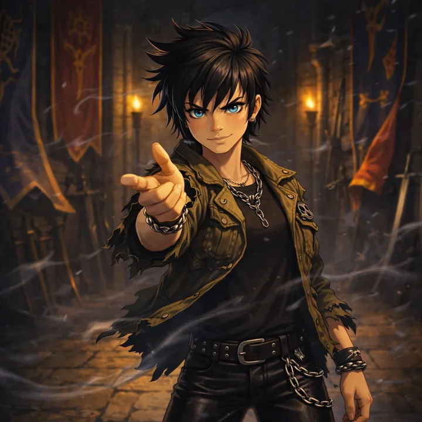
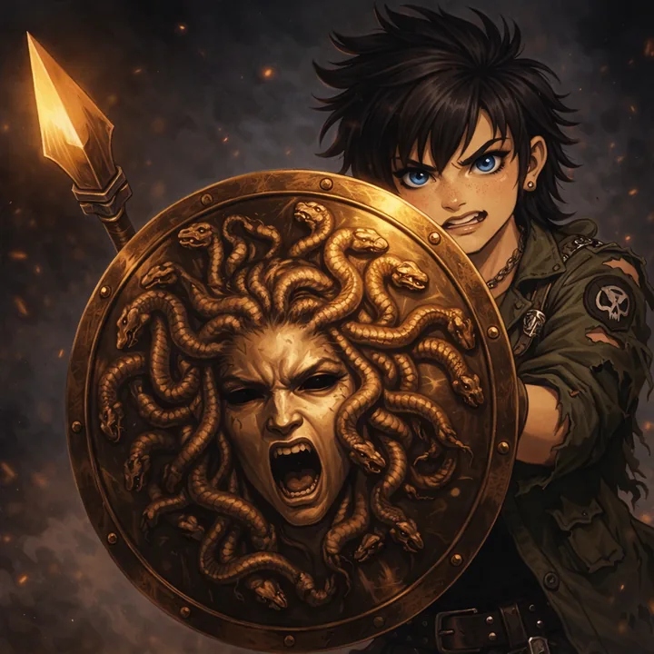
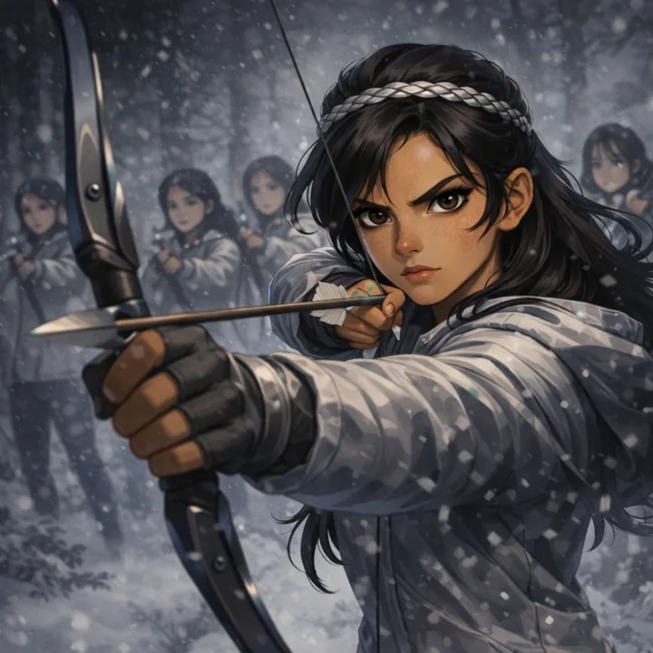
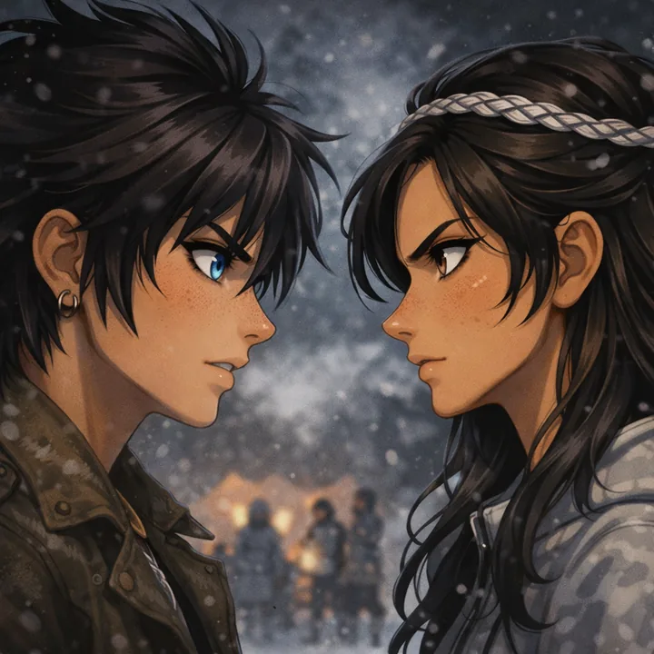
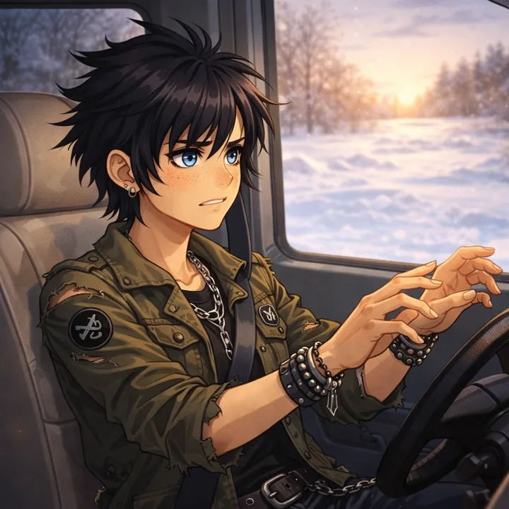
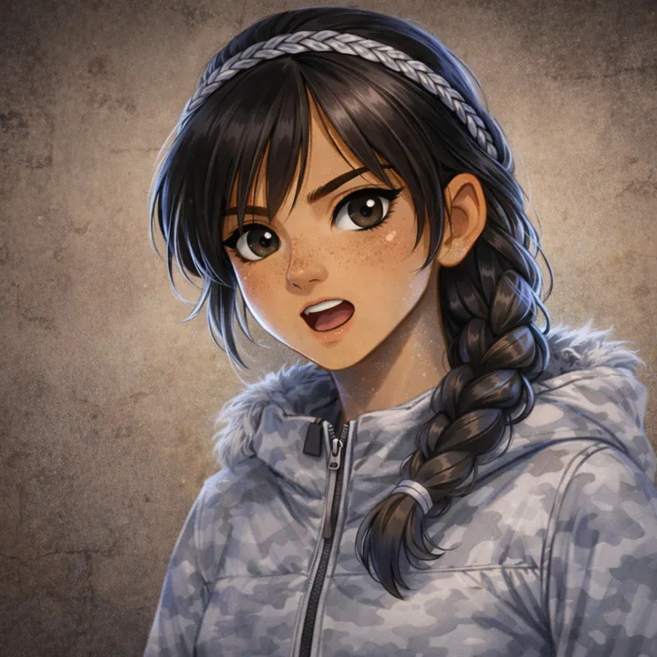

The Titan's Curse
Click a chapter number to start reading.
MY RESCUE OPERATION GOES VERY WRONG
The Friday before winter break, my mom packed me an overnight bag and a few deadly weapons and took me to a new boarding school. We picked up my friends Annabeth and Thalia on the way.
It was an eight-hour drive from New York to Bar Harbor, Maine. Sleet and snow pounded the highway. Annabeth, Thalia, and I hadn’t seen each other in months, but between the blizzard and the thought of what we were about to do, we were too nervous to talk much. Except for my mom. She talks more when she’s nervous. By the time we finally got to Westover Hall, it was getting dark, and she’d told Annabeth and Thalia every embarrassing baby story there was to tell about me.

Thalia wiped the fog off the car window and peered outside. “Oh, yeah. This’ll be fun.”
Westover Hall looked like an evil knight’s castle. It was all black stone, with towers and slit windows and a big set of wooden double doors. It stood on a snowy cliff overlooking this big frosty forest on one side and the gray churning ocean on the other.

“Are you sure you don’t want me to wait?” my mother asked.
“No, thanks, Mom,” I said. “I don’t know how long it will take. We’ll be okay.”
“But how will you get back? I’m worried, Percy.”
I hoped I wasn’t blushing. It was bad enough I had to depend on my mom to drive me to my battles.
“It’s okay, Ms. Jackson.” Annabeth smiled reassuringly. Her blond hair was tucked into a ski cap and her gray eyes were the same color as the ocean. “We’ll keep him out of trouble.”
My mom seemed to relax a little. She thinks Annabeth is the most levelheaded demigod ever to hit eighth grade. She’s sure Annabeth often keeps me from getting killed. She’s right, but that doesn’t mean I have to like it.
“All right, dears,” my mom said. “Do you have everything you need?”
“Yes, Ms. Jackson,” Thalia said. “Thanks for the ride.”
“Extra sweaters? You have my cell phone number?”
“Mom—”
“Your ambrosia and nectar, Percy? And a golden drachma in case you need to contact camp?”
“Mom, seriously! We’ll be fine. Come on, guys.”
She looked a little hurt, and I was sorry about that, but I was ready to be out of that car. If my mom told one more story about how cute I looked in the bathtub when I was three years old, I was going to burrow into the snow and freeze myself to death.
Annabeth and Thalia followed me outside. The wind blew straight through my coat like ice daggers.
Once my mother’s car was out of sight, Thalia said, “Your mom is so cool, Percy.”
“She’s pretty okay,” I admitted. “What about you? You ever get in touch with your mom?”
As soon as I said it, I wished I hadn’t. Thalia was great at giving evil looks, what with the punk clothes she always wears—the ripped-up army jacket, black leather pants and chain jewelry, the black eyeliner and those intense blue eyes. But the look she gave me now was a perfect evil “ten.”
“If that was any of your business, Percy—”
“We’d better get inside,” Annabeth interrupted. “Grover will be waiting.”
Thalia looked at the castle and shivered. “You’re right. I wonder what he found here that made him send the distress call.”
I stared up at the dark towers of Westover Hall. “Nothing good,” I guessed.
The oak doors groaned open, and the three of us stepped into the entry hall in a swirl of snow.
All I could say was, “Whoa.”
The place was huge. The walls were lined with battle flags and weapon displays: antique rifles, battle axes, and a bunch of other stuff. I mean, I knew Westover was a military school and all, but the decorations seemed like overkill. Literally.
My hand went to my pocket, where I kept my lethal ballpoint pen, Riptide. I could already sense something wrong in this place. Something dangerous. Thalia was rubbing her silver bracelet, her favorite magic item. I knew we were thinking the same thing. A fight was coming.
Annabeth started to say, “I wonder where—”
The doors slammed shut behind us.
“Oo-kay,” I mumbled. “Guess we’ll stay a while.”
I could hear music echoing from the other end of the hall. It sounded like dance music.
We stashed our overnight bags behind a pillar and started down the hall. We hadn’t gone very far when I heard footsteps on the stone floor, and a man and woman marched out of the shadows to intercept us.
They both had short gray hair and black military-style uniforms with red trim. The woman had a wispy mustache, and the guy was clean-shaven, which seemed kind of backward to me. They both walked stiffly, like they had broomsticks taped to their spines.

“Well?” the woman demanded. “What are you doing here?”
“Um…” I realized I hadn’t planned for this. I’d been so focused on getting to Grover and finding out what was wrong, I hadn’t considered that someone might question three kids sneaking into the school at night. We hadn’t talked at all in the car about how we would get inside. I said, “Ma’am, we’re just—”
“Ha!” the man snapped, which made me jump. “Visitors are not allowed at the dance! You shall be eee-jected!”
He had an accent—French, maybe. He pronounced his J like in Jacques. He was tall, with a hawkish face. His nostrils flared when he spoke, which made it really hard not to stare up his nose, and his eyes were two different colors—one brown, one blue—like an alley cat’s.
I figured he was about to toss us into the snow, but then Thalia stepped forward and did something very weird.
She snapped her fingers. The sound was sharp and loud. Maybe it was just my imagination, but I felt a gust of wind ripple out from her hand, across the room. It washed over all of us, making the banners rustle on the walls.
“Oh, but we’re not visitors, sir,” Thalia said. “We go to school here. You remember: I’m Thalia. And this is Annabeth and Percy. We’re in the eighth grade.”
The male teacher narrowed his two-colored eyes. I didn’t know what Thalia was thinking. Now we’d probably get punished for lying and thrown into the snow. But the man seemed to be hesitating.
He looked at his colleague. “Ms. Gottschalk, do you know these students?”
Despite the danger we were in, I had to bite my tongue to keep from laughing. A teacher named Got Chalk? He had to be kidding.
The woman blinked, like someone had just woken her up from a trance. “I…yes. I believe I do, sir.” She frowned at us. “Annabeth. Thalia. Percy. What are you doing away from the gymnasium?”
Before we could answer, I heard more footsteps, and Grover ran up, breathless. “You made it! You—”
He stopped short when he saw the teachers. “Oh, Mrs. Gottschalk. Dr. Thorn! I, uh—”
“What is it, Mr. Underwood?” said the man. His tone made it clear that he detested Grover. “What do you mean, they made it? These students live here.”
Grover swallowed. “Yes, sir. Of course, Dr. Thorn. I just meant, I’m so glad they made…the punch for the dance! The punch is great. And they made it!”
Dr. Thorn glared at us. I decided one of his eyes had to be fake. The brown one? The blue one? He looked like he wanted to pitch us off the castle’s highest tower, but then Mrs. Gottschalk said dreamily, “Yes, the punch is excellent. Now run along, all of you. You are not to leave the gymnasium again!”
We didn’t wait to be told twice. We left with a lot of “Yes, ma’ams” and “Yes, sirs” and a couple of salutes, just because it seemed like the thing to do.
Grover hustled us down the hall in the direction of the music.
I could feel the teachers’ eyes on my back, but I walked closely to Thalia and asked in a low voice, “How did you do that finger-snap thing?”
“You mean the Mist? Hasn’t Chiron shown you how to do that yet?”
An uncomfortable lump formed in my throat. Chiron was our head trainer at camp, but he’d never shown me anything like that. Why had he shown Thalia and not me?
Grover hurried us to a door that had GYM written on the glass. Even with my dyslexia, I could read that much.
“That was close!” Grover said. “Thank the gods you got here!”
Annabeth and Thalia both hugged Grover. I gave him a big high five.
It was good to see him after so many months. He’d gotten a little taller and had sprouted a few more whiskers, but otherwise he looked like he always did when he passed for human—a red cap on his curly brown hair to hide his goat horns, baggy jeans and sneakers with fake feet to hide his furry legs and hooves. He was wearing a black T-shirt that took me a few seconds to read. It said WESTOVER HALL: GRUNT. I wasn’t sure whether that was, like, Grover’s rank or maybe just the school motto.

“So what’s the emergency?” I asked.
Grover took a deep breath. “I found two.”
“Two half-bloods?” Thalia asked, amazed. “Here?”
Grover nodded.
Finding one half-blood was rare enough. This year, Chiron had put the satyrs on emergency overtime and sent them all over the country, scouring schools from fourth grade through high school for possible recruits. These were desperate times. We were losing campers. We needed all the new fighters we could find. The problem was, there just weren’t that many demigods out there.
“A brother and a sister,” he said. “They’re ten and twelve. I don’t know their parentage, but they’re strong. We’re running out of time, though. I need help.”
“Monsters?”
“One.” Grover looked nervous. “He suspects. I don’t think he’s positive yet, but this is the last day of term. I’m sure he won’t let them leave campus without finding out. It may be our last chance! Every time I try to get close to them, he’s always there, blocking me. I don’t know what to do!”
Grover looked at Thalia desperately. I tried not to feel upset by that. Used to be, Grover looked to me for answers, but Thalia had seniority. Not just because her dad was Zeus. Thalia had more experience than any of us with fending off monsters in the real world.
“Right,” she said. “These half-bloods are at the dance?”
Grover nodded.
“Then let’s dance,” Thalia said. “Who’s the monster?”
“Oh,” Grover said, and looked around nervously. “You just met him. The vice principal, Dr. Thorn.”
Weird thing about military schools: the kids go absolutely nuts when there’s a special event and they get to be out of uniform. I guess it’s because everything’s so strict the rest of the time, they feel like they’ve got to overcompensate or something.
There were black and red balloons all over the gym floor, and guys were kicking them in each other’s faces, or trying to strangle each other with the crepe-paper streamers taped to the walls. Girls moved around in football huddles, the way they always do, wearing lots of makeup and spaghetti-strap tops and brightly colored pants and shoes that looked like torture devices. Every once in a while they’d surround some poor guy like a pack of piranhas, shrieking and giggling, and when they finally moved on, the guy would have ribbons in his hair and a bunch of lipstick graffiti all over his face. Some of the older guys looked more like me—uncomfortable, hanging out at the edges of the gym and trying to hide, like any minute they might have to fight for their lives. Of course, in my case, it was true.…
“There they are.” Grover nodded toward a couple of younger kids arguing in the bleachers. “Bianca and Nico di Angelo.”
The girl wore a floppy green cap, like she was trying to hide her face. The boy was obviously her little brother. They both had dark silky hair and olive skin, and they used their hands a lot as they talked. The boy was shuffling some kind of trading cards. His sister seemed to be scolding him about something. She kept looking around like she sensed something was wrong.

Annabeth said, “Do they…I mean, have you told them?”
Grover shook his head. “You know how it is. That could put them in more danger. Once they realize who they are, their scent becomes stronger.”
He looked at me, and I nodded. I’d never really understood what half-bloods “smell” like to monsters and satyrs, but I knew that your scent could get you killed. And the more powerful a demigod you became, the more you smelled like a monster’s lunch.
“So let’s grab them and get out of here,” I said.
I started forward, but Thalia put her hand on my shoulder. The vice principal, Dr. Thorn, had slipped out of a doorway near the bleachers and was standing near the di Angelo siblings. He nodded coldly in our direction. His blue eye seemed to glow.
Judging from his expression, I guessed Thorn hadn’t been fooled by Thalia’s trick with the Mist after all. He suspected who we were. He was just waiting to see why we were here.
“Don’t look at the kids,” Thalia ordered. “We have to wait for a chance to get them. We need to pretend we’re not interested in them. Throw him off the scent.”
“How?”
“We’re three powerful half-bloods. Our presence should confuse him. Mingle. Act natural. Do some dancing. But keep an eye on those kids.”
“Dancing?” Annabeth asked.
Thalia nodded. She cocked her ear to the music and made a face. “Ugh. Who chose the Jesse McCartney?”
Grover looked hurt. “I did.”
“Oh my gods, Grover. That is so lame. Can’t you play, like, Green Day or something?”
“Green who?”
“Never mind. Let’s dance.”
“But I can’t dance!”
“You can if I’m leading,” Thalia said. “Come on, goat boy.”
Grover yelped as Thalia grabbed his hand and led him onto the dance floor.
Annabeth smiled.
“What?” I asked.
“Nothing. It’s just cool to have Thalia back.”
Annabeth had grown taller than me since last summer, which I found kind of disturbing. She used to wear no jewelry except for her Camp Half-Blood bead necklace, but now she wore little silver earrings shaped like owls—the symbol of her mother, Athena. She pulled off her ski cap, and her long blond hair tumbled down her shoulders. It made her look older, for some reason.
“So…” I tried to think of something to say. Act natural, Thalia had told us. When you’re a half-blood on a dangerous mission, what the heck is natural? “Um, design any good buildings lately?”
Annabeth’s eyes lit up, the way they always did when she talked about architecture. “Oh my gods, Percy. At my new school, I get to take 3-D design as an elective, and there’s this cool computer program…”
She went on to explain how she’d designed this huge monument that she wanted to build at Ground Zero in Manhattan. She talked about structural supports and facades and stuff, and I tried to listen. I knew she wanted to be a super architect when she grew up—she loves math and historical buildings and all that—but I hardly understood a word she was saying.
The truth was I was kind of disappointed to hear that she liked her new school so much. It was the first time she’d gone to school in New York. I’d been hoping to see her more often. It was a boarding school in Brooklyn, and she and Thalia were both attending, close enough to Camp Half-Blood that Chiron could help if they got in any trouble. Because it was an all-girls school, and I was going to MS-54 in Manhattan, I hardly ever saw them.
“Yeah, uh, cool,” I said. “So you’re staying there the rest of the year, huh?”
Her face got dark. “Well, maybe, if I don’t—”
“Hey!” Thalia called to us. She was slow dancing with Grover, who was tripping all over himself, kicking Thalia in the shins, and looking like he wanted to die. At least his feet were fake. Unlike me, he had an excuse for being clumsy.
“Dance, you guys!” Thalia ordered. “You look stupid just standing there.”
I looked nervously at Annabeth, then at the groups of girls who were roaming the gym.
“Well?” Annabeth said.
“Um, who should I ask?”
She punched me in the gut. “Me, Seaweed Brain.”
“Oh. Oh, right.”
So we went onto the dance floor, and I looked over to see how Thalia and Grover were doing things. I put one hand on Annabeth’s hip, and she clasped my other hand like she was about to judo throw me.

“I’m not going to bite,” she told me. “Honestly, Percy. Don’t you guys have dances at your school?”
I didn’t answer. The truth was we did. But I’d never, like, actually danced at one. I was usually one of the guys playing basketball in the corner.
We shuffled around for a few minutes. I tried to concentrate on little things, like the crepe-paper streamers and the punch bowl—anything but the fact that Annabeth was taller than me, and my hands were sweaty and probably gross, and I kept stepping on her toes.
“What were you saying earlier?” I asked. “Are you having trouble at school or something?”
She pursed her lips. “It’s not that. It’s my dad.”
“Uh-oh.” I knew Annabeth had a rocky relationship with her father. “I thought it was getting better with you two. Is it your stepmom again?”
Annabeth sighed. “He decided to move. Just when I was getting settled in New York, he took this stupid new job researching for a World War I book. In San Francisco.”
She said this the same way she might say Fields of Punishment or Hades’s gym shorts.
“So he wants you to move out there with him?” I asked.
“To the other side of the country,” she said miserably. “And half-bloods can’t live in San Francisco. He should know that.”
“What? Why not?”
Annabeth rolled her eyes. Maybe she thought I was kidding. “You know. It’s right there.”
“Oh,” I said. I had no idea what she was talking about, but I didn’t want to sound stupid. “So…you’ll go back to living at camp or what?”
“It’s more serious than that, Percy. I…I probably should tell you something.”
Suddenly she froze. “They’re gone.”
“What?”
I followed her gaze. The bleachers. The two half-blood kids, Bianca and Nico, were no longer there. The door next to the bleachers was wide open. Dr. Thorn was nowhere in sight.
“We have to get Thalia and Grover!” Annabeth looked around frantically. “Oh, where’d they dance off to? Come on!”
She ran through the crowd. I was about to follow when a mob of girls got in my way. I maneuvered around them to avoid getting the ribbon-and-lipstick treatment, and by the time I was free, Annabeth had disappeared. I turned a full circle, looking for her or Thalia and Grover. Instead, I saw something that chilled my blood.
About fifty feet away, lying on the gym floor, was a floppy green cap just like the one Bianca di Angelo had been wearing. Near it were a few scattered trading cards. Then I caught a glimpse of Dr. Thorn. He was hurrying out a door at the opposite end of the gym, steering the di Angelo kids by the scruffs of their necks, like kittens.

I still couldn’t see Annabeth, but I knew she’d be heading the other way, looking for Thalia and Grover.
I almost ran after her, and then I thought, Wait.
I remembered what Thalia had said to me in the entry hall, looking at me all puzzled when I asked about the finger-snap trick: Hasn’t Chiron shown you how to do that yet? I thought about the way Grover had turned to her, expecting her to save the day.
Not that I resented Thalia. She was cool. It wasn’t her fault her dad was Zeus and she got all the attention.…Still, I didn’t need to run after her to solve every problem. Besides, there wasn’t time. The di Angelos were in danger. They might be long gone by the time I found my friends. I knew monsters. I could handle this myself.
I took Riptide out of my pocket and ran after Dr. Thorn.
The door led into a dark hallway. I heard sounds of scuffling up ahead, then a painful grunt. I uncapped Riptide.
The pen grew in my hands until I held a bronze Greek sword about three-feet long with a leather-bound grip. The blade glowed faintly, casting a golden light on the rows of lockers.
I jogged down the corridor, but when I got to the other end, no one was there. I opened a door and found myself back in the main entry hall. I was completely turned around. I didn’t see Dr. Thorn anywhere, but there on the opposite side of the room were the di Angelo kids. They stood frozen in horror, staring right at me.
I advanced slowly, lowering the tip of my sword. “It’s okay. I’m not going to hurt you.”
They didn’t answer. Their eyes were full of fear. What was wrong with them? Where was Dr. Thorn? Maybe he’d sensed the presence of Riptide and retreated. Monsters hated celestial bronze weapons.
“My name’s Percy,” I said, trying to keep my voice level. “I’m going to take you out of here, get you somewhere safe.”
Bianca’s eyes widened. Her fists clenched. Only too late did I realize what her look meant. She wasn’t afraid of me. She was trying to warn me.
I whirled around and something went WHIIISH! Pain exploded in my shoulder. A force like a huge hand yanked me backward and slammed me to the wall.
I slashed with my sword but there was nothing to hit.
A cold laugh echoed through the hall.
“Yes, Perseus Jackson,” Dr. Thorn said. His accent mangled the J in my last name. “I know who you are.”
I tried to free my shoulder. My coat and shirt were pinned to the wall by some kind of spike—a black dagger-like projectile about a foot long. It had grazed the skin of my shoulder as it passed through my clothes, and the cut burned. I’d felt something like this before. Poison.

I forced myself to concentrate. I would not pass out.
A dark silhouette now moved toward us. Dr. Thorn stepped into the dim light. He still looked human, but his face was ghoulish. He had perfect white teeth and his brown/blue eyes reflected the light of my sword.
“Thank you for coming out of the gym,” he said. “I hate middle school dances.”
I tried to swing my sword again, but he was just out of reach.
WHIIIISH! A second projectile shot from somewhere behind Dr. Thorn. He didn’t appear to move. It was as if someone invisible were standing behind him, throwing knives.
Next to me, Bianca yelped. The second thorn impaled itself in the stone wall, half an inch from her face.
“All three of you will come with me,” Dr. Thorn said. “Quietly. Obediently. If you make a single noise, if you call out for help or try to fight, I will show you just how accurately I can throw.”
THE VICE PRINCIPAL GETS A MISSILE LAUNCHER
I didn’t know what kind of monster Dr. Thorn was, but he was fast.
Maybe I could defend myself if I could get my shield activated. All that it would take was a touch of my wristwatch. But defending the di Angelo kids was another matter. I needed help, and there was only one way I could think to get it.
I closed my eyes.
“What are you doing, Jackson?” hissed Dr. Thorn. “Keep moving!”
I opened my eyes and kept shuffling forward. “It’s my shoulder,” I lied, trying to sound miserable, which wasn’t hard. “It burns.”
“Bah! My poison causes pain. It will not kill you. Walk!”
Thorn herded us outside, and I tried to concentrate. I pictured Grover’s face. I focused on my feelings of fear and danger. Last summer, Grover had created an empathy link between us. He’d sent me visions in my dreams to let me know when he was in trouble. As far as I knew, we were still linked, but I’d never tried to contact Grover before. I didn’t even know if it would work while Grover was awake.
Hey, Grover! I thought. Thorn’s kidnapping us! He’s a poisonous spike-throwing maniac! Help!
Thorn marched us into the woods. We took a snowy path dimly lit by old-fashioned lamplights. My shoulder ached. The wind blowing through my ripped clothes was so cold that I felt like a Percysicle.
“There is a clearing ahead,” Thorn said. “We will summon your ride.”
“What ride?” Bianca demanded. “Where are you taking us?”
“Silence, you insufferable girl!”
“Don’t talk to my sister that way!” Nico said. His voice quivered, but I was impressed that he had the guts to say anything at all.

Dr. Thorn made a growling sound that definitely wasn’t human. It made the hairs stand up on the back of my neck, but I forced myself to keep walking and pretend I was being a good little captive. Meanwhile, I projected my thoughts like crazy—anything to get Grover’s attention: Grover! Apples! Tin cans! Get your furry goat behind out here and bring some heavily armed friends!
“Halt,” Thorn said.
The woods had opened up. We’d reached a cliff overlooking the sea. At least, I sensed the sea was down there, hundreds of feet below. I could hear the waves churning and I could smell the cold salty froth. But all I could see was mist and darkness.
Dr. Thorn pushed us toward the edge. I stumbled, and Bianca caught me.
“Thanks,” I murmured.
“What is he?” she whispered. “How do we fight him?”
“I…I’m working on it.”
“I’m scared,” Nico mumbled. He was fiddling with something—a little metal toy soldier of some kind.
“Stop talking!” Dr. Thorn said. “Face me!”
We turned.
Thorn’s two-tone eyes glittered hungrily. He pulled something from under his coat. At first I thought it was a switchblade, but it was only a phone. He pressed the side button and said, “The package—it is ready to deliver.”
There was a garbled reply, and I realized Thorn was in walkie-talkie mode. This seemed way too modern and creepy—a monster using a mobile phone.
I glanced behind me, wondering how far the drop was.
Dr. Thorn laughed. “By all means, Son of Poseidon. Jump! There is the sea. Save yourself.”
“What did he call you?” Bianca muttered.
“I’ll explain later,” I said.
“You do have a plan, right?”
Grover! I thought desperately. Come to me!
Maybe I could get both the di Angelos to jump with me into the ocean. If we survived the fall, I could use the water to protect us. I’d done things like that before. If my dad was in a good mood, and listening, he might help. Maybe.
“I would kill you before you ever reached the water,” Dr. Thorn said, as if reading my thoughts. “You do not realize who I am, do you?”
A flicker of movement behind him, and another missile whistled so close to me that it nicked my ear. Something had sprung up behind Dr. Thorn—like a catapult, but more flexible…almost like a tail.
“Unfortunately,” Thorn said, “you are wanted alive, if possible. Otherwise you would already be dead.”
“Who wants us?” Bianca demanded. “Because if you think you’ll get a ransom, you’re wrong. We don’t have any family. Nico and I…” Her voice broke a little. “We’ve got no one but each other.”
“Aww,” Dr. Thorn said. “Do not worry, little brats. You will be meeting my employer soon enough. Then you will have a brand-new family.”
“Luke,” I said. “You work for Luke.”
Dr. Thorn’s mouth twisted with distaste when I said the name of my old enemy—a former friend who’d tried to kill me several times. “You have no idea what is happening, Perseus Jackson. I will let the General enlighten you. You are going to do him a great service tonight. He is looking forward to meeting you.”
“The General?” I asked. Then I realized I’d said it with a French accent. “I mean…who’s the General?”
Thorn looked toward the horizon. “Ah, here we are. Your transportation.”
I turned and saw a light in the distance, a searchlight over the sea. Then I heard the chopping of helicopter blades getting louder and closer.

“Where are you taking us?” Nico said.
“You should be honored, my boy. You will have the opportunity to join a great army! Just like that silly game you play with cards and dolls.”
“They’re not dolls! They’re figurines! And you can take your great army and—”
“Now, now,” Dr. Thorn warned. “You will change your mind about joining us, my boy. And if you do not, well…there are other uses for half-bloods. We have many monstrous mouths to feed. The Great Stirring is underway.”
“The Great what?” I asked. Anything to keep him talking while I tried to figure out a plan.
“The stirring of monsters.” Dr. Thorn smiled evilly. “The worst of them, the most powerful, are now waking. Monsters that have not been seen in thousands of years. They will cause death and destruction the likes of which mortals have never known. And soon we shall have the most important monster of all—the one that shall bring about the downfall of Olympus!”
“Okay,” Bianca whispered to me. “He’s completely nuts.”
“We have to jump off the cliff,” I told her quietly. “Into the sea.”
“Oh, super idea. You’re completely nuts, too.”
I never got the chance to argue with her, because just then an invisible force slammed into me.
Looking back on it, Annabeth’s move was brilliant. Wearing her cap of invisibility, she plowed into the di Angelos and me, knocking us to the ground. For a split second, Dr. Thorn was taken by surprise, so his first volley of missiles zipped harmlessly over our heads. This gave Thalia and Grover a chance to advance from behind—Thalia wielding her magic shield, Aegis.
If you’ve never seen Thalia run into battle, you have never been truly frightened. She uses a huge spear that expands from this collapsible Mace canister she carries in her pocket, but that’s not the scary part. Her shield is modeled after one her dad Zeus uses—also called Aegis—a gift from Athena. The shield has the head of the gorgon Medusa molded into the bronze, and even though it won’t turn you to stone, it’s so horrible, most people will panic and run at the sight of it.
Even Dr. Thorn winced and growled when he saw it.
Thalia moved in with her spear. “For Zeus!”
I thought Dr. Thorn was a goner. Thalia jabbed at his head, but he snarled and swatted the spear aside. His hand changed into an orange paw, with enormous claws that sparked against Thalia’s shield as he slashed. If it hadn’t been for Aegis, Thalia would’ve been sliced like a loaf of bread. As it was, she managed to roll backward and land on her feet.
The sound of the helicopter was getting louder behind me, but I didn’t dare look.
Dr. Thorn launched another volley of missiles at Thalia, and this time I could see how he did it. He had a tail—a leathery, scorpionlike tail that bristled with spikes at the tip. The missiles deflected off Aegis, but the force of their impact knocked Thalia down.
Grover sprang forward. He put his reed pipes to his lips and began to play—a frantic jig that sounded like something pirates would dance to. Grass broke through the snow. Within seconds, rope-thick weeds were wrapping around Dr. Thorn’s legs, entangling him.
Dr. Thorn roared and began to change. He grew larger until he was in his true form—his face still human, but his body that of a huge lion. His leathery, spiky tail whipped deadly thorns in all directions.
“A manticore!” Annabeth said, now visible. Her magical New York Yankees cap had come off when she’d plowed into us.
“Who are you people?” Bianca di Angelo demanded. “And what is that?”
“A manticore?” Nico gasped. “He’s got three thousand attack power and plus five to saving throws!”
I didn’t know what he was talking about, but I didn’t have time to worry about it. The manticore clawed Grover’s magic weeds to shreds then turned toward us with a snarl.

“Get down!” Annabeth pushed the di Angelos flat into the snow. At the last second, I remembered my own shield. I hit my wristwatch, and metal plating spiraled out into a thick bronze shield. Not a moment too soon. The thorns impacted against it with such force they dented the metal. The beautiful shield, a gift from my brother, was badly damaged. I wasn’t sure it would even stop a second volley.
I heard a thwack and a yelp, and Grover landed next to me with a thud.
“Yield!” the monster roared.
“Never!” Thalia yelled from across the field. She charged the monster, and for a second, I thought she would run him through. But then there was a thunderous noise and a blaze of light from behind us. The helicopter appeared out of the mist, hovering just beyond the cliffs. It was a sleek black military-style gunship, with attachments on the sides that looked like laser-guided rockets. The helicopter had to be manned by mortals, but what was it doing here? How could mortals be working with a monster? The searchlights blinded Thalia, and the manticore swatted her away with its tail. Her shield flew off into the snow. Her spear flew in the other direction.
“No!” I ran out to help her. I parried away a spike just before it would’ve hit her chest. I raised my shield over us, but I knew it wouldn’t be enough.
Dr. Thorn laughed. “Now do you see how hopeless it is? Yield, little heroes.”
We were trapped between a monster and a fully armed helicopter. We had no chance.
Then I heard a clear, piercing sound: the call of a hunting horn blowing in the woods.
The manticore froze. For a moment, no one moved. There was only the swirl of snow and wind and the chopping of the helicopter blades.
“No,” Dr. Thorn said. “It cannot be—”
His sentence was cut short when something shot past me like a streak of moonlight. A glowing silver arrow sprouted from Dr. Thorn’s shoulder.
He staggered backward, wailing in agony.
“Curse you!” Thorn cried. He unleashed his spikes, dozens of them at once, into the woods where the arrow had come from, but just as fast, silvery arrows shot back in reply. It almost looked like the arrows had intercepted the thorns in midair and sliced them in two, but my eyes must’ve been playing tricks on me. No one, not even Apollo’s kids at camp, could shoot with that much accuracy.
The manticore pulled the arrow out of his shoulder with a howl of pain. His breathing was heavy. I tried to swipe at him with my sword, but he wasn’t as injured as he looked. He dodged my attack and slammed his tail into my shield, knocking me aside.
Then the archers came from the woods. They were girls, about a dozen of them. The youngest was maybe ten. The oldest, about fourteen, like me. They wore silvery ski parkas and jeans, and they were all armed with bows. They advanced on the manticore with determined expressions.
“The Hunters!” Annabeth cried.
Next to me, Thalia muttered, “Oh, wonderful.”
I didn’t have a chance to ask what she meant.
One of the older archers stepped forward with her bow drawn. She was tall and graceful with coppery colored skin. Unlike the other girls, she had a silver circlet braided into the top of her long dark hair, so she looked like some kind of Persian princess. “Permission to kill, my lady?”
I couldn’t tell who she was talking to, because she kept her eyes on the manticore.
The monster wailed. “This is not fair! Direct interference! It is against the Ancient Laws.”
“Not so,” another girl said. This one was a little younger than me, maybe twelve or thirteen. She had auburn hair gathered back in a ponytail and strange eyes, silvery yellow like the moon. Her face was so beautiful it made me catch my breath, but her expression was stern and dangerous. “The hunting of all wild beasts is within my sphere. And you, foul creature, are a wild beast.” She looked at the older girl with the circlet. “Zoë, permission granted.”
The manticore growled. “If I cannot have these alive, I shall have them dead!”
He lunged at Thalia and me, knowing we were weak and dazed.
“No!” Annabeth yelled, and she charged at the monster.
“Get back, half-blood!” the girl with the circlet said. “Get out of the line of fire!”
But Annabeth leaped onto the monster’s back and drove her knife into his mane. The manticore howled, turning in circles with his tail flailing as Annabeth hung on for dear life.
“Fire!” Zoë ordered.
“No!” I screamed.
But the Hunters let their arrows fly. The first caught the manticore in the neck. Another hit his chest. The manticore staggered backward, wailing, “This is not the end, Huntress! You shall pay!”
And before anyone could react, the monster, with Annabeth still on his back, leaped over the cliff and tumbled into the darkness.
“Annabeth!” I yelled.
I started to run after her, but our enemies weren’t done with us. There was a snap-snap-snap from the helicopter—the sound of gunfire.
Most of the Hunters scattered as tiny holes appeared in the snow at their feet, but the girl with auburn hair just looked up calmly at the helicopter.
“Mortals,” she announced, “are not allowed to witness my hunt.”
She thrust out her hand, and the helicopter exploded into dust—no, not dust. The black metal dissolved into a flock of birds—ravens, which scattered into the night.

The Hunters advanced on us.
The one called Zoë stopped short when she saw Thalia. “You,” she said with distaste.
“Zoë Nightshade.” Thalia’s voice trembled with anger. “Perfect timing, as usual.”
Zoë scanned the rest of us. “Four half-bloods and a satyr, my lady.”
“Yes,” the younger girl said. “Some of Chiron’s campers, I see.”
“Annabeth!” I yelled. “You have to let us save her!”
The auburn-haired girl turned toward me. “I’m sorry, Percy Jackson, but your friend is beyond help.”
I tried to struggle to my feet, but a couple of the girls held me down.
“You are in no condition to be hurling yourself off cliffs,” the auburn-haired girl said.
“Let me go!” I demanded. “Who do you think you are?”
Zoë stepped forward as if to smack me.
“No,” the other girl ordered. “I sense no disrespect, Zoë. He is simply distraught. He does not understand.”
The young girl looked at me, her eyes colder and brighter than the winter moon. “I am Artemis,” she said. “Goddess of the Hunt.”

BIANCA DI ANGELO MAKES A CHOICE
After seeing Dr. Thorn turn into a monster and plummet off the edge of a cliff with Annabeth, you’d think nothing else could shock me. But when this twelve-year-old girl told me she was the goddess Artemis, I said something real intelligent like, “Um…okay.”
That was nothing compared to Grover. He gasped, then knelt hastily in the snow and started yammering, “Thank you, Lady Artemis! You’re so…you’re so…Wow!”
“Get up, goat boy!” Thalia snapped. “We have other things to worry about. Annabeth is gone!”
“Whoa,” Bianca di Angelo said. “Hold up. Time out.”
Everybody looked at her. She pointed her finger at all of us in turn, like she was trying to connect the dots. “Who…who are you people?”
Artemis’s expression softened. “It might be a better question, my dear girl, to ask who are you? Who are your parents?”
Bianca glanced nervously at her brother, who was still staring in awe at Artemis.
“Our parents are dead,” Bianca said. “We’re orphans. There’s a bank trust that pays for our school, but…”
She faltered. I guess she could tell from our faces that we didn’t believe her.
“What?” she demanded. “I’m telling the truth.”
“You are a half-blood,” Zoë Nightshade said. Her accent was hard to place. It sounded old-fashioned, like she was reading from a really old book. “One of thy parents was mortal. The other was an Olympian.”
“An Olympian…athlete?”
“No,” Zoë said. “One of the gods.”
“Cool!” said Nico.
“No!” Bianca’s voice quavered. “This is not cool!”
Nico danced around like he needed to use the restroom. “Does Zeus really have lightning bolts that do six hundred damage? Does he get extra movement points for—”
“Nico, shut up!” Bianca put her hands to her face. “This is not your stupid Mythomagic game, okay? There are no gods!”
As anxious as I felt about Annabeth—all I wanted to do was search for her—I couldn’t help feeling sorry for the di Angelos. I remembered what it was like for me when I first learned I was a demigod.
Thalia must’ve been feeling something similar, because the anger in her eyes subsided a little bit. “Bianca, I know it’s hard to believe. But the gods are still around. Trust me. They’re immortal. And whenever they have kids with regular humans, kids like us, well…Our lives are dangerous.”
“Dangerous,” Bianca said, “like the girl who fell.”
Thalia turned away. Even Artemis looked pained.
“Do not despair for Annabeth,” the goddess said. “She was a brave maiden. If she can be found, I shall find her.”
“Then why won’t you let us go look for her?” I asked.
“She is gone. Can’t you sense it, Son of Poseidon? Some magic is at work. I do not know exactly how or why, but your friend has vanished.”
I still wanted to jump off the cliff and search for her, but I had a feeling that Artemis was right. Annabeth was gone. If she’d been down there in the sea, I thought, I’d be able to feel her presence.
“Oo!” Nico raised his hand. “What about Dr. Thorn? That was awesome how you shot him with arrows! Is he dead?”
“He was a manticore,” Artemis said. “Hopefully he is destroyed for now, but monsters never truly die. They re-form over and over again, and they must be hunted whenever they reappear.”
“Or they’ll hunt us,” Thalia said.
Bianca di Angelo shivered. “That explains…Nico, you remember last summer, those guys who tried to attack us in the alley in D.C.?”
“And that bus driver,” Nico said. “The one with the ram’s horns. I told you that was real.”
“That’s why Grover has been watching you,” I said. “To keep you safe, if you turned out to be half-bloods.”
“Grover?” Bianca stared at him. “You’re a demigod?”
“Well, a satyr, actually.” He kicked off his shoes and displayed his goat hooves. I thought Bianca was going to faint right there.

“Grover, put your shoes back on,” Thalia said. “You’re freaking her out.”
“Hey, my hooves are clean!”
“Bianca,” I said, “we came here to help you. You and Nico need training to survive. Dr. Thorn won’t be the last monster you meet. You need to come to camp.”
“Camp?” she asked.
“Camp Half-Blood,” I said. “It’s where half-bloods learn to survive and stuff. You can join us, stay there year-round if you like.”
“Sweet, let’s go!” said Nico.
“Wait.” Bianca shook her head. “I don’t—”
“There is another option,” Zoë said.
“No, there isn’t!” Thalia said.
Thalia and Zoë glared at each other. I didn’t know what they were talking about, but I could tell there was bad history between them. For some reason, they seriously hated each other.
“We’ve burdened these children enough,” Artemis announced. “Zoë, we will rest here for a few hours. Raise the tents. Treat the wounded. Retrieve our guests’ belongings from the school.”
“Yes, my lady.”
“And, Bianca, come with me. I would like to speak with you.”
“What about me?” Nico asked.
Artemis considered the boy. “Perhaps you can show Grover how to play that card game you enjoy. I’m sure Grover would be happy to entertain you for a while…as a favor to me?”
Grover just about tripped over himself getting up. “You bet! Come on, Nico!”
Nico and Grover walked off toward the woods, talking about hit points and armor ratings and a bunch of other geeky stuff. Artemis led a confused-looking Bianca along the cliff. The Hunters began unpacking their knapsacks and making camp.
Zoë gave Thalia one more evil look, then left to oversee things.
As soon as she was gone, Thalia stamped her foot in frustration. “The nerve of those Hunters! They think they’re so…Argh!”
“I’m with you,” I said. “I don’t trust—”
“Oh, you’re with me?” Thalia turned on me furiously. “What were you thinking back there in the gym, Percy? You’d take on Dr. Thorn all by yourself ? You knew he was a monster!”
“I—”
“If we’d stuck together, we could’ve taken him without the Hunters getting involved. Annabeth might still be here. Did you think of that?”
My jaw clenched. I thought of some harsh things to say, and I might’ve said them too, but then I looked down and saw something navy blue lying in the snow at my feet. Annabeth’s New York Yankees baseball cap.

Thalia didn’t say another word. She wiped a tear from her cheek, turned, and marched off, leaving me alone with a trampled cap in the snow.
The Hunters set up their camping site in a matter of minutes. Seven large tents, all of silver silk, curved in a crescent around one side of a bonfire. One of the girls blew a silver dog whistle, and a dozen white wolves appeared out of the woods. They began circling the camp like guard dogs. The Hunters walked among them and fed them treats, completely unafraid, but I decided I would stick close to the tents. Falcons watched us from the trees, their eyes flashing in the firelight, and I got the feeling they were on guard duty, too. Even the weather seemed to bend to the goddess’s will. The air was still cold, but the wind died down and the snow stopped falling, so it was almost pleasant sitting by the fire.
Almost…except for the pain in my shoulder and the guilt weighing me down. I couldn’t believe Annabeth was gone. And as angry as I was at Thalia, I had a sinking feeling that she was right. It was my fault.
What had Annabeth wanted to tell me in the gym? Something serious, she’d said. Now I might never find out. I thought about how we’d danced together for half a song, and my heart felt even heavier.
I watched Thalia pacing in the snow at the edge of camp, walking among the wolves without fear. She stopped and looked back at Westover Hall, which was now completely dark, looming on the hillside beyond the woods. I wondered what she was thinking.
Seven years ago, Thalia had been turned into a pine tree by her father, to prevent her from dying. She’d stood her ground against an army of monsters on top of Half-Blood Hill in order to give her friends Luke and Annabeth time to escape. She’d only been back as a human for a few months now, and once in a while she would stand so motionless you’d think she was still a tree.
Finally, one of the Hunters brought me my backpack. Grover and Nico came back from their walk, and Grover helped me fix up my wounded arm.
“It’s green!” Nico said with delight.
“Hold still,” Grover told me. “Here, eat some ambrosia while I clean that out.”
I winced as he dressed the wound, but the ambrosia square helped. It tasted like homemade brownie, dissolving in my mouth and sending a warm feeling through my whole body. Between that and the magic salve Grover used, my shoulder felt better within a couple of minutes.

Nico rummaged through his own bag, which the Hunters had apparently packed for him, though how they’d snuck into Westover Hall unseen, I didn’t know. Nico laid out a bunch of figurines in the snow—little battle replicas of Greek gods and heroes. I recognized Zeus with a lightning bolt, Ares with a spear, Apollo with his sun chariot.
“Big collection,” I said.
Nico grinned. “I’ve got almost all of them, plus their holographic cards! Well, except for a few really rare ones.”
“You’ve been playing this game a long time?”
“Just this year. Before that…” He knit his eyebrows.
“What?” I asked.
“I forget. That’s weird.”
He looked unsettled, but it didn’t last long. “Hey, can I see that sword you were using?”
I showed him Riptide, and explained how it turned from a pen into a sword just by uncapping it.
“Cool! Does it ever run out of ink?”
“Um, well, I don’t actually write with it.”
“Are you really the son of Poseidon?”
“Well, yeah.”
“Can you surf really well, then?”
I looked at Grover, who was trying hard not to laugh.
“Jeez, Nico,” I said. “I’ve never really tried.”
He went on asking questions. Did I fight a lot with Thalia, since she was a daughter of Zeus? (I didn’t answer that one.) If Annabeth’s mother was Athena, the goddess of wisdom, then why didn’t Annabeth know better than to fall off a cliff? (I tried not to strangle Nico for asking that one.) Was Annabeth my girlfriend? (At this point, I was ready to stick the kid in a meat-flavored sack and throw him to the wolves.)
I figured any second he was going to ask me how many hit points I had, and I’d lose my cool completely, but then Zoë Nightshade came up to us.
“Percy Jackson.”
She had dark brown eyes and a slightly upturned nose. With her silver circlet and her proud expression, she looked so much like royalty that I had to resist the urge to sit up straight and say “Yes, ma’am.” She studied me distastefully, like I was a bag of dirty laundry she’d been sent to fetch.
“Come with me,” she said. “Lady Artemis wishes to speak with thee.”
Zoë led me to the last tent, which looked no different from the others, and waved me inside. Bianca di Angelo was seated next to the auburn-haired girl, who I still had trouble thinking of as Artemis.
The inside of the tent was warm and comfortable. Silk rugs and pillows covered the floor. In the center, a golden brazier of fire seemed to burn without fuel or smoke. Behind the goddess, on a polished oak display stand, was her huge silver bow, carved to resemble gazelle horns. The walls were hung with animal pelts: black bear, tiger, and several others I didn’t recognize. I figured an animal rights activist would’ve had a heart attack looking at all those rare skins, but maybe since Artemis was the goddess of the hunt, she could replenish whatever she shot. I thought she had another animal pelt lying next to her, and then I realized it was a live animal—a deer with glittering fur and silver horns, its head resting contentedly in Artemis’s lap.

“Join us, Percy Jackson,” the goddess said.
I sat across from her on the tent floor. The goddess studied me, which made me uncomfortable. She had such old eyes for a young girl.
“Are you surprised by my age?” she asked.
“Uh…a little.”
“I could appear as a grown woman, or a blazing fire, or anything else I want, but this is what I prefer. This is the average age of my Hunters, and all young maidens for whom I am patron, before they go astray.”
“Go astray?” I asked.
“Grow up. Become smitten with boys. Become silly, preoccupied, insecure. Forget themselves.”
“Oh.”
Zoë sat down at Artemis’s right. She glared at me as if all the stuff Artemis had just said was my fault, like I’d invented the idea of being a guy.
“You must forgive my Hunters if they do not welcome you,” Artemis said. “It is very rare that we would have boys in this camp. Boys are usually forbidden to have any contact with the Hunters. The last one to see this camp…” She looked at Zoë. “Which one was it?”
“That boy in Colorado,” Zoë said. “You turned him into a jackalope.”
“Ah, yes.” Artemis nodded, satisfied. “I enjoy making jackalopes. At any rate, Percy, I’ve asked you here so that you might tell me more of the manticore. Bianca has reported some of the…mmm, disturbing things the monster said. But she may not have understood them. I’d like to hear them from you.”
And so I told her.
When I was done, Artemis put her hand thoughtfully on her silver bow. “I feared this was the answer.”
Zoë sat forward. “The scent, my lady?”
“Yes.”
“What scent?” I asked.
“Things are stirring that I have not hunted in millennia,” Artemis murmured. “Prey so old I have nearly forgotten.”
She stared at me intently. “We came here tonight sensing the manticore, but he was not the one I seek. Tell me again, exactly what Dr. Thorn said.”
“Um, ‘I hate middle school dances.’”
“No, no. After that.”
“He said somebody called the General was going to explain things to me.” Zoë’s face paled. She turned to Artemis and started to say something, but Artemis raised her hand. “Go on, Percy,” the goddess said. “Well, then Thorn was talking about the Great Stir Pot—”
“Stirring,” Bianca corrected.
“Yeah. And he said, ‘Soon we shall have the most important monster of all—the one that shall bring about the downfall of Olympus.’”
The goddess was so still she could’ve been a statue. “Maybe he was lying,” I said. Artemis shook her head. “No. He was not. I’ve been too slow to see the signs. I must hunt this monster.” Zoë looked like she was trying very hard not to be afraid, but she nodded. “We will leave right away, my lady.”
“No, Zoë. I must do this alone.”
“But, Artemis—”
“This task is too dangerous even for the Hunters. You know where I must start my search. You cannot go there with me.”
“As…as you wish, my lady.”
“I will find this creature,” Artemis vowed. “And I shall bring it back to Olympus by winter solstice. It will be all the proof I need to convince the Council of the Gods of how much danger we are in.”
“You know what the monster is?” I asked.
Artemis gripped her bow. “Let us pray I am wrong.”
“Can goddesses pray?” I asked, because I’d never really thought about that.
A flicker of a smile played across Artemis’s lips. “Before I go, Percy Jackson, I have a small task for you.”
“Does it involve getting turned into a jackalope?”
“Sadly, no. I want you to escort the Hunters back to Camp Half-Blood. They can stay there in safety until I return.”
“What?” Zoë blurted out. “But, Artemis, we hate that place. The last time we stayed there—”
“Yes, I know,” Artemis said. “But I’m sure Dionysus will not hold a grudge just because of a little, ah, misunderstanding. It’s your right to use Cabin Eight whenever you are in need. Besides, I hear they rebuilt the cabins you burned down.”
Zoë muttered something about foolish campers.
“And now there is one last decision to make.” Artemis turned to Bianca. “Have you made up your mind, my girl?”
Bianca hesitated. “I’m still thinking about it.”
“Wait,” I said. “Thinking about what?”
“They…they’ve invited me to join the Hunt.”
“What? But you can’t! You have to come to Camp Half-Blood so Chiron can train you. It’s the only way you can learn to survive.”
“It is not the only way for a girl,” Zoë said.
I couldn’t believe I was hearing this. “Bianca, camp is cool! It’s got a pegasus stable and a sword-fighting arena and…I mean, what do you get by joining the Hunters?”
“To begin with,” Zoë said, “immortality.”
I stared at her, then at Artemis. “She’s kidding, right?”
“Zoë rarely kids about anything,” Artemis said. “My Hunters follow me on my adventures. They are my maidservants, my companions, my sisters-in-arms. Once they swear loyalty to me, they are indeed immortal…unless they fall in battle, which is unlikely. Or break their oath.”
“What oath?” I said.
“To foreswear romantic love forever,” Artemis said. “To never grow up, never get married. To be a maiden eternally.”
“Like you?”
The goddess nodded.
I tried to imagine what she was saying. Being immortal. Hanging out with only middle-school girls forever. I couldn’t get my mind around it. “So you just go around the country recruiting half-bloods—”
“Not just half-bloods,” Zoë interrupted. “Lady Artemis does not discriminate by birth. All who honor the goddess may join. Half-bloods, nymphs, mortals—”
“Which are you, then?”
Anger flashed in Zoë’s eyes. “That is not thy concern, boy. The point is Bianca may join if she wishes. It is her choice.”
“Bianca, this is crazy,” I said. “What about your brother? Nico can’t be a Hunter.”
“Certainly not,” Artemis agreed. “He will go to camp. Unfortunately, that’s the best boys can do.”
“Hey!” I protested.
“You can see him from time to time,” Artemis assured Bianca. “But you will be free of responsibility. He will have the camp counselors to take care of him. And you will have a new family. Us.”
“A new family,” Bianca repeated dreamily. “Free of responsibility.”
“Bianca, you can’t do this,” I said. “It’s nuts.”
She looked at Zoë. “Is it worth it?”
Zoë nodded. “It is.”
“What do I have to do?”
“Say this,” Zoë told her, “‘I pledge myself to the goddess Artemis.’”
“I…I pledge myself to the goddess Artemis.”
“‘I turn my back on the company of men, accept eternal maidenhood, and join the Hunt.’”
Bianca repeated the lines. “That’s it?”
Zoë nodded. “If Lady Artemis accepts thy pledge, then it is binding.”
“I accept it,” Artemis said.
The flames in the brazier brightened, casting a silver glow over the room. Bianca looked no different, but she took a deep breath and opened her eyes wide. “I feel…stronger.”

“Welcome, sister,” Zoë said.
“Remember your pledge,” Artemis said. “It is now your life.”
I couldn’t speak. I felt like a trespasser. And a complete failure. I couldn’t believe I’d come all this way and suffered so much only to lose Bianca to some eternal girls’ club.
“Do not despair, Percy Jackson,” Artemis said. “You will still get to show the di Angelos your camp. And if Nico so chooses, he can stay there.”
“Great,” I said, trying not to sound surly. “How are we supposed to get there?”
Artemis closed her eyes. “Dawn is approaching. Zoë, break camp. You must get to Long Island quickly and safely. I shall summon a ride from my brother.”
Zoë didn’t look real happy about this idea, but she nodded and told Bianca to follow her. As she was leaving, Bianca paused in front of me. “I’m sorry, Percy. But I want this. I really, really do.”
Then she was gone, and I was left alone with the twelve-year-old goddess.
“So,” I said glumly. “We’re going to get a ride from your brother, huh?”
Artemis’s silver eyes gleamed. “Yes, boy. You see, Bianca di Angelo is not the only one with an annoying brother. It’s time for you to meet my irresponsible twin, Apollo.”
THALIA TORCHES NEW ENGLAND
Artemis assured us that dawn was coming, but you could’ve fooled me. It was colder and darker and snowier than ever. Up on the hill, Westover Hall’s windows were completely lightless. I wondered if the teachers had even noticed the di Angelos and Dr. Thorn were missing yet. I didn’t want to be around when they did. With my luck, the only name Mrs. Gottschalk would remember was “Percy Jackson,” and then I’d be the subject of a nationwide manhunt…again.
The Hunters broke camp as quickly as they’d set it up. I stood shivering in the snow (unlike the Hunters, who didn’t seem to feel at all uncomfortable), and Artemis stared into the east like she was expecting something. Bianca sat off to one side, talking with Nico. I could tell from his gloomy face that she was explaining her decision to join the Hunt. I couldn’t help thinking how selfish it was of her, abandoning her brother like that.
Thalia and Grover came up and huddled around me, anxious to hear what had happened in my audience with the goddess.
When I told them, Grover turned pale. “The last time the Hunters visited camp, it didn’t go well.”
“How’d they even show up here?” I wondered. “I mean, they just appeared out of nowhere.”
“And Bianca joined them,” Thalia said, disgusted. “It’s all Zoë’s fault. That stuck-up, no good—”
“Who can blame her?” Grover said. “Eternity with Artemis?” He heaved a big sigh.
Thalia rolled her eyes. “You satyrs. You’re all in love with Artemis. Don’t you get that she’ll never love you back?”
“But she’s so…into nature,” Grover swooned.
“You’re nuts,” said Thalia.
“Nuts and berries,” Grover said dreamily. “Yeah.”
Finally the sky began to lighten. Artemis muttered, “About time. He’s so-o-o lazy during the winter.”
“You’re, um, waiting for sunrise?” I asked.
“For my brother. Yes.”
I didn’t want to be rude. I mean, I knew the legends about Apollo—or sometimes Helios—driving a big sun chariot across the sky. But I also knew that the sun was really a star about a zillion miles away. I’d gotten used to some of the Greek myths being true, but still…I didn’t see how Apollo could drive the sun.
“It’s not exactly as you think,” Artemis said, like she was reading my mind.
“Oh, okay.” I started to relax. “So, it’s not like he’ll be pulling up in a—”
There was a sudden burst of light on the horizon. A blast of warmth.
“Don’t look,” Artemis advised. “Not until he parks.”
Parks?
I averted my eyes, and saw that the other kids were doing the same. The light and warmth intensified until my winter coat felt like it was melting off of me. Then suddenly the light died.
I looked. And I couldn’t believe it. It was my car. Well, the car I wanted, anyway. A red convertible Maserati Spyder. It was so awesome it glowed. Then I realized it was glowing because the metal was hot. The snow had melted around the Maserati in a perfect circle, which explained why I was now standing on green grass and my shoes were wet.
The driver got out, smiling. He looked about seventeen or eighteen, and for a second, I had the uneasy feeling it was Luke, my old enemy. This guy had the same sandy hair and outdoorsy good looks. But it wasn’t Luke. This guy was taller, with no scar on his face like Luke’s. His smile was brighter and more playful. (Luke didn’t do much more than scowl and sneer these days.) The Maserati driver wore jeans and loafers and a sleeveless T-shirt.

“Wow,” Thalia muttered. “Apollo is hot.”
“He’s the sun god,” I said.
“That’s not what I meant.”
“Little sister!” Apollo called. If his teeth were any whiter he could’ve blinded us without the sun car. “What’s up? You never call. You never write. I was getting worried!”
Artemis sighed. “I’m fine, Apollo. And I am not your little sister.”
“Hey, I was born first.”
“We’re twins! How many millennia do we have to argue—”
“So what’s up?” he interrupted. “Got the girls with you, I see. You all need some tips on archery?”
Artemis grit her teeth. “I need a favor. I have some hunting to do, alone. I need you to take my companions to Camp Half-Blood.”
“Sure, sis!” Then he raised his hands in a stop everything gesture. “I feel a haiku coming on.”
The Hunters all groaned. Apparently they’d met Apollo before.
He cleared his throat and held up one hand dramatically.
“Green grass breaks through snow.
Artemis pleads for my help.
I am so cool.”
He grinned at us, waiting for applause.
“That last line was only four syllables,” Artemis said.
Apollo frowned. “Was it?”
“Yes. What about I am so big-headed?”
“No, no, that’s six syllables. Hmm.” He started muttering to himself.
Zoë Nightshade turned to us. “Lord Apollo has been going through this haiku phase ever since he visited Japan. ’Tis not as bad as the time he visited Limerick. If I’d had to hear one more poem that started with, There once was a goddess from Sparta—”
“I’ve got it!” Apollo announced. “I am so awesome. That’s five syllables!” He bowed, looking very pleased with himself.
“And now, sis. Transportation for the Hunters, you say? Good timing. I was just about ready to roll.”
“These demigods will also need a ride,” Artemis said, pointing to us. “Some of Chiron’s campers.”
“No problem!” Apollo checked us out. “Let’s see…Thalia, right? I’ve heard all about you.”
Thalia blushed. “Hi, Lord Apollo.”
“Zeus’s girl, yes? Makes you my half sister. Used to be a tree, didn’t you? Glad you’re back. I hate it when pretty girls turn into trees. Man, I remember one time—”
“Brother,” Artemis said. “You should get going.”
“Oh, right.” Then he looked at me, and his eyes narrowed. “Percy Jackson?”
“Yeah. I mean…yes, sir.”
It seemed weird calling a teenager “sir,” but I’d learned to be careful with immortals. They tended to get offended easily. Then they blew stuff up.
Apollo studied me, but he didn’t say anything, which I found a little creepy.
“Well!” he said at last. “We’d better load up, huh? Ride only goes one way—west. And if you miss it, you miss it.”
I looked at the Maserati, which would seat two people max. There were about twenty of us.
“Cool car,” Nico said.
“Thanks, kid,” Apollo said.
“But how will we all fit?”
“Oh.” Apollo seemed to notice the problem for the first time. “Well, yeah. I hate to change out of sports-car mode, but I suppose…”
He took out his car keys and beeped the security alarm button. Chirp, chirp.
For a moment, the car glowed brightly again. When the glare died, the Maserati had been replaced by one of those Turtle Top shuttle buses like we used for school basketball games.

“Right,” he said. “Everybody in.”
Zoë ordered the Hunters to start loading. She picked up her camping pack, and Apollo said, “Here, sweetheart. Let me get that.”
Zoë recoiled. Her eyes flashed murderously.
“Brother,” Artemis chided. “You do not help my Hunters. You do not look at, talk to, or flirt with my Hunters. And you do not call them sweetheart.”
Apollo spread his hands. “Sorry. I forgot. Hey, sis, where are you off to, anyway?”
“Hunting,” Artemis said. “It’s none of your business.”
“I’ll find out. I see all. Know all.”
Artemis snorted. “Just drop them off, Apollo. And no messing around!”
“No, no! I never mess around.”
Artemis rolled her eyes, then looked at us. “I will see you by winter solstice. Zoë, you are in charge of the Hunters. Do well. Do as I would do.”
Zoë straightened. “Yes, my lady.”
Artemis knelt and touched the ground as if looking for tracks. When she rose, she looked troubled. “So much danger. The beast must be found.”
She sprinted toward the woods and melted into the snow and shadows.
Apollo turned and grinned, jangling the car keys on his finger. “So,” he said. “Who wants to drive?”
The Hunters piled into the van. They all crammed into the back so they’d be as far away as possible from Apollo and the rest of us highly infectious males. Bianca sat with them, leaving her little brother to hang in the front with us, which seemed cold to me, but Nico didn’t seem to mind.
“This is so cool!” Nico said, jumping up and down in the driver’s seat. “Is this really the sun? I thought Helios and Selene were the sun and moon gods. How come sometimes it’s them and sometimes it’s you and Artemis?”
“Downsizing,” Apollo said. “The Romans started it. They couldn’t afford all those temple sacrifices, so they laid off Helios and Selene and folded their duties into our job descriptions. My sis got the moon. I got the sun. It was pretty annoying at first, but at least I got this cool car.”
“But how does it work?” Nico asked. “I thought the sun was a big fiery ball of gas!”
Apollo chuckled and ruffled Nico’s hair. “That rumor probably got started because Artemis used to call me a big fiery ball of gas. Seriously, kid, it depends on whether you’re talking astronomy or philosophy. You want to talk astronomy? Bah, what fun is that? You want to talk about how humans think about the sun? Ah, now that’s more interesting. They’ve got a lot riding on the sun…er, so to speak. It keeps them warm, grows their crops, powers engines, makes everything look, well, sunnier. This chariot is built out of human dreams about the sun, kid. It’s as old as Western Civilization. Every day, it drives across the sky from east to west, lighting up all those puny little mortal lives. The chariot is a manifestation of the sun’s power, the way mortals perceive it. Make sense?”
Nico shook his head. “No.”
“Well then, just think of it as a really powerful, really dangerous solar car.”
“Can I drive?”
“No. Too young.”
“Oo! Oo!” Grover raised his hand.
“Mm, no,” Apollo said. “Too furry.” He looked past me and focused on Thalia.
“Daughter of Zeus!” he said. “Lord of the sky. Perfect.”
“Oh, no.” Thalia shook her head. “No, thanks.”
“C’mon,” Apollo said. “How old are you?”
Thalia hesitated. “I don’t know.”
It was sad, but true. She’d been turned into a tree when she was twelve, but that had been seven years ago. So she should be nineteen, if you went by years. But she still felt like she was twelve, and if you looked at her, she seemed somewhere in between. The best Chiron could figure, she had kept aging while in tree form, but much more slowly.
Apollo tapped his finger to his lips. “You’re fifteen, almost sixteen.”
“How do you know that?”
“Hey, I’m the god of prophecy. I know stuff. You’ll turn sixteen in about a week.”
“That’s my birthday! December twenty-second.”
“Which means you’re old enough now to drive with a learner’s permit!”
Thalia shifted her feet nervously. “Uh—”
“I know what you’re going to say,” Apollo said. “You don’t deserve an honor like driving the sun chariot.”
“That’s not what I was going to say.”
“Don’t sweat it! Maine to Long Island is a really short trip, and don’t worry about what happened to the last kid I trained. You’re Zeus’s daughter. He’s not going to blast you out of the sky.”
Apollo laughed good-naturedly. The rest of us didn’t join him.
Thalia tried to protest, but Apollo was absolutely not going to take “no” for an answer. He hit a button on the dashboard, and a sign popped up along the top of the windshield. I had to read it backward (which, for a dyslexic, really isn’t that different than reading forward). I was pretty sure it said WARNING: STUDENT DRIVER.
“Take it away!” Apollo told Thalia. “You’re gonna be a natural!”
I’ll admit I was jealous. I couldn’t wait to start driving. A couple of times that fall, my mom had taken me out to Montauk when the beach road was empty, and she’d let me try out her Mazda. I mean, yeah, that was a Japanese compact, and this was the sun chariot, but how different could it be?
“Speed equals heat,” Apollo advised. “So start slowly, and make sure you’ve got good altitude before you really open her up.”
Thalia gripped the wheel so tight her knuckles turned white. She looked like she was going to be sick.
“What’s wrong?” I asked her.
“Nothing,” she said shakily. “N-nothing is wrong.”
She pulled back on the wheel. It tilted, and the bus lurched upward so fast I fell back and crashed against something soft.
“Ow,” Grover said.
“Sorry.”
“Slower!” Apollo said.
“Sorry!” Thalia said. “I’ve got it under control!”
I managed to get to my feet. Looking out the window, I saw a smoking ring of trees from the clearing where we’d taken off.

“Thalia,” I said, “lighten up on the accelerator.”
“I’ve got it, Percy,” she said, gritting her teeth. But she kept it floored.
“Loosen up,” I told her.
“I’m loose!” Thalia said. She was so stiff she looked like she was made out of plywood.
“We need to veer south for Long Island,” Apollo said. “Hang a left.”
Thalia jerked the wheel and again threw me into Grover, who yelped.
“The other left,” Apollo suggested.
I made the mistake of looking out the window again. We were at airplane height now—so high the sky was starting to look black.
“Ah…” Apollo said, and I got the feeling he was forcing himself to sound calm. “A little lower, sweetheart. Cape Cod is freezing over.”
Thalia tilted the wheel. Her face was chalk white, her forehead beaded with sweat. Something was definitely wrong. I’d never seen her like this.
The bus pitched down and somebody screamed. Maybe it was me. Now we were heading straight toward the Atlantic Ocean at a thousand miles an hour, the New England coastline off to our right. And it was getting hot in the bus.
Apollo had been thrown somewhere in the back of the bus, but he started climbing up the rows of seats.
“Take the wheel!” Grover begged him.
“No worries,” Apollo said. He looked plenty worried. “She just has to learn to—WHOA!”
I saw what he was seeing. Down below us was a little snow-covered New England town. At least, it used to be snow-covered. As I watched, the snow melted off the trees and the roofs and the lawns. The white steeple on a church turned brown and started to smolder. Little plumes of smoke, like birthday candles, were popping up all over the town. Trees and rooftops were catching fire.

“Pull up!” I yelled.
There was a wild light in Thalia’s eyes. She yanked back on the wheel, and I held on this time. As we zoomed up, I could see through the back window that the fires in the town were being snuffed out by the sudden blast of cold.
“There!” Apollo pointed. “Long Island, dead ahead. Let’s slow down, dear. ‘Dead’ is only an expression.”
Thalia was thundering toward the coastline of northern Long Island. There was Camp Half-Blood: the valley, the woods, the beach. I could see the dining pavilion and cabins and the amphitheater.
“I’m under control,” Thalia muttered. “I’m under control.”
We were only a few hundred yards away now.
“Brake,” Apollo said.
“I can do this.”
“BRAKE!”
Thalia slammed her foot on the brake, and the sun bus pitched forward at a forty-five-degree angle, slamming into the Camp Half-Blood canoe lake with a huge FLOOOOOOSH! Steam billowed up, sending several frightened naiads scrambling out of the water with half-woven wicker baskets.
The bus bobbed to the surface, along with a couple of capsized, half-melted canoes.
“Well,” said Apollo with a brave smile. “You were right, my dear. You had everything under control! Let’s go see if we boiled anyone important, shall we?”
I PLACE AN UNDERWATER PHONE CALL
I’d never seen Camp Half-Blood in winter before, and the snow surprised me.
See, the camp has the ultimate magic climate control. Nothing gets inside the borders unless the director, Mr. D, wants it to. I thought it would be warm and sunny, but instead the snow had been allowed to fall lightly. Frost covered the chariot track and the strawberry fields. The cabins were decorated with tiny flickering lights, like Christmas lights, except they seemed to be balls of real fire. More lights glowed in the woods, and weirdest of all, a fire flickered in the attic window of the Big House, where the Oracle dwelt, imprisoned in an old mummified body. I wondered if the spirit of Delphi was roasting marshmallows up there or something.
“Whoa,” Nico said as he climbed off the bus. “Is that a climbing wall?”
“Yeah,” I said.
“Why is there lava pouring down it?”
“Little extra challenge. Come on. I’ll introduce you to Chiron. Zoë, have you met—”
“I know Chiron,” Zoë said stiffly. “Tell him we will be in Cabin Eight. Hunters, follow me.”
“I’ll show you the way,” Grover offered.
“We know the way.”
“Oh, really, it’s no trouble. It’s easy to get lost here, if you don’t”—he tripped over a canoe and came up still talking—“like my old daddy goat used to say! Come on!”
Zoë rolled her eyes, but I guess she figured there was no getting rid of Grover. The Hunters shouldered their packs and their bows and headed off toward the cabins. As Bianca di Angelo was leaving, she leaned over and whispered something in her brother’s ear. She looked at him for an answer, but Nico just scowled and turned away.
“Take care, sweethearts!” Apollo called after the Hunters. He winked at me. “Watch out for those prophecies, Percy. I’ll see you soon.”
“What do you mean?”
Instead of answering, he hopped back in the bus. “Later, Thalia,” he called. “And, uh, be good!”
He gave her a wicked smile, as if he knew something she didn’t. Then he closed the doors and revved the engine. I turned aside as the sun chariot took off in a blast of heat. When I looked back, the lake was steaming. A red Maserati soared over the woods, glowing brighter and climbing higher until it disappeared in a ray of sunlight.
Nico was still looking grumpy. I wondered what his sister had told him.

“Who’s Chiron?” he asked. “I don’t have his figurine.”
“Our activities director,” I said. “He’s…well, you’ll see.”
“If those Hunter girls don’t like him,” Nico grumbled, “that’s good enough for me. Let’s go.”
The second thing that surprised me about camp was how empty it was. I mean, I knew most half-bloods only trained during the summer. Just the year-rounders would be here—the ones who didn’t have homes to go to, or would get attacked by monsters too much if they left. But there didn’t even seem to be many of them, either.
I spotted Charles Beckendorf from the Hephaestus cabin stoking the forge outside the camp armory. The Stoll brothers, Travis and Connor, from the Hermes cabin, were picking the lock on the camp store. A few kids from the Ares cabin were having a snowball fight with the wood nymphs at the edge of the forest. That was about it. Even my old rival from the Ares cabin, Clarisse, didn’t seem to be around.
The Big House was decorated with strings of red and yellow fireballs that warmed the porch but didn’t seem to catch anything on fire. Inside, flames crackled in the hearth. The air smelled like hot chocolate. Mr. D, the camp director, and Chiron were playing a quiet game of cards in the parlor.

Chiron’s brown beard was shaggier for the winter. His curly hair had grown a little longer. He wasn’t posing as a teacher this year, so I guess he could afford to be casual. He wore a fuzzy sweater with a hoofprint design on it, and he had a blanket on his lap that almost hid his wheelchair completely.
He smiled when he saw us. “Percy! Thalia! Ah, and this must be—”
“Nico di Angelo,” I said. “He and his sister are half-bloods.”
Chiron breathed a sigh of relief. “You succeeded, then.”
“Well…”
His smile melted. “What’s wrong? And where is Annabeth?”
“Oh, dear,” Mr. D said in a bored voice. “Not another one lost.”
I’d been trying not to pay attention to Mr. D, but he was kind of hard to ignore in his neon orange leopard-skin warm-up suit and his purple running shoes. (Like Mr. D had ever run a day in his immortal life.) A golden laurel wreath was tilted sideways on his curly black hair, which must’ve meant he’d won the last hand of cards.
“What do you mean?” Thalia asked. “Who else is lost?”
Just then, Grover trotted into the room, grinning like crazy. He had a black eye and red lines on his face that looked like a slap mark. “The Hunters are all moved in!”
Chiron frowned. “The Hunters, eh? I see we have much to talk about.” He glanced at Nico. “Grover, perhaps you should take our young friend to the den and show him our orientation film.”
“But…Oh, right. Yes, sir.”
“Orientation film?” Nico asked. “Is it G or PG? ’Cause Bianca is kinda strict—”
“It’s PG-13,” Grover said.
“Cool!” Nico happily followed him out of the room.
“Now,” Chiron said to Thalia and me, “perhaps you two should sit down and tell us the whole story.”
When we were done, Chiron turned to Mr. D. “We should launch a search for Annabeth immediately.”
“I’ll go,” Thalia and I said at the same time.
Mr. D sniffed. “Certainly not!”
Thalia and I both started complaining, but Mr. D held up his hand. He had that purplish angry fire in his eyes that usually meant something bad and godly was going to happen if we didn’t shut up.
“From what you have told me,” Mr. D said, “we have broken even on this escapade. We have, ah, regrettably lost Annie Bell—”
“Annabeth,” I snapped. She’d gone to camp since she was seven, and still Mr. D pretended not to know her name.
“Yes, yes,” he said. “And you procured a small annoying boy to replace her. So I see no point risking further half-bloods on a ridiculous rescue. The possibility is very great that this Annie girl is dead.”
I wanted to strangle Mr. D. It wasn’t fair Zeus had sent him here to dry out as camp director for a hundred years. It was meant to be a punishment for Mr. D’s bad behavior on Olympus, but it ended up being a punishment for all of us.
“Annabeth may be alive,” Chiron said, but I could tell he was having trouble sounding upbeat. He’d practically raised Annabeth all those years she was a year-round camper, before she’d given living with her dad and stepmom a second try. “She’s very bright. If…if our enemies have her, she will try to play for time. She may even pretend to cooperate.”
“That’s right,” Thalia said. “Luke would want her alive.”
“In which case,” said Mr. D, “I’m afraid she will have to be smart enough to escape on her own.”
I got up from the table.
“Percy.” Chiron’s tone was full of warning. In the back of my mind, I knew Mr. D was not somebody to mess with. Even if you were an impulsive ADHD kid like me, he wouldn’t give you any slack. But I was so angry I didn’t care.
“You’re glad to lose another camper,” I said. “You’d like it if we all disappeared!”
Mr. D stifled a yawn. “You have a point?”
“Yeah,” I growled. “Just because you were sent here as a punishment doesn’t mean you have to be a lazy jerk! This is your civilization, too. Maybe you could try helping out a little!”

For a second, there was no sound except the crackle of the fire. The light reflected in Mr. D’s eyes, giving him a sinister look. He opened his mouth to say something—probably a curse that would blast me to smithereens—when Nico burst into the room, followed by Grover.
“SO COOL!” Nico yelled, holding his hands out to Chiron. “You’re…you’re a centaur!”
Chiron managed a nervous smile. “Yes, Mr. di Angelo, if you please. Though, I prefer to stay in human form in this wheelchair for, ah, first encounters.”
“And, whoa!” He looked at Mr. D. “You’re the wine dude? No way!”
Mr. D turned his eyes away from me and gave Nico a look of loathing. “The wine dude?”
“Dionysus, right? Oh, wow! I’ve got your figurine.”
“My figurine.”
“In my game, Mythomagic. And a holofoil card, too! And even though you’ve only got like five hundred attack points and everybody thinks you’re the lamest god card, I totally think your powers are sweet!”
“Ah.” Mr. D seemed truly perplexed, which probably saved my life. “Well, that’s…gratifying.”
“Percy,” Chiron said quickly, “you and Thalia go down to the cabins. Inform the campers we’ll be playing capture the flag tomorrow evening.”
“Capture the flag?” I asked. “But we don’t have enough—”
“It is a tradition,” Chiron said. “A friendly match, whenever the Hunters visit.”
“Yeah,” Thalia muttered. “I bet it’s real friendly.”
Chiron jerked his head toward Mr. D, who was still frowning as Nico talked about how many defense points all the gods had in his game. “Run along now,” Chiron told us.
“Oh, right,” Thalia said. “Come on, Percy.”
She hauled me out of the Big House before Dionysus could remember that he wanted to kill me.
“You’ve already got Ares on your bad side,” Thalia reminded me as we trudged toward the cabins. “You need another immortal enemy?”
She was right. My first summer as a camper, I’d gotten in a fight with Ares, and now he and all his children wanted to kill me. I didn’t need to make Dionysus mad, too.
“Sorry,” I said. “I couldn’t help it. It’s just so unfair.”
She stopped by the armory and looked out across the valley, toward the top of Half-Blood Hill. Her pine tree was still there, the Golden Fleece glittering in its lowest branch. The tree’s magic still protected the borders of camp, but it no longer used Thalia’s spirit for power.

“Percy, everything is unfair,” Thalia muttered. “Sometimes I wish…”
She didn’t finish, but her tone was so sad I felt sorry for her. With her ragged black hair and her black punk clothes, an old wool overcoat wrapped around her, she looked like some kind of huge raven, completely out of place in the white landscape.
“We’ll get Annabeth back,” I promised. “I just don’t know how yet.”
“First I found out that Luke is lost,” she said. “Now Annabeth—”
“Don’t think like that.”
“You’re right.” She straightened up. “We’ll find a way.”
Over at the basketball court, a few of the Hunters were shooting hoops. One of them was arguing with a guy from the Ares cabin. The Ares kid had his hand on his sword and the Hunter girl looked like she was going to exchange her basketball for a bow and arrow any second.
“I’ll break that up,” Thalia said. “You circulate around the cabins. Tell everybody about capture the flag tomorrow.”
“All right. You should be team captain.”
“No, no,” she said. “You’ve been at camp longer. You do it.”
“We can, uh…co-captain or something.”
She looked about as comfortable with that as I felt, but she nodded.
As she headed for the court, I said, “Hey, Thalia.”
“Yeah?”
“I’m sorry about what happened at Westover. I should’ve waited for you guys.”
“’S okay, Percy. I probably would’ve done the same thing.” She shifted from foot to foot, like she was trying to decide whether or not to say more. “You know, you asked about my mom and I kinda snapped at you. It’s just…I went back to find her after seven years, and I found out she died in Los Angeles. She, um…she was a heavy drinker, and apparently she was out driving late one night about two years ago, and…” Thalia blinked hard.
“I’m sorry.”
“Yeah, well. It’s…it’s not like we were ever close. I ran away when I was ten. Best two years of my life were when I was running around with Luke and Annabeth. But still—”
“That’s why you had trouble with the sun van.”
She gave me a wary look. “What do you mean?”
“The way you stiffened up. You must’ve been thinking about your mom, not wanting to get behind the wheel.”
I was sorry I’d said anything. Thalia’s expression was dangerously close to Zeus’s, the one time I’d seen him get angry—like any minute, her eyes would shoot a million volts.
“Yeah,” she muttered. “Yeah, that must’ve been it.”
She trudged off toward the court, where the Ares camper and the Hunter were trying to kill each other with a sword and a basketball.
The cabins were the weirdest collection of buildings you’ve ever seen. Zeus and Hera’s big white-columned buildings, Cabins One and Two, stood in the middle, with five gods’ cabins on the left and five goddesses’ cabins on the right, so they all made a U around the central green and the barbecue hearth.
I made the rounds, telling everybody about capture the flag. I woke up some Ares kid from his midday nap and he yelled at me to go away. When I asked him where Clarisse was he said, “Went on a quest for Chiron. Top secret!”
“Is she okay?”
“Haven’t heard from her in a month. She’s missing in action. Like your butt’s gonna be if you don’t get outta here!”
I decided to let him go back to sleep.
Finally I got to Cabin Three, the cabin of Poseidon. It was a low gray building hewn from sea stone, with shells and coral fossils imprinted in the rock. Inside, it was just as empty as always, except for my bunk. A Minotaur horn hung on the wall next to my pillow.
I took Annabeth’s baseball cap out of my backpack and set it on my nightstand. I’d give it to her when I found her. And I would find her.
I took off my wristwatch and activated the shield. It creaked noisily as it spiraled out. Dr. Thorn’s spikes had dented the brass in a dozen places. One gash kept the shield from opening all the way, so it looked like a pizza with two slices missing. The beautiful metal pictures that my brother had crafted were all banged up. In the picture of me and Annabeth fighting the Hydra, it looked like a meteor had made a crater in my head. I hung the shield on its hook, next to the Minotaur horn, but it was painful to look at now. Maybe Beckendorf from the Hephaestus cabin could fix it for me. He was the best armorsmith in the camp. I’d ask him at dinner.

I was staring at the shield when I noticed a strange sound—water gurgling—and I realized there was something new in the room. At the back of the cabin was a big basin of gray sea rock, with a spout like the head of a fish carved in stone. Out of its mouth burst a stream of water, a saltwater spring that trickled into the pool. The water must’ve been hot, because it sent mist into the cold winter air like a sauna. It made the room feel warm and summery, fresh with the smell of the sea.
I stepped up to the pool. There was no note attached or anything, but I knew it could only be a gift from Poseidon.
I looked into the water and said, “Thanks, Dad.”
The surface rippled. At the bottom of the pool, coins shimmered—a dozen or so golden drachma. I realized what the fountain was for. It was a reminder to keep in touch with my family.
I opened the nearest window, and the wintry sunlight made a rainbow in the mist. Then I fished a coin out of the hot water.
“Iris, O Goddess of the Rainbow,” I said, “accept my offering.”
I tossed a coin into the mist and it disappeared. Then I realized I didn’t know who to contact first.
My mom? That would’ve been the “good son” thing to do, but she wouldn’t be worried about me yet. She was used to me disappearing for days or weeks at a time.
My father? It had been way too long, almost two years, since I’d actually talked to him. But could you even send an Iris-message to a god? I’d never tried. Would it make them mad, like a sales call or something?
I hesitated. Then I made up my mind.
“Show me Tyson,” I requested. “At the forges of the Cyclopes.”
The mist shimmered, and the image of my half brother appeared. He was surrounded in fire, which would’ve been a problem if he weren’t a Cyclops. He was bent over an anvil, hammering a red-hot sword blade. Sparks flew and flames swirled around his body. There was a marble-framed window behind him, and it looked out onto dark blue water—the bottom of the ocean.
“Tyson!” I yelled.
He didn’t hear me at first because of the hammering and the roar of the flames.
“TYSON!”
He turned, and his one enormous eye widened. His face broke into a crooked yellow grin. “Percy!”
He dropped the sword blade and ran at me, trying to give me a hug. The vision blurred and I instinctively lurched back. “Tyson, it’s an Iris-message. I’m not really here.”
“Oh.” He came back into view, looking embarrassed. “Oh, I knew that. Yes.”
“How are you?” I asked. “How’s the job?”
His eye lit up. “Love the job! Look!” He picked up the hot sword blade with his bare hands. “I made this!”
“That’s really cool.”
“I wrote my name on it. Right there.”

“Awesome. Listen, do you talk to Dad much?”
Tyson’s smile faded. “Not much. Daddy is busy. He is worried about the war.”
“What do you mean?”
Tyson sighed. He stuck the sword blade out the window, where it made a cloud of boiling bubbles. When Tyson brought it back in, the metal was cool. “Old sea spirits making trouble. Aigaios. Oceanus. Those guys.”
I sort of knew what he was talking about. He meant the immortals who ruled the oceans back in the days of the Titans. Before the Olympians took over. The fact that they were back now, with the Titan Lord Kronos and his allies gaining strength, was not good.
“Is there anything I can do?” I asked.
Tyson shook his head sadly. “We are arming the mermaids. They need a thousand more swords by tomorrow.” He looked at his sword blade and sighed. “Old spirits are protecting the bad boat.”
“The Princess Andromeda?” I said. “Luke’s boat?”
“Yes. They make it hard to find. Protect it from Daddy’s storms. Otherwise he would smash it.”
“Smashing it would be good.”
Tyson perked up, as if he’d just had another thought. “Annabeth! Is she there?”
“Oh, well…” My heart felt like a bowling ball. Tyson thought Annabeth was just about the coolest thing since peanut butter (and he seriously loved peanut butter). I didn’t have the heart to tell him she was missing. He’d start crying so bad he’d probably put out his fires. “Well, no…she’s not here right now.”
“Tell her hello!” He beamed. “Hello to Annabeth!”
“Okay.” I fought back a lump in my throat. “I’ll do that.”
“And, Percy, don’t worry about the bad boat. It is going away.”
“What do you mean?”
“Panama Canal! Very far away.”
I frowned. Why would Luke take his demon-infested cruise ship all the way down there? The last time we’d seen him, he’d been cruising along the East Coast, recruiting half-bloods and training his monstrous army.
“All right,” I said, not feeling reassured. “That’s…good. I guess.”
In the forges, a deep voice bellowed something I couldn’t make out. Tyson flinched. “Got to get back to work! Boss will get mad. Good luck, Brother!”
“Ok, tell Dad—”
But before I could finish, the vision shimmered and faded. I was alone again in my cabin, feeling even lonelier than before.
I was pretty miserable at dinner that night.
I mean, the food was excellent as usual. You can’t go wrong with barbecue, pizza, and never-empty soda goblets. The torches and braziers kept the outdoor pavilion warm, but we all had to sit with our cabin mates, which meant I was alone at the Poseidon table. Thalia sat alone at the Zeus table, but we couldn’t sit together. Camp rules. At least the Hephaestus, Ares, and Hermes cabins had a few people each. Nico sat with the Stoll brothers, since new campers always got stuck in the Hermes cabin if their Olympian parent was unknown. The Stoll brothers seemed to be trying to convince Nico that poker was a much better game than Mythomagic. I hoped Nico didn’t have any money to lose.
The only table that really seemed to be having a good time was the Artemis table. The Hunters drank and ate and laughed like one big happy family. Zoë sat at the head like she was the mama. She didn’t laugh as much as the others, but she did smile from time to time. Her silver lieutenant’s band glittered in the dark braids of her hair. I thought she looked a lot nicer when she smiled. Bianca di Angelo seemed to be having a great time. She was trying to learn how to arm wrestle from the big girl who’d picked a fight with the Ares kid on the basketball court. The bigger girl was beating her every time, but Bianca didn’t seem to mind.
When we’d finished eating, Chiron made the customary toast to the gods and formally welcomed the Hunters of Artemis. The clapping was pretty half hearted. Then he announced the “good will” capture-the-flag game for tomorrow night, which got a lot better reception.
Afterward, we all trailed back to our cabins for an early, winter lights out. I was exhausted, which meant I fell asleep easily. That was the good part. The bad part was, I had a nightmare, and even by my standards it was a whopper.
Annabeth was on a dark hillside, shrouded in fog. It almost seemed like the Underworld, because I immediately felt claustrophobic and I couldn’t see the sky above—just a close, heavy darkness, as if I were in a cave.
Annabeth struggled up the hill. Old broken Greek columns of black marble were scattered around, as though something had blasted a huge building to ruins.
“Thorn!” Annabeth cried. “Where are you? Why did you bring me here?” She scrambled over a section of broken wall and came to the crest of the hill.
She gasped.
There was Luke. And he was in pain.
He was crumpled on the rocky ground, trying to rise. The blackness seemed to be thicker around him, fog swirling hungrily. His clothes were in tatters and his face was scratched and drenched with sweat.

“Annabeth!” he called. “Help me! Please!”
She ran forward.
I tried to cry out: He’s a traitor! Don’t trust him!
But my voice didn’t work in the dream.
Annabeth had tears in her eyes. She reached down like she wanted to touch Luke’s face, but at the last second she hesitated.
“What happened?” she asked.
“They left me here,” Luke groaned. “Please. It’s killing me.”
I couldn’t see what was wrong with him. He seemed to be struggling against some invisible curse, as though the fog were squeezing him to death.
“Why should I trust you?” Annabeth asked. Her voice was filled with hurt.
“You shouldn’t,” Luke said. “I’ve been terrible to you. But if you don’t help me, I’ll die.”
Let him die, I wanted to scream. Luke had tried to kill us in cold blood too many times. He didn’t deserve anything from Annabeth.
Then the darkness above Luke began to crumble, like a cavern roof in an earthquake. Huge chunks of black rock began falling. Annabeth rushed in just as a crack appeared, and the whole ceiling dropped. She held it somehow—tons of rock. She kept it from collapsing on her and Luke just with her own strength. It was impossible. She shouldn’t have been able to do that.
Luke rolled free, gasping. “Thanks,” he managed.
“Help me hold it,” Annabeth groaned.
Luke caught his breath. His face was covered in grime and sweat. He rose unsteadily.
“I knew I could count on you.” He began to walk away as the trembling blackness threatened to crush Annabeth.
“HELP ME!” she pleaded.
“Oh, don’t worry,” Luke said. “Your help is on the way. It’s all part of the plan. In the meantime, try not to die.”
The ceiling of darkness began to crumble again, pushing Annabeth against the ground.

I sat bolt upright in bed, clawing at the sheets. There was no sound in my cabin except the gurgle of the saltwater spring. The clock on my nightstand read just after midnight.
Only a dream, but I was sure of two things: Annabeth was in terrible danger. And Luke was responsible.
AN OLD DEAD FRIEND COMES TO VISIT
The next morning after breakfast, I told Grover about my dream. We sat in the meadow watching the satyrs chase the wood nymphs through the snow. The nymphs had promised to kiss the satyrs if they got caught, but they hardly ever did. Usually the nymph would let the satyr get up a full head of steam, then she’d turn into a snow-covered tree and the poor satyr would slam into it headfirst and get a pile of snow dumped on him.
When I told Grover my nightmare, he started twirling his finger in his shaggy leg fur.
“A cave ceiling collapsed on her?” he asked.
“Yeah. What the heck does that mean?”
Grover shook his head. “I don’t know. But after what Zoë dreamed—”
“Whoa. What do you mean? Zoë had a dream like that?”
“I…I don’t know, exactly. About three in the morning she came to the Big House and demanded to talk to Chiron. She looked really panicked.”
“Wait, how do you know this?”
Grover blushed. “I was sort of camped outside the Artemis cabin.”
“What for?”
“Just to be, you know, near them.”
“You’re a stalker with hooves.”

“I am not! Anyway, I followed her to the Big House and hid in a bush and watched the whole thing. She got real upset when Argus wouldn’t let her in. It was kind of a dangerous scene.”
I tried to imagine that. Argus was the head of security for camp—a big blond dude with eyes all over his body. He rarely showed himself unless something serious was going on. I wouldn’t want to place bets on a fight between him and Zoë Nightshade.
“What did she say?” I asked.
Grover grimaced. “Well, she starts talking really old-fashioned when she gets upset, so it was kind of hard to understand. But something about Artemis being in trouble and needing the Hunters. And then she called Argus a boil-brained lout…I think that’s a bad thing. And then he called her—”
“Whoa, wait. How could Artemis be in trouble?”
“I…well, finally Chiron came out in his pajamas and his horse tail in curlers and—”
“He wears curlers in his tail?”
Grover covered his mouth.
“Sorry,” I said. “Go on.”
“Well, Zoë said she needed permission to leave camp immediately. Chiron refused. He reminded Zoë that the Hunters were supposed to stay here until they received orders from Artemis. And she said…” Grover gulped. “She said ‘How are we to get orders from Artemis if Artemis is lost?’”
“What do you mean lost? Like she needs directions?”
“No. I think she meant gone. Taken. Kidnapped.”
“Kidnapped?” I tried to get my mind around that idea. “How would you kidnap an immortal goddess? Is that even possible?”
“Well, yeah. I mean, it happened to Persephone.”
“But she was like, the goddess of flowers.”
Grover looked offended. “Springtime.”
“Whatever. Artemis is a lot more powerful than that. Who could kidnap her? And why?”
Grover shook his head miserably. “I don’t know. Kronos?”
“He can’t be that powerful already. Can he?”
The last time we’d seen Kronos, he’d been in tiny pieces. Well…we hadn’t actually seen him. Thousands of years ago, after the big Titan–God war, the gods had sliced him to bits with his own scythe and scattered his remains in Tartarus, which is like the gods’ bottomless recycling bin for their enemies. Two summers ago, Kronos had tricked us to the very edge of the pit and almost pulled us in. Then last summer, on board Luke’s demon cruise ship, we’d seen a golden coffin, where Luke claimed he was summoning the Titan Lord out of the abyss, bit by bit, every time someone new joined their cause. Kronos could influence people with dreams and trick them, but I didn’t see how he could physically overcome Artemis if he was still like a pile of evil bark mulch.
“I don’t know,” Grover said. “I think somebody would know if Kronos had re-formed. The gods would be more nervous. But still, it’s weird, you having a nightmare the same night as Zoë. It’s almost like—”
“They’re connected,” I said.
Over in the frozen meadow, a satyr skidded on his hooves as he chased after a redheaded tree nymph. She giggled and held out her arms as he ran toward her. Pop! She turned into a Scotch pine and he kissed the trunk at top speed.
“Ah, love,” Grover said dreamily.
I thought about Zoë’s nightmare, which she’d had only a few hours after mine.
“I’ve got to talk to Zoë,” I said.
“Um, before you do…” Grover took something out of his coat pocket. It was a three-fold display like a travel brochure. “You remember what you said—about how it was weird the Hunters just happened to show up at Westover Hall? I think they might’ve been scouting us.”
“Scouting us? What do you mean?”
He gave me the brochure. It was about the Hunters of Artemis. The front read, A WISE CHOICE FOR YOUR FUTURE! Inside were pictures of young maidens doing hunter stuff, chasing monsters, shooting bows. There were captions like: HEALTH BENEFITS: IMMORTALITY AND WHAT IT MEANS FOR YOU! and A BOY-FREE TOMORROW!

“I found that in Annabeth’s backpack,” Grover said.
I stared at him. “I don’t understand.”
“Well, it seems to me…maybe Annabeth was thinking about joining.”
I’d like to say I took the news well.
The truth was, I wanted to strangle the Hunters of Artemis one eternal maiden at a time. The rest of the day I tried to keep busy, but I was worried sick about Annabeth. I went to javelin-throwing class, but the Ares camper in charge chewed me out after I got distracted and threw the javelin at the target before he got out of the way. I apologized for the hole in his pants, but he still sent me packing.
I visited the pegasus stables, but Silena Beauregard from the Aphrodite cabin was having an argument with one of the Hunters, and I decided I’d better not get involved.
After that, I sat in the empty chariot stands and sulked. Down at the archery fields, Chiron was conducting target practice. I knew he’d be the best person to talk to. Maybe he could give me some advice, but something held me back. I had a feeling Chiron would try to protect me, like he always did. He might not tell me everything he knew.
I looked the other direction. At the top of Half-Blood Hill, Mr. D and Argus were feeding the baby dragon that guarded the Golden Fleece.
Then it occurred to me: no one would be in the Big House. There was someone else…something else I could ask for guidance.
My blood was humming in my ears as I ran into the house and took the stairs. I’d only done this once before, and I still had nightmares about it. I opened the trap door and stepped into the attic.
The room was dark and dusty and cluttered with junk, just like I remembered. There were shields with monster bites out of them, and swords bent in the shapes of daemon heads, and a bunch of taxidermy, like a stuffed harpy and a bright orange python.
Over by the window, sitting on a three-legged stool, was the shriveled-up mummy of an old lady in a tie-dyed hippie dress. The Oracle.
I made myself walk toward her. I waited for green mist to billow from the mummy’s mouth, like it had before, but nothing happened.
“Hi,” I said. “Uh, what’s up?”
I winced at how stupid that sounded. Not much could be “up” when you’re dead and stuck in the attic. But I knew the spirit of the Oracle was in there somewhere. I could feel a cold presence in the room, like a coiled sleeping snake.
“I have a question,” I said a little louder. “I need to know about Annabeth. How can I save her?”
No answer. The sun slanted through the dirty attic window, lighting the dust motes dancing in the air.
I waited longer.
Then I got angry. I was being stonewalled by a corpse.
“All right,” I said. “Fine. I’ll figure it out myself.”
I turned and bumped into a big table full of souvenirs. It seemed more cluttered than the last time I was here. Heroes stored all kinds of stuff in the attic: quest trophies they no longer wanted to keep in their cabins, or stuff that held painful memories. I knew Luke had stored a dragon claw somewhere up here—the one that had scarred his face.
There was a broken sword hilt labeled: This broke and Leroy got killed. 1999.
Then I noticed a pink silk scarf with a label attached to it. I picked up the tag and tried to read it:
SCARF OF THE GODDESS APHRODITE
RECOVERED AT WATERLAND, DENVER, CO.,
BY ANNABETH CHASE AND PERCY JACKSON
I stared at the scarf. I’d totally forgotten about it. Two years ago, Annabeth had ripped this scarf out of my hands and said something like, Oh, no. No love magic for you!
I’d just assumed she’d thrown it away. And yet here it was. She’d kept it all this time? And why had she stashed it in the attic?
I turned to the mummy. She hadn’t moved, but the shadows across her face made it look like she was smiling gruesomely.

I dropped the scarf and tried not to run toward the exit.
That night after dinner, I was seriously ready to beat the Hunters at capture the flag. It was going to be a small game: only thirteen Hunters, including Bianca di Angelo, and about the same number of campers.
Zoë Nightshade looked pretty upset. She kept glancing resentfully at Chiron, like she couldn’t believe he was making her do this. The other Hunters didn’t look too happy, either. Unlike last night, they weren’t laughing or joking around. They just huddled together in the dining pavilion, whispering nervously to each other as they strapped on their armor. Some of them even looked like they’d been crying. I guess Zoë had told them about her nightmare.
On our team, we had Beckendorf and two other Hephaestus guys, a few from the Ares cabin (though it still seemed strange that Clarisse wasn’t around), the Stoll brothers and Nico from Hermes cabin, and a few Aphrodite kids. It was weird that the Aphrodite cabin wanted to play. Usually they sat on the sidelines, chatted, and checked their reflections in the river and stuff, but when they heard we were fighting the Hunters, they were raring to go.
“I’ll show them ‘love is worthless,’” Silena Beauregard grumbled as she strapped on her armor. “I’ll pulverize them!”
That left Thalia and me.
“I’ll take the offense,” Thalia volunteered. “You take defense.”
“Oh.” I hesitated, because I’d been about to say the exact same thing, only reversed. “Don’t you think with your shield and all, you’d be better defense?”
Thalia already had Aegis on her arm, and even our own teammates were giving her a wide berth, trying not to cower before the bronze head of Medusa.
“Well, I was thinking it would make better offense,” Thalia said. “Besides, you’ve had more practice at defense.”
I wasn’t sure if she was teasing me. I’d had some pretty bad experiences with defense on capture the flag. My first year, Annabeth had put me out as a kind of bait, and I’d almost been gored to death with spears and killed by a hellhound.
“Yeah, no problem,” I lied.
“Cool.” Thalia turned to help some of the Aphrodite kids, who were having trouble suiting up their armor without breaking their nails. Nico di Angelo ran up to me with a big grin on his face.
“Percy, this is awesome!” His blue-feathered bronze helmet was falling in his eyes, and his breastplate was about six sizes too big. I wondered if there was any way I’d looked that ridiculous when I’d first arrived. Unfortunately, I probably had.
Nico lifted his sword with effort. “Do we get to kill the other team?”

“Well…no.”
“But the Hunters are immortal, right?”
“That’s only if they don’t fall in battle. Besides—”
“It would be awesome if we just, like, resurrected as soon as we were killed, so we could keep fighting, and—”
“Nico, this is serious. Real swords. These can hurt.”
He stared at me, a little disappointed, and I realized that I’d just sounded like my mother. Whoa. Not a good sign.
I patted Nico on the shoulder. “Hey, it’s cool. Just follow the team. Stay out of Zoë’s way. We’ll have a blast.”
Chiron’s hoof thundered on the pavilion floor.
“Heroes!” he called. “You know the rules! The creek is the boundary line. Blue team—Camp Half-Blood—shall take the west woods. Hunters of Artemis—red team—shall take the east woods. I will serve as referee and battlefield medic. No intentional maiming, please! All magic items are allowed. To your positions!”
“Sweet,” Nico whispered next to me. “What kind of magic items? Do I get one?”
I was about to break it to him that he didn’t, when Thalia said, “Blue team! Follow me!”
They cheered and followed. I had to run to catch up, and tripped over somebody’s shield, so I didn’t look much like a co-captain. More like an idiot.
We set our flag at the top of Zeus’s Fist. It’s this cluster of boulders in the middle of the west woods that, if you look at it just the right way, looks like a huge fist sticking out of the ground. If you look at it from any other side, it looks like a pile of enormous deer droppings, but Chiron wouldn’t let us call the place the Poop Pile, especially after it had been named for Zeus, who doesn’t have much of a sense of humor.
Anyway, it was a good place to set the flag. The top boulder was twenty feet tall and really hard to climb, so the flag was clearly visible, like the rules said it had to be, and it didn’t matter that the guards weren’t allowed to stand within ten yards of it.
I set Nico on guard duty with Beckendorf and the Stoll brothers, figuring he’d be safely out of the way.
“We’ll send out a decoy to the left,” Thalia told the team. “Silena, you lead that.”
“Got it!”
“Take Laurel and Jason. They’re good runners. Make a wide arc around the Hunters, attract as many as you can. I’ll take the main raiding party around to the right and catch them by surprise.”
Everybody nodded. It sounded good, and Thalia said it with such confidence you couldn’t help but believe it would work.
Thalia looked at me. “Anything to add, Percy?”
“Um, yeah. Keep sharp on defense. We’ve got four guards, two scouts. That’s not much for a big forest. I’ll be roving. Yell if you need help.”
“And don’t leave your post!” Thalia said.
“Unless you see a golden opportunity,” I added.
Thalia scowled. “Just don’t leave your post.”
“Right, unless—”
“Percy!” She touched my arm and shocked me. I mean, everybody can give static shocks in the winter, but when Thalia does, it hurts. I guess it’s because her dad is the god of lightning. She’s been known to fry off people’s eyebrows.

“Sorry,” Thalia said, though she didn’t sound particularly sorry. “Now, is everybody clear?”
Everybody nodded. We broke into our smaller groups. The horn sounded, and the game began.
Silena’s group disappeared into the woods on the left. Thalia’s group gave it a few seconds, then darted off toward the right.
I waited for something to happen. I climbed Zeus’s Fist and had a good view over the forest. I remembered how the Hunters had stormed out of the woods when they fought the manticore, and I was prepared for something like that—one huge charge that could overwhelm us. But nothing happened.
I caught a glimpse of Silena and her two scouts. They ran through a clearing, followed by five of the Hunters, leading them deep into the woods and away from Thalia. The plan seemed to be working. Then I spotted another clump of Hunters heading to the right, bows ready. They must’ve spotted Thalia.
“What’s happening?” Nico demanded, trying to climb up next to me.
My mind was racing. Thalia would never get through, but the Hunters were divided. With that many on either flank, their center had to be wide open. If I moved fast…
I looked at Beckendorf. “Can you guys hold the fort?”
Beckendorf snorted. “Of course.”
“I’m going in.”
The Stoll brothers and Nico cheered as I raced toward the boundary line.
I was running at top speed and I felt great. I leaped over the creek into enemy territory. I could see their silver flag up ahead, only one guard, who wasn’t even looking in my direction. I heard fighting to my left and right, somewhere in the woods. I had it made.
The guard turned at the last minute. It was Bianca di Angelo. Her eyes widened as I slammed into her and she went sprawling in the snow.
“Sorry!” I yelled. I ripped down the silver silk flag from the tree and took off.
I was ten yards away before Bianca managed to yell for help. I thought I was home free.
ZIP! A silvery cord raced across my ankles and fastened to the tree next to me. A trip wire, fired from a bow! Before I could even think about stopping, I went down hard, sprawling in the snow.
“Percy!” Thalia yelled, off to my left. “What are you doing?”
Before she reached me, an arrow exploded at her feet and a cloud of yellow smoke billowed around her team. They started coughing and gagging. I could smell the gas from across the woods—the horrible smell of sulfur.
“No fair!” Thalia gasped. “Fart arrows are unsportsmanlike!”
I got up and started running again. Only a few more yards to the creek and I had the game. More arrows whizzed past my ears. A Hunter came out of nowhere and slashed at me with her knife, but I parried and kept running.
I heard yelling from our side of the creek. Beckendorf and Nico were running toward me. I thought they were coming to welcome me back, but then I saw they were chasing someone—Zoë Nightshade, racing toward me like a cheetah, dodging campers with no trouble. And she had our flag in her hands.

“No!” I yelled, and poured on the speed.
I was two feet from the water when Zoë bolted across to her own side, slamming into me for good measure. The Hunters cheered as both sides converged on the creek. Chiron appeared out of the woods, looking grim. He had the Stoll brothers on his back, and it looked as if both of them had taken some nasty whacks to the head. Connor Stoll had two arrows sticking out of his helmet like antennae.
“The Hunters win!” Chiron announced without pleasure. Then he muttered, “For the fifty-sixth time in a row.”
“Perseus Jackson!” Thalia yelled, storming toward me. She smelled like rotten eggs, and she was so mad that blue sparks flickered on her armor. Everybody cringed and backed up because of Aegis. It took all my willpower not to cower.
“What in the name of the gods were you THINKING?” she bellowed.
I balled my fists. I’d had enough bad stuff happen to me for one day. I didn’t need this. “I got the flag, Thalia!” I shook it in her face. “I saw a chance and I took it!”
“I WAS AT THEIR BASE!” Thalia yelled. “But the flag was gone. If you hadn’t butted in, we would’ve won.”
“You had too many on you!”
“Oh, so it’s my fault?”
“I didn’t say that.”
“Argh!” Thalia pushed me, and a shock went through my body that blew me backward ten feet into the water. Some of the campers gasped. A couple of the Hunters stifled laughs.
“Sorry!” Thalia said, turning pale. “I didn’t mean to—”
Anger roared in my ears. A wave erupted from the creek, blasting into Thalia’s face and dousing her from head to toe.
I stood up. “Yeah,” I growled. “I didn’t mean to, either.”
Thalia was breathing heavily.
“Enough!” Chiron ordered.
But Thalia held out her spear. “You want some, Seaweed Brain?”
Somehow, it was okay when Annabeth called me that—at least, I’d gotten used to it—but hearing it from Thalia was not cool.
“Bring it on, Pinecone Face!”
I raised Riptide, but before I could even defend myself, Thalia yelled, and a blast of lightning came down from the sky, hit her spear like a lightning rod, and slammed into my chest.
I sat down hard. There was a burning smell; I had a feeling it was my clothes.
“Thalia!” Chiron said. “That is enough!”
I got to my feet and willed the entire creek to rise. It swirled up, hundreds of gallons of water in a massive icy funnel cloud.
“Percy!” Chiron pleaded.
I was about to hurl it at Thalia when I saw something in the woods. I lost my anger and my concentration all at once. The water splashed back into the creekbed. Thalia was so surprised she turned to see what I was looking at.
Someone…something was approaching. It was shrouded in a murky green mist, but as it got closer, the campers and Hunters gasped.
“This is impossible,” Chiron said. I’d never heard him sound so nervous. “It…she has never left the attic. Never.”
And yet, the withered mummy that held the Oracle shuffled forward until she stood in the center of the group. Mist curled around our feet, turning the snow a sickly shade of green.
None of us dared move. Then her voice hissed inside my head. Apparently everyone could hear it, because several clutched their hands over the ears.
I am the spirit of Delphi, the voice said. Speaker of the prophecies of Phoebus Apollo, slayer of the mighty Python.
The Oracle regarded me with its cold, dead eyes. Then she turned unmistakably toward Zoë Nightshade. Approach, Seeker, and ask.
Zoë swallowed. “What must I do to help my goddess?”
The Oracle’s mouth opened, and green mist poured out. I saw the vague image of a mountain, and a girl standing at the barren peak. It was Artemis, but she was wrapped in chains, fettered to the rocks. She was kneeling, her hands raised as if to fend off an attacker, and it looked like she was in pain. The Oracle spoke:
Five shall go west to the goddess in chains,
One shall be lost in the land without rain,
The bane of Olympus shows the trail,
Campers and Hunters combined prevail,
The Titan’s curse must one withstand,
And one shall perish by a parent’s hand.

Then, as we were watching, the mist swirled and retreated like a great green serpent into the mummy’s mouth. The Oracle sat down on a rock and became as still as she’d been in the attic, as if she might sit by this creek for a hundred years.

EVERYBODY HATES ME BUT THE HORSE
The least the Oracle could’ve done was walk back to the attic by herself.
Instead, Grover and I were elected to carry her. I didn’t figure that was because we were the most popular.
“Watch her head!” Grover warned as we went up the stairs. But it was too late.
Bonk! I whacked her mummified face against the trapdoor frame and dust flew.
“Ah, man.” I set her down and checked for damage. “Did I break anything?”
“I can’t tell,” Grover admitted.
We hauled her up and set her on her tripod stool, both of us huffing and sweating. Who knew a mummy could weigh so much?

I assumed she wouldn’t talk to me, and I was right. I was relieved when we finally got out of there and slammed the attic door shut.
“Well,” Grover said, “that was gross.”
I knew he was trying to keep things light for my sake, but I still felt really down. The whole camp would be mad at me for losing the game to the Hunters, and then there was the new prophecy from the Oracle. It was like the spirit of Delphi had gone out of her way to exclude me. She’d ignored my question and walked half a mile to talk to Zoë. And she’d said nothing, not even a hint, about Annabeth.
“What will Chiron do?” I asked Grover.
“I wish I knew.” He looked wistfully out the second-floor window at the rolling hills covered in snow. “I want to be out there.”
“Searching for Annabeth?”
He had a little trouble focusing on me. Then he blushed. “Oh, right. That too. Of course.”
“Why?” I asked. “What were you thinking?”
He clopped his hooves uneasily. “Just something the manticore said, about the Great Stirring. I can’t help but wonder…if all those ancient powers are waking up, maybe…maybe not all of them are evil.”
“You mean Pan.”
I felt kind of selfish, because I’d totally forgotten about Grover’s life ambition. The nature god had gone missing two thousand years ago. He was rumored to have died, but the satyrs didn’t believe that. They were determined to find him. They’d been searching in vain for centuries, and Grover was convinced he’d be the one to succeed. This year, with Chiron putting all the satyrs on emergency duty to find half-bloods, Grover hadn’t been able to continue his search. It must’ve been driving him nuts.
“I’ve let the trail go cold,” he said. “I feel restless, like I’m missing something really important. He’s out there somewhere. I can just feel it.”
I didn’t know what to say. I wanted to encourage him, but I didn’t know how. My optimism had pretty much been trampled into the snow out there in the woods, along with our capture-the-flag hopes.
Before I could respond, Thalia tromped up the stairs. She was officially not talking to me now, but she looked at Grover and said, “Tell Percy to get his butt downstairs.”
“Why?” I asked.
“Did he say something?” Thalia asked Grover.
“Um, he asked why.”
“Dionysus is calling a council of cabin leaders to discuss the prophecy,” she said. “Unfortunately, that includes Percy.”
The council was held around a Ping-Pong table in the rec room. Dionysus waved his hand and supplied snacks: Cheez Whiz, crackers, and several bottles of red wine. Then Chiron reminded him that wine was against his restrictions and most of us were underage. Mr. D sighed. With a snap of his fingers the wine turned to Diet Coke. Nobody drank that either.
Mr. D and Chiron (in wheelchair form) sat at one end of the table. Zoë and Bianca di Angelo (who had kind of become Zoë’s personal assistant) took the other end. Thalia and Grover and I sat along the right, and the other head councilors—Beckendorf, Silena Beauregard, and the Stoll brothers—sat on the left. The Ares kids were supposed to send a representative, too, but all of them had gotten broken limbs (accidentally) during capture the flag, courtesy of the Hunters. They were resting up in the infirmary.
Zoë started the meeting off on a positive note. “This is pointless.”
“Cheez Whiz!” Grover gasped. He began scooping up crackers and Ping-Pong balls and spraying them with topping.
“There is no time for talk,” Zoë continued. “Our goddess needs us. The Hunters must leave immediately.”
“And go where?” Chiron asked.
“West!” Bianca said. I was amazed at how different she looked after just a few days with the Hunters. Her dark hair was braided like Zoë’s now, so you could actually see her face. She had a splash of freckles across her nose, and her dark eyes vaguely reminded me of someone famous, but I couldn’t think who. She looked like she’d been working out, and her skin glowed faintly, like the other Hunters, as if she’d been taking showers in liquid moonlight. “You heard the prophecy. Five shall go west to the goddess in chains. We can get five hunters and go.”
“Yes,” Zoë agreed. “Artemis is being held hostage! We must find her and free her.”
“You’re missing something, as usual,” Thalia said. “Campers and Hunters combined prevail. We’re supposed to do this together.”
“No!” Zoë said. “The Hunters do not need thy help.”
“Your,” Thalia grumbled. “Nobody has said thy in, like, three hundred years, Zoë. Get with the times.”
Zoë hesitated, like she was trying to form the word correctly. “Yerrr. We do not need yerrr help.”
Thalia rolled her eyes. “Forget it.”
“I fear the prophecy says you do need our help,” Chiron said. “Campers and Hunters must cooperate.”
“Or do they?” Mr. D mused, swirling his Diet Coke under his nose like it had a fine bouquet. “One shall be lost. One shall perish. That sounds rather nasty, doesn’t it? What if you fail because you try to cooperate?”
“Mr. D,” Chiron sighed, “with all due respect, whose side are you on?”
Dionysus raised his eyebrows. “Sorry, my dear centaur. Just trying to be helpful.”
“We’re supposed to work together,” Thalia said stubbornly. “I don’t like it either, Zoë, but you know prophecies. You want to fight against one?”
Zoë grimaced, but I could tell Thalia had scored a point.
“We must not delay,” Chiron warned. “Today is Sunday. This very Friday, December twenty-first, is the winter solstice.”
“Oh, joy,” Dionysus muttered. “Another dull annual meeting.”
“Artemis must be present at the solstice,” Zoë said. “She has been one of the most vocal on the council arguing for action against Kronos’s minions. If she is absent, the gods will decide nothing. We will lose another year of war preparations.”
“Are you suggesting that the gods have trouble acting together, young lady?” Dionysus asked.
“Yes, Lord Dionysus.”
Mr. D nodded. “Just checking. You’re right, of course. Carry on.”
“I must agree with Zoë,” said Chiron. “Artemis’s presence at the winter council is critical. We have only a week to find her. And possibly even more important: to locate the monster she was hunting. Now, we must decide who goes on this quest.”
“Three and two,” I said.
Everybody looked at me. Thalia even forgot to ignore me.
“We’re supposed to have five,” I said, feeling self-conscious. “Three Hunters, two from Camp Half-Blood. That’s more than fair.”
Thalia and Zoë exchanged looks.
“Well,” Thalia said. “It does make sense.”
Zoë grunted. “I would prefer to take all the Hunters. We will need strength of numbers.”
“You’ll be retracing the goddess’s path,” Chiron reminded her. “Moving quickly. No doubt Artemis tracked the scent of this rare monster, whatever it is, as she moved west. You will have to do the same. The prophecy was clear: The bane of Olympus shows the trail. What would your mistress say? ‘Too many Hunters spoil the scent.’ A small group is best.”
Zoë picked up a Ping-Pong paddle and studied it like she was deciding who she wanted to whack first. “This monster—the bane of Olympus. I have hunted at Lady Artemis’s side for many years, yet I have no idea what this beast might be.”
Everybody looked at Dionysus, I guess because he was the only god present and gods are supposed to know things. He was flipping through a wine magazine, but when everyone got silent he glanced up. “Well, don’t look at me. I’m a young god, remember? I don’t keep track of all those ancient monsters and dusty titans. They make for terrible party conversation.”

“Chiron,” I said, “you don’t have any ideas about the monster?”
Chiron pursed his lips. “I have several ideas, none of them good. And none of them quite make sense. Typhon, for instance, could fit this description. He was truly a bane of Olympus. Or the sea monster Keto. But if either of these were stirring, we would know it. They are ocean monsters the size of skyscrapers. Your father, Poseidon, would already have sounded the alarm. I fear this monster may be more elusive. Perhaps even more powerful.”
“That’s some serious danger you’re facing,” Connor Stoll said. (I liked how he said you and not we.) “It sounds like at least two of the five are going to die.”
“One shall be lost in the land without rain,” Beckendorf said. “If I were you, I’d stay out of the desert.”
There was a muttering of agreement.
“And the Titan’s curse must one withstand,” Silena said. “What could that mean?”
I saw Chiron and Zoë exchange a nervous look, but whatever they were thinking, they didn’t share it.
“One shall perish by a parent’s hand,” Grover said in between bites of Cheez Whiz and Ping-Pong balls. “How is that possible? Whose parent would kill them?”
There was heavy silence around the table.
I glanced at Thalia and wondered if she was thinking the same thing I was. Years ago, Chiron had had a prophecy about the next child of the Big Three—Zeus, Poseidon, or Hades—who turned sixteen. Supposedly, that kid would make a decision that would save or destroy the gods forever. Because of that, the Big Three had taken an oath after World War II not to have any more kids. But Thalia and I had been born anyway, and now we were both getting close to sixteen.
I remembered a conversation I’d had last year with Annabeth. I’d asked her, if I was so potentially dangerous, why the gods didn’t just kill me.
Some of the gods would like to kill you, she’d said. But they’re afraid of offending Poseidon.
Could an Olympian parent turn against his half-blood child? Would it sometimes be easier just to let them die? If there were ever any half-bloods who needed to worry about that, it was Thalia and me. I wondered if maybe I should’ve sent Poseidon that seashell pattern tie for Father’s Day after all.
“There will be deaths,” Chiron decided. “That much we know.”
“Oh, goody!” Dionysus said.
Everyone looked at him. He glanced up innocently from the pages of Wine Connoisseur magazine. “Ah, pinot noir is making a comeback. Don’t mind me.”
“Percy is right,” Silena Beauregard said. “Two campers should go.”
“Oh, I see,” Zoë said sarcastically. “And I suppose you wish to volunteer?”
Silena blushed. “I’m not going anywhere with the Hunters. Don’t look at me!”
“A daughter of Aphrodite does not wish to be looked at,” Zoë scoffed. “What would thy mother say?”
Silena started to get out of her chair, but the Stoll brothers pulled her back.
“Stop it,” Beckendorf said. He was a big guy with a bigger voice. He didn’t talk much, but when he did, people tended to listen. “Let’s start with the Hunters. Which three of you will go?”
Zoë stood. “I shall go, of course, and I will take Phoebe. She is our best tracker.”
“The big girl who likes to hit people on the head?” Travis Stoll asked cautiously.
Zoë nodded.
“The one who put the arrows in my helmet?” Connor added.
“Yes,” Zoë snapped. “Why?”
“Oh, nothing,” Travis said. “Just that we have a T-shirt for her from the camp store.” He held up a big silver T-shirt that said ARTEMIS THE MOON GODDESS, FALL HUNTING TOUR 2002, with a huge list of national parks and stuff underneath. “It’s a collector’s item. She was admiring it. You want to give it to her?”

I knew the Stolls were up to something. They always were. But I guess Zoë didn’t know them as well as I did. She just sighed and took the T-shirt. “As I was saying, I will take Phoebe. And I wish Bianca to go.”
Bianca looked stunned. “Me? But…I’m so new. I wouldn’t be any good.”
“You will do fine,” Zoë insisted. “There is no better way to prove thyself.”
Bianca closed her mouth. I felt kind of sorry for her. I remembered my first quest when I was twelve. I had felt totally unprepared. A little honored, maybe, but a lot resentful and plenty scared. I figured the same things were running around in Bianca’s head right now.
“And for campers?” Chiron asked. His eyes met mine, but I couldn’t tell what he was thinking.
“Me!” Grover stood up so fast he bumped the Ping-Pong table. He brushed cracker crumbs and Ping-Pong ball scraps off his lap. “Anything to help Artemis!”
Zoë wrinkled her nose. “I think not, satyr. You are not even a half-blood.”
“But he is a camper,” Thalia said. “And he’s got a satyr’s senses and woodland magic. Can you play a tracker’s song yet, Grover?”
“Absolutely!”
Zoë wavered. I didn’t know what a tracker’s song was, but apparently Zoë thought it was a good thing.
“Very well,” Zoë said. “And the second camper?”
“I’ll go.” Thalia stood and looked around, daring anyone to question her.
Now, okay, maybe my math skills weren’t the best, but it suddenly occurred to me that we’d reached the number five, and I wasn’t in the group. “Whoa, wait a sec,” I said. “I want to go too.”
Thalia said nothing. Chiron was still studying me, his eyes sad.
“Oh,” Grover said, suddenly aware of the problem. “Whoa, yeah, I forgot! Percy has to go. I didn’t mean…I’ll stay. Percy should go in my place.”
“He cannot,” Zoë said. “He is a boy. I won’t have Hunters traveling with a boy.”
“You traveled here with me,” I reminded her.
“That was a short-term emergency, and it was ordered by the goddess. I will not go across country and fight many dangers in the company of a boy.”
“What about Grover?” I demanded.
Zoë shook her head. “He does not count. He’s a satyr. He is not technically a boy.”
“Hey!” Grover protested.
“I have to go,” I said. “I need to be on this quest.”
“Why?” Zoë asked. “Because of thy friend Annabeth?”
I felt myself blushing. I hated that everyone was looking at me. “No! I mean, partly. I just feel like I’m supposed to go!”
Nobody rose to my defense. Mr. D looked bored, still reading his magazine. Silena, the Stoll brothers, and Beckendorf were staring at the table. Bianca gave me a look of pity.
“No,” Zoë said flatly. “I insist upon this. I will take a satyr if I must, but not a male hero.”
Chiron sighed. “The quest is for Artemis. The Hunters should be allowed to approve their companions.”
My ears were ringing as I sat down. I knew Grover and some of the others were looking at me sympathetically, but I couldn’t meet their eyes. I just sat there as Chiron concluded the council.

“So be it,” he said. “Thalia and Grover will accompany Zoë, Bianca, and Phoebe. You shall leave at first light. And may the gods”—he glanced at Dionysus—“present company included, we hope—be with you.”
I didn’t show up for dinner that night, which was a mistake, because Chiron and Grover came looking for me.
“Percy, I’m so sorry!” Grover said, sitting next to me on the bunk. “I didn’t know they’d—that you’d—Honest!”
He started to sniffle, and I figured if I didn’t cheer him up he’d either start bawling or chewing up my mattress. He tends to eat household objects whenever he gets upset.
“It’s okay,” I lied. “Really. It’s fine.”
Grover’s lower lip trembled. “I wasn’t even thinking…I was so focused on helping Artemis. But I promise, I’ll look everywhere for Annabeth. If I can find her, I will.”
I nodded and tried to ignore the big crater that was opening in my chest.
“Grover,” Chiron said, “perhaps you’d let me have a word with Percy?”
“Sure,” he sniffled.
Chiron waited.
“Oh,” Grover said. “You mean alone. Sure, Chiron.” He looked at me miserably. “See? Nobody needs a goat.”
He trotted out the door, blowing his nose on his sleeve.
Chiron sighed and knelt on his horse legs. “Percy, I don’t pretend to understand prophecies.”
“Yeah,” I said. “Well, maybe that’s because they don’t make any sense.”
Chiron gazed at the saltwater spring gurgling in the corner of the room. “Thalia would not have been my first choice to go on this quest. She’s too impetuous. She acts without thinking. She is too sure of herself.”
“Would you have chosen me?”
“Frankly, no,” he said. “You and Thalia are much alike.”
“Thanks a lot.”
He smiled. “The difference is that you are less sure of yourself than Thalia. That could be good or bad. But one thing I can say: both of you together would be a dangerous thing.”
“We could handle it.”
“The way you handled it at the creek tonight?”
I didn’t answer. He’d nailed me.
“Perhaps it is for the best,” Chiron mused. “You can go home to your mother for the holidays. If we need you, we can call.”
“Yeah,” I said. “Maybe.”
I pulled Riptide out of my pocket and set it on my nightstand. It didn’t seem that I’d be using it for anything but writing Christmas cards.
When he saw the pen, Chiron grimaced. “It’s no wonder Zoë doesn’t want you along, I suppose. Not while you’re carrying that particular weapon.”
I didn’t understand what he meant. Then I remembered something he’d told me a long time ago, when he first gave me the magic sword: It has a long and tragic history, which we need not go into.
I wanted to ask him about that, but then he pulled a golden drachma from his saddlebag and tossed it to me. “Call your mother, Percy. Let her know you’re coming home in the morning. And, ah, for what it’s worth…I almost volunteered for this quest myself. I would have gone, if not for the last line.”
“One shall perish by a parent’s hand. Yeah.”
I didn’t need to ask. I knew Chiron’s dad was Kronos, the evil Titan Lord himself. The line would make perfect sense if Chiron went on the quest. Kronos didn’t care for anyone, including his own children.
“Chiron,” I said. “You know what this Titan’s curse is, don’t you?”
His face darkened. He made a claw over his heart and pushed outward—an ancient gesture for warding off evil. “Let us hope the prophecy does not mean what I think. Now, good night, Percy. And your time will come. I’m convinced of that. There’s no need to rush.”

He said your time the way people did when they meant your death. I didn’t know if Chiron meant it that way, but the look in his eyes made me scared to ask.
I stood at the saltwater spring, rubbing Chiron’s coin in my hand and trying to figure out what to say to my mom. I really wasn’t in the mood to have one more adult tell me that doing nothing was the greatest thing I could do, but I figured my mom deserved an update.
Finally, I took a deep breath and threw in the coin. “O goddess, accept my offering.”
The mist shimmered. The light from the bathroom was just enough to make a faint rainbow.
“Show me Sally Jackson,” I said. “Upper East Side, Manhattan.”
And there in the mist was a scene I did not expect. My mom was sitting at our kitchen table with some…guy. They were laughing hysterically. There was a big stack of textbooks between them. The man was, I don’t know, thirtysomething, with longish salt-and-pepper hair and a brown jacket over a black T-shirt. He looked like an actor—like a guy who might play an undercover cop on television.
I was too stunned to say anything, and fortunately, my mom and the guy were too busy laughing to notice my Iris-message.
The guy said, “Sally, you’re a riot. You want some more wine?”
“Ah, I shouldn’t. You go ahead if you want.”
“Actually, I’d better use your bathroom. May I?”
“Down the hall,” she said, trying not to laugh.
The actor dude smiled and got up and left.
“Mom!” I said.
She jumped so hard she almost knocked her textbooks off the table. Finally she focused on me. “Percy! Oh, honey! Is everything okay?”
“What are you doing?” I demanded.
She blinked. “Homework.” Then she seemed to understand the look on my face. “Oh, honey, that’s just Paul—um, Mr. Blofis. He’s in my writing seminar.”
“Mr. Blowfish?”
“Blofis. He’ll be back in a minute, Percy. Tell me what’s wrong.”
She always knew when something was wrong. I told her about Annabeth. The other stuff too, but mostly it boiled down to Annabeth.
My mother’s eyes teared up. I could tell she was trying hard to keep it together for my sake. “Oh, Percy…”
“Yeah. So they tell me there’s nothing I can do. I guess I’ll be coming home.”
She turned her pencil around in her fingers. “Percy, as much as I want you to come home”—she sighed like she was mad at herself—“as much as I want you to be safe, I want you to understand something. You need to do whatever you think you have to.”

I stared at her. “What do you mean?”
“I mean, do you really, deep down, believe that you have to help save her? Do you think it’s the right thing to do? Because I know one thing about you, Percy. Your heart is always in the right place. Listen to it.”
“You’re…you’re telling me to go?”
My mother pursed her lips. “I’m telling you that…you’re getting too old for me to tell you what to do. I’m telling you that I’ll support you, even if what you decide to do is dangerous. I can’t believe I’m saying this.”
“Mom—”
The toilet flushed down the hall in our apartment.
“I don’t have much time,” my mom said. “Percy, whatever you decide, I love you. And I know you’ll do what’s best for Annabeth.”
“How can you be sure?”
“Because she’d do the same for you.”
And with that, my mother waved her hand over the mist, and the connection dissolved, leaving me with one final image of her new friend, Mr. Blowfish, smiling down at her.
I don’t remember falling asleep, but I remember the dream.
I was back in that barren cave, the ceiling heavy and low above me. Annabeth was kneeling under the weight of a dark mass that looked like a pile of boulders. She was too tired even to cry out. Her legs trembled. Any second, I knew she would run out of strength and the cavern ceiling would collapse on top of her.
“How is our mortal guest?” a male voice boomed.
It wasn’t Kronos. Kronos’s voice was raspy and metallic, like a knife scraped across stone. I’d heard it taunting me many times before in my dreams. But this voice was deeper and lower, like a bass guitar. Its force made the ground vibrate.
Luke emerged from the shadows. He ran to Annabeth, knelt beside her, then looked back at the unseen man. “She’s fading. We must hurry.”

The hypocrite. Like he really cared what happened to her.
The deep voice chuckled. It belonged to someone in the shadows, at the edge of my dream. Then a meaty hand thrust someone forward into the light—Artemis—her hands and feet bound in celestial bronze chains.
I gasped. Her silvery dress was torn and tattered. Her face and arms were cut in several places, and she was bleeding ichor, the golden blood of the gods.
“You heard the boy,” said the man in the shadows. “Decide!”
Artemis’s eyes flashed with anger. I didn’t know why she just didn’t will the chains to burst, or make herself disappear, but she didn’t seem able to. Maybe the chains prevented her, or some magic about this dark, horrible place.
The goddess looked at Annabeth and her expression changed to concern and outrage. “How dare you torture a maiden like this!”
“She will die soon,” Luke said. “You can save her.”
Annabeth made a weak sound of protest. My heart felt like it was being twisted into a knot. I wanted to run to her, but I couldn’t move.
“Free my hands,” Artemis said.
Luke brought out his sword, Backbiter. With one expert strike, he broke the goddess’s handcuffs.
Artemis ran to Annabeth and took the burden from her shoulders. Annabeth collapsed on the ground and lay there shivering. Artemis staggered, trying to support the weight of the black rocks.

The man in the shadows chuckled. “You are as predictable as you were easy to beat, Artemis.”
“You surprised me,” the goddess said, straining under her burden. “It will not happen again.”
“Indeed it will not,” the man said. “Now you are out of the way for good! I knew you could not resist helping a young maiden. That is, after all, your specialty, my dear.”
Artemis groaned. “You know nothing of mercy, you swine.”
“On that,” the man said, “we can agree. Luke, you may kill the girl now.”
“No!” Artemis shouted.
Luke hesitated. “She—she may yet be useful, sir. Further bait.”
“Bah! You truly believe that?”
“Yes, General. They will come for her. I’m sure.”
The man considered. “Then the dracaenae can guard her here. Assuming she does not die from her injuries, you may keep her alive until winter solstice. After that, if our sacrifice goes as planned, her life will be meaningless. The lives of all mortals will be meaningless.”
Luke gathered up Annabeth’s listless body and carried her away from the goddess.
“You will never find the monster you seek,” Artemis said. “Your plan will fail.”
“How little you know, my young goddess,” the man in the shadows said. “Even now, your darling attendants begin their quest to find you. They shall play directly into my hands. Now, if you’ll excuse us, we have a long journey to make. We must greet your Hunters and make sure their quest is…challenging.”
The man’s laughter echoed in the darkness, shaking the ground until it seemed the whole cavern ceiling would collapse.
I woke with a start. I was sure I’d heard a loud banging.
I looked around the cabin. It was dark outside. The salt spring still gurgled. No other sounds but the hoot of an owl in the woods and the distant surf on the beach. In the moonlight, on my nightstand, was Annabeth’s New York Yankees cap. I stared at it for a second, and then: BANG. BANG.
Someone, or something, was pounding on my door.
I grabbed Riptide and got out of bed.
“Hello?” I called.
THUMP. THUMP.
I crept to the door.
I uncapped the blade, flung open the door, and found myself face-to-face with a black pegasus.

Whoa, boss! Its voice spoke in my mind as it clopped away from the sword blade. I don’t wanna be a horse-ke-bob!
Its black wings spread in alarm, and the wind buffeted me back a step.
“Blackjack,” I said, relieved but a little irritated. “It’s the middle of the night!”
Blackjack huffed. Ain’t either, boss. It’s five in the morning. What you still sleeping for?
“How many times have I told you? Don’t call me boss.”
Whatever you say, boss. You’re the man. You’re my number one.
I rubbed the sleep out of my eyes and tried not to let the pegasus read my thoughts. That’s the problem with being Poseidon’s son: since he created horses out of sea foam, I can understand most equestrian animals, but they can understand me, too. Sometimes, like in Blackjack’s case, they kind of adopt me.
See, Blackjack had been a captive on board Luke’s ship last summer, until we’d caused a little distraction that allowed him to escape. I’d really had very little to do with it, seriously, but Blackjack credited me with saving him.
“Blackjack,” I said, “you’re supposed to stay in the stables.”
Meh, the stables. You see Chiron staying in the stables?
“Well…no.”
Exactly. Listen, we got another little sea friend needs your help.
“Again?”
Yeah. I told the hippocampi I’d come get you.
I groaned. Anytime I was anywhere near the beach, the hippocampi would ask me to help them with their problems. And they had a lot of problems. Beached whales, porpoises caught in fishing nets, mermaids with hangnails—they’d call me to come underwater and help.
“All right,” I said. “I’m coming.”
You’re the best, boss.
“And don’t call me boss!”
Blackjack whinnied softly. It might’ve been a laugh.
I looked back at my comfortable bed. My bronze shield still hung on the wall, dented and unusable. And on my nightstand was Annabeth’s magic Yankees cap. On an impulse, I stuck the cap in my pocket. I guess I had a feeling, even then, that I wasn’t coming back to my cabin for a long, long time.
I MAKE A DANGEROUS PROMISE
Blackjack gave me a ride down the beach, and I have to admit it was cool. Being on a flying horse, skimming over the waves at a hundred miles an hour with the wind in my hair and the sea spray in my face—hey, it beats waterskiing any day.
Here. Blackjack slowed and turned in a circle. Straight down.
“Thanks.” I tumbled off his back and plunged into the icy sea.
I’d gotten more comfortable doing stunts like that the past couple of years. I could pretty much move however I wanted to underwater, just by willing the ocean currents to change around me and propel me along. I could breathe underwater, no problem, and my clothes never got wet unless I wanted them to.
I shot down into the darkness.
Twenty, thirty, forty feet. The pressure wasn’t uncomfortable. I’d never tried to push it—to see if there was a limit to how deep I could dive. I knew most regular humans couldn’t go past two hundred feet without crumpling like an aluminum can. I should’ve been blind, too, this deep in the water at night, but I could see the heat from living forms, and the cold of the currents. It’s hard to describe. It wasn’t like regular seeing, but I could tell where everything was.

As I got closer to the bottom, I saw three hippocampi—fish-tailed horses—swimming in a circle around an overturned boat. The hippocampi were beautiful to watch. Their fish tails shimmered in rainbow colors, glowing phosphorescent. Their manes were white, and they were galloping through the water the way nervous horses do in a thunderstorm. Something was upsetting them.
I got closer and saw the problem. A dark shape—some kind of animal—was wedged halfway under the boat and tangled in a fishing net, one of those big nets they use on trawlers to catch everything at once. I hated those things. It was bad enough they drowned porpoises and dolphins, but they also occasionally caught mythological animals. When the nets got tangled, some lazy fishermen would just cut them loose and let the trapped animals die.
Apparently this poor creature had been mucking around on the bottom of Long Island Sound and had somehow gotten itself tangled in the net of this sunken fishing boat. It had tried to get out and managed to get even more hopelessly stuck, shifting the boat in the process. Now the wreckage of the hull, which was resting against a big rock, was teetering and threatening to collapse on top of the tangled animal.
The hippocampi were swimming around frantically, wanting to help but not sure how. One was trying to chew the net, but hippocampi teeth just aren’t meant for cutting rope. Hippocampi are really strong, but they don’t have hands, and they’re not (shhh) all that smart.
Free it, lord! A hippocampus said when it saw me. The others joined in, asking the same thing.
I swam in for a closer look at the tangled creature. At first I thought it was a young hippocampus. I’d rescued several of them before. But then I heard a strange sound, something that did not belong underwater:
“Mooooooo!”
I got next to the thing and saw that it was a cow. I mean…I’d heard of sea cows, like manatees and stuff, but this really was a cow with the back end of a serpent. The front half was a calf—a baby, with black fur and big, sad brown eyes and a white muzzle—and its back half was a black-and-brown snaky tail with fins running down the top and bottom, like an enormous eel.
“Whoa, little one,” I said. “Where did you come from?”
The creature looked at me sadly. “Moooo!”
But I couldn’t understand its thoughts. I only speak horse.
We don’t know what it is, lord, one of the hippocampi said. Many strange things are stirring.
“Yeah,” I murmured. “So I’ve heard.”
I uncapped Riptide, and the sword grew to full length in my hands, its bronze blade gleaming in the dark.
The cow serpent freaked out and started struggling against the net, its eyes full of terror. “Whoa!” I said. “I’m not going to hurt you! Just let me cut the net.”

But the cow serpent thrashed around and got even more tangled. The boat started to tilt, stirring up the muck on the sea bottom and threatening to topple onto the cow serpent. The hippocampi whinnied in a panic and thrashed in the water, which didn’t help.
“Okay, okay!” I said. I put away the sword and started speaking as calmly as I could so the hippocampi and the cow serpent would stop panicking. I didn’t know if it was possible to get stampeded underwater, but I didn’t really want to find out. “It’s cool. No sword. See? No sword. Calm thoughts. Sea grass. Mama cows. Vegetarianism.”
I doubted the cow serpent understood what I was saying, but it responded to the tone of my voice. The hippocampi were still skittish, but they stopped swirling around me quite so fast.
Free it, lord! they pleaded.
“Yeah,” I said. “I got that part. I’m thinking.”
But how could I free the cow serpent when she (I decided it was probably a “she”) panicked at the sight of a blade? It was like she’d seen swords before and knew how dangerous they were.
“All right,” I told the hippocampi. “I need all of you to push exactly the way I tell you.”
First we started with the boat. It wasn’t easy, but with the strength of three horsepower, we managed to shift the wreckage so it was no longer threatening to collapse on the baby cow serpent. Then I went to work on the net, untangling it section by section, getting lead weights and fishing hooks straightened out, yanking out knots around the cow serpent’s hooves. It took forever—I mean, it was worse than the time I’d had to untangle all my video game controller wires. The whole time, I kept talking to the cow fish, telling her everything was okay while she mooed and moaned.
“It’s okay, Bessie,” I said. Don’t ask me why I started calling her that. It just seemed like a good cow name. “Good cow. Nice cow.”
Finally, the net came off and the cow serpent zipped through the water and did a happy somersault.
The hippocampi whinnied with joy. Thank you, lord!
“Moooo!” The cow serpent nuzzled me and gave me the big brown eyes.
“Yeah,” I said. “That’s okay. Nice cow. Well…stay out of trouble.”
Which reminded me, I’d been underwater how long? An hour, at least. I had to get back to my cabin before Argus or the harpies discovered I was breaking curfew.
I shot to the surface and broke through. Immediately, Blackjack zoomed down and let me catch hold of his neck. He lifted me into the air and took me back toward the shore.

Success, boss?
“Yeah. We rescued a baby…something or other. Took forever. Almost got stampeded.”
Good deeds are always dangerous, boss. You saved my sorry mane, didn’t you?
I couldn’t help thinking about my dream, with Annabeth crumpled and lifeless in Luke’s arms. Here I was rescuing baby monsters, but I couldn’t save my friend.
As Blackjack flew back toward my cabin, I happened to glance at the dining pavilion. I saw a figure—a boy hunkered down behind a Greek column, like he was hiding from someone.
It was Nico, but it wasn’t even dawn yet. Nowhere near time for breakfast. What was he doing up there?
I hesitated. The last thing I wanted was more time for Nico to tell me about his Mythomagic game. But something was wrong. I could tell by the way he was crouching.
“Blackjack,” I said, “set me down over there, will you? Behind that column.”
I almost blew it.
I was coming up the steps behind Nico. He didn’t see me at all. He was behind a column, peeking around the corner, all his attention focused on the dining area. I was five feet away from him, and I was about to say What are you doing? real loud, when it occurred to me that he was pulling a Grover: he was spying on the Hunters.
There were voices—two girls talking at one of the dining tables. At this ungodly hour of the morning? Well, unless you’re the goddess of dawn, I guess.
I took Annabeth’s magic cap out of my pocket and put it on.
I didn’t feel any different, but when I raised my arms I couldn’t see them. I was invisible.
I crept up to Nico and sneaked around him. I couldn’t see the girls very well in the dark, but I knew their voices: Zoë and Bianca. It sounded like they were arguing.
“It cannot be cured,” Zoë was saying. “Not quickly, at any rate.”
“But how did it happen?” Bianca asked.
“A foolish prank,” Zoë growled. “Those Stoll boys from the Hermes cabin. Centaur blood is like acid. Everyone knows that. They sprayed the inside of that Artemis Hunting Tour T-shirt with it.”
“That’s terrible!”
“She will live,” Zoë said. “But she’ll be bedridden for weeks with horrible hives. There is no way she can go. It’s up to me…and thee.”
“But the prophecy,” Bianca said. “If Phoebe can’t go, we only have four. We’ll have to pick another.”
“There is no time,” Zoë said. “We must leave at first light. That’s immediately. Besides, the prophecy said we would lose one.”
“In the land without rain,” Bianca said, “but that can’t be here.”
“It might be,” Zoë said, though she didn’t sound convinced. “The camp has magic borders. Nothing, not even weather, is allowed in without permission. It could be a land without rain.”
“But—”

“Bianca, hear me.” Zoë’s voice was strained. “I…I can’t explain, but I have a sense that we should not pick someone else. It would be too dangerous. They would meet an end worse than Phoebe’s. I don’t want Chiron choosing a camper as our fifth companion. And…I don’t want to risk another Hunter.”
Bianca was silent. “You should tell Thalia the rest of your dream.”
“No. It would not help.”
“But if your suspicions are correct, about the General—”
“I have thy word not to talk about that,” Zoë said. She sounded really anguished. “We will find out soon enough. Now come. Dawn is breaking.”
Nico scooted out of their way. He was faster than me.
As the girls sprinted down the steps, Zoë almost ran into me. She froze, her eyes narrowing. Her hand crept toward her bow, but then Bianca said, “The lights of the Big House are on. Hurry!”
And Zoë followed her out of the pavilion.
I could tell what Nico was thinking. He took a deep breath and was about to run after his sister when I took off the invisibility cap and said, “Wait.”
He almost slipped on the icy steps as he spun around to find me. “Where did you come from?”
“I’ve been here the whole time. Invisible.”
He mouthed the word invisible. “Wow. Cool.”
“How did you know Zoë and your sister were here?”
He blushed. “I heard them walk by the Hermes cabin. I don’t…I don’t sleep too well at camp. So I heard footsteps, and them whispering. And so I kind of followed.”
“And now you’re thinking about following them on the quest,” I guessed.
“How did you know that?”
“Because if it was my sister, I’d probably be thinking the same thing. But you can’t.”
He looked defiant. “Because I’m too young?”
“Because they won’t let you. They’ll catch you and send you back here. And…yeah, because you’re too young. You remember the manticore? There will be lots more like that. More dangerous. Some of the heroes will die.”
His shoulders sagged. He shifted from foot to foot. “Maybe you’re right. But, but you can go for me.”
“Say what?”
“You can turn invisible. You can go!”
“The Hunters don’t like boys,” I reminded him. “If they find out—”
“Don’t let them find out. Follow them invisibly. Keep an eye on my sister! You have to. Please?”
“Nico—”
“You’re planning to go anyway, aren’t you?”
I wanted to say no. But he looked me in the eyes, and I somehow couldn’t lie to him.
“Yeah,” I said. “I have to find Annabeth. I have to help, even if they don’t want me to.”
“I won’t tell on you,” he said. “But you have to promise to keep my sister safe.”
“I…that’s a big thing to promise, Nico, on a trip like this. Besides, she’s got Zoë, Grover, and Thalia—”
“Promise,” he insisted.
“I’ll do my best. I promise that.”
“Get going, then!” he said. “Good luck!”
It was crazy. I wasn’t packed. I had nothing but the cap and the sword and the clothes I was wearing. I was supposed to be going home to Manhattan this morning. “Tell Chiron—”
“I’ll make something up.” Nico smiled crookedly. “I’m good at that. Go on!”

I ran, putting on Annabeth’s cap. As the sun came up, I turned invisible. I hit the top of Half-Blood Hill in time to see the camp’s van disappearing down the farm road, probably Argus taking the quest group into the city. After that they would be on their own.
I felt a twinge of guilt, and stupidity, too. How was I supposed to keep up with them. Run?
Then I heard the beating of huge wings. Blackjack landed next to me. He began casually nuzzling a few tufts of grass that stuck through the ice.
If I was guessing, boss, I’d say you need a getaway horse. You interested?
A lump of gratitude stuck in my throat, but I managed to say, “Yeah. Let’s fly.”
I LEARN HOW TO GROW ZOMBIES
The thing about flying on a pegasus during the daytime is that if you’re not careful, you can cause a serious traffic accident on the Long Island Expressway. I had to keep Blackjack up in the clouds, which were, fortunately, pretty low in the winter. We darted around, trying to keep the white Camp Half-Blood van in sight. And if it was cold on the ground, it was seriously cold in the air, with icy rain stinging my skin.
I was wishing I’d brought some of that Camp Half-Blood orange thermal underwear they sold in the camp store, but after the story about Phoebe and the centaur-blood T-shirt, I wasn’t sure I trusted their products anymore.
We lost the van twice, but I had a pretty good sense that they would go into Manhattan first, so it wasn’t too difficult to pick up their trail again.
Traffic was bad with the holidays and all. It was mid morning before they got into the city. I landed Blackjack near the top of the Chrysler Building and watched the white camp van, thinking it would pull into the bus station, but it just kept driving.

“Where’s Argus taking them?” I muttered.
Oh, Argus ain’t driving, boss, Blackjack told me. That girl is.
“Which girl?”
The Hunter girl. With the silver crown thing in her hair.
“Zoë?”
That’s the one. Hey, look! There’s a donut shop. Can we get something to go?
I tried explaining to Blackjack that taking a flying horse to a donut shop would give every cop in there a heart attack, but he didn’t seem to get it. Meanwhile, the van kept snaking its way toward the Lincoln Tunnel. It had never even occurred to me that Zoë could drive. I mean, she didn’t look sixteen. Then again, she was immortal. I wondered if she had a New York license, and if so, what her birth date said.
“Well,” I said. “Let’s get after them.”
We were about to leap off the Chrysler Building when Blackjack whinnied in alarm and almost threw me. Something was curling around my leg like a snake. I reached for my sword, but when I looked down, there was no snake. Vines—grape vines—had sprouted from the cracks between the stones of the building. They were wrapping around Blackjack’s legs, lashing down my ankles so we couldn’t move.
“Going somewhere?” Mr. D asked.
He was leaning against the building with his feet levitating in the air, his leopard-skin warm-up suit and black hair whipping around in the wind.
God alert! Blackjack yelled. It’s the wine dude!
Mr. D sighed in exasperation. “The next person, or horse, who calls me the ‘wine dude’ will end up in a bottle of Merlot!”
“Mr. D.” I tried to keep my voice calm as the grape vines continued to wrap around my legs. “What do you want?”
“Oh, what do I want? You thought, perhaps, that the immortal, all-powerful director of camp would not notice you leaving without permission?”
“Well…maybe.”
“I should throw you off this building, minus the flying horse, and see how heroic you sound on the way down.”
I balled my fists. I knew I should keep my mouth shut, but Mr. D was about to kill me or haul me back to camp in shame, and I couldn’t stand either idea. “Why do you hate me so much? What did I ever do to you?”
Purple flames flickered in his eyes. “You’re a hero, boy. I need no other reason.”

“I have to go on this quest! I’ve got to help my friends. That’s something you wouldn’t understand!”
Um, boss, Blackjack said nervously. Seeing as how we’re wrapped in vines nine hundred feet in the air, you might want to talk nice.
The grape vines coiled tighter around me. Below us, the white van was getting farther and farther away. Soon it would be out of sight.
“Did I ever tell you about Ariadne?” Mr. D asked. “Beautiful young princess of Crete? She liked helping her friends, too. In fact, she helped a young hero named Theseus, also a son of Poseidon. She gave him a ball of magical yarn that let him find his way out of the Labyrinth. And do you know how Theseus rewarded her?”
The answer I wanted to give was I don’t care! But I didn’t figure that would make Mr. D finish his story any faster.
“They got married,” I said. “Happily ever after. The end.”
Mr. D sneered. “Not quite. Theseus said he would marry her. He took her aboard his ship and sailed for Athens. Halfway back, on a little island called Naxos, he…What’s the word you mortals use today?…he dumped her. I found her there, you know. Alone. Heartbroken. Crying her eyes out. She had given up everything, left everything she knew behind, to help a dashing young hero who tossed her away like a broken sandal.”
“That’s wrong,” I said. “But that was thousands of years ago. What’s that got to do with me?”
Mr. D regarded me coldly. “I fell in love with Ariadne, boy. I healed her broken heart. And when she died, I made her my immortal wife in Olympus. She waits for me even now. I shall go back to her when I am done with this infernal century of punishment at your ridiculous camp.”
I stared at him. “You’re…you’re married? But I thought you got in trouble for chasing a wood nymph—”
“My point is you heroes never change. You accuse us gods of being vain. You should look at yourselves. You take what you want, use whoever you have to, and then you betray everyone around you. So you’ll excuse me if I have no love for heroes. They are a selfish, ungrateful lot. Ask Ariadne. Or Medea. For that matter, ask Zoë Nightshade.”
“What do you mean, ask Zoë?”
He waved his hand dismissively. “Go. Follow your silly friends.”
The vines uncurled around my legs.
I blinked in disbelief. “You’re…you’re letting me go? Just like that?”
“The prophecy says at least two of you will die. Perhaps I’ll get lucky and you’ll be one of them. But mark my words, Son of Poseidon, live or die, you will prove no better than the other heroes.”
With that, Dionysus snapped his fingers. His image folded up like a paper display. There was a pop and he was gone, leaving a faint scent of grapes that was quickly blown away by the wind.
Too close, Blackjack said.
I nodded, though I almost would have been less worried if Mr. D had hauled me back to camp. The fact that he’d let me go meant he really believed we stood a fair chance of crashing and burning on this quest.
“Come on, Blackjack,” I said, trying to sound upbeat. “I’ll buy you some donuts in New Jersey.”
As it turned out, I didn’t buy Blackjack donuts in New Jersey. Zoë drove south like a crazy person, and we were into Maryland before she finally pulled over at a rest stop. Blackjack darn near tumbled out of the sky, he was so tired. I’ll be okay, boss, he panted. Just…just catching my breath.
“Stay here,” I told him. “I’m going to scout.”
‘Stay here’ I can handle. I can do that.
I put on my cap of invisibility and walked over to the convenience store. It was difficult not to sneak. I had to keep reminding myself that nobody could see me. It was hard, too, because I had to remember to get out of people’s way so they wouldn’t slam into me.
I thought I’d go inside and warm up, maybe get a cup of hot chocolate or something. I had a little change in my pocket. I could leave it on the counter. I was wondering if the cup would turn invisible when I picked it up, or if I’d have to deal with a floating hot chocolate problem, when my whole plan was ruined by Zoë, Thalia, Bianca, and Grover all coming out of the store.

“Grover, are you sure?” Thalia was saying.
“Well…pretty sure. Ninety-nine percent. Okay, eighty-five percent.”
“And you did this with acorns?” Bianca asked, like she couldn’t believe it.
Grover looked offended. “It’s a time-honored tracking spell. I mean, I’m pretty sure I did it right.”
“D.C. is about sixty miles from here,” Bianca said. “Nico and I…” She frowned. “We used to live there. That’s…that’s strange. I’d forgotten.”
“I dislike this,” Zoë said. “We should go straight west. The prophecy said west.”
“Oh, like your tracking skills are better?” Thalia growled.
Zoë stepped toward her. “You challenge my skills, you scullion? You know nothing of being a Hunter!”
“Oh, scullion? You’re calling me a scullion? What the heck is a scullion?”
“Whoa, you two,” Grover said nervously. “Come on. Not again!”
“Grover’s right,” Bianca said. “D.C. is our best bet.”
Zoë didn’t look convinced, but she nodded reluctantly. “Very well. Let us keep moving.”
“You’re going to get us arrested, driving,” Thalia grumbled. “I look closer to sixteen than you do.”
“Perhaps,” Zoë snapped. “But I have been driving since automobiles were invented. Let us go.”
As Blackjack and I continued south, following the van, I wondered whether Zoë had been kidding. I didn’t know exactly when cars were invented, but I figured that was like prehistoric times—back when people watched black-and-white TV and hunted dinosaurs.
How old was Zoë? And what had Mr. D been talking about? What bad experience had she had with heroes?
As we got closer to Washington, Blackjack started slowing down and dropping altitude. He was breathing heavily.
“You okay?” I asked him.
Fine, boss. I could…I could take on an army.
“You don’t sound so good.” And suddenly I felt guilty, because I’d been running the pegasus for half a day, nonstop, trying to keep up with highway traffic. Even for a flying horse, that had to be rough.
Don’t worry about me, boss! I’m a tough one.
I figured he was right, but I also figured Blackjack would run himself into the ground before he complained, and I didn’t want that.
Fortunately, the van started to slow down. It crossed the Potomac River into central Washington. I started thinking about air patrols and missiles and stuff like that. I didn’t know exactly how all those defenses worked, and wasn’t sure if pegasi even showed up on your typical military radar, but I didn’t want to find out by getting shot out of the sky.
“Set me down there,” I told Blackjack. “That’s close enough.”
Blackjack was so tired he didn’t complain. He dropped toward the Washington Monument and set me on the grass.
The van was only a few blocks away. Zoë had parked at the curb.
I looked at Blackjack. “I want you to go back to camp. Get some rest. Graze. I’ll be fine.”
Blackjack cocked his head skeptically. You sure, boss?
“You’ve done enough already,” I said. “I’ll be fine. And thanks a ton.”
A ton of hay, maybe, Blackjack mused. That sounds good. All right, but be careful, boss. I got a feeling they didn’t come here to meet anything friendly and handsome like me.
I promised to be careful. Then Blackjack took off, circling twice around the monument before disappearing into the clouds.
I looked over at the white van. Everybody was getting out. Grover pointed toward one of the big buildings lining the Mall. Thalia nodded, and the four of them trudged off into the cold wind.
I started to follow. But then I froze.
A block away, the door of a black sedan opened. A man with gray hair and a military buzz cut got out. He was wearing dark shades and a black overcoat. Now, maybe in Washington, you’d expected guys like that to be everywhere. But it dawned on me that I’d seen this same car a couple of times on the highway, going south. It had been following the van.
The guy took out his mobile phone and said something into it. Then he looked around, like he was making sure the coast was clear, and started walking down the Mall in the direction of my friends.
The worst of it was: when he turned toward me, I recognized his face. It was Dr. Thorn, the manticore from Westover Hall.

Invisibility cap on, I followed Thorn from a distance. My heart was pounding. If he had survived that fall from the cliff, then Annabeth must have too. My dreams had been right. She was alive and being held prisoner.
Thorn kept well back from my friends, careful not to be seen.
Finally, Grover stopped in front of a big building that said NATIONAL AIR AND SPACE MUSEUM. The Smithsonian! I’d been here a million years ago with my mom, but everything had looked so much bigger then.
Thalia checked the door. It was open, but there weren’t many people going in. Too cold, and school was out of session. They slipped inside.
Dr. Thorn hesitated. I wasn’t sure why, but he didn’t go into the museum. He turned and headed across the Mall. I made a split-second decision and followed him.
Thorn crossed the street and climbed the steps of the Museum of Natural History. There was a big sign on the door. At first I thought it said CLOSED FOR PIRATE EVENT. Then I realized PIRATE must be PRIVATE.
I followed Dr. Thorn inside, through a huge chamber full of mastodons and dinosaur skeletons. There were voices up ahead, coming from behind a set of closed doors. Two guards stood outside. They opened the doors for Thorn, and I had to sprint to get inside before they closed them again.
Inside, what I saw was so terrible I almost gasped out loud, which probably would’ve gotten me killed.
I was in a huge round room with a balcony ringing the second level. At least a dozen mortal guards stood on the balcony, plus two monsters—reptilian women with double-snake trunks instead of legs. I’d seen them before. Annabeth had called them Scythian dracaenae.
But that wasn’t the worst of it. Standing between the snake women—I could swear he was looking straight down at me—was my old enemy Luke. He looked terrible. His skin was pale and his blond hair looked almost gray, as if he’d aged ten years in just a few months. The angry light in his eyes was still there, and so was the scar down the side of his face, where a dragon had once scratched him. But the scar was now ugly red, as though it had recently been reopened.

Next to him, sitting down so that the shadows covered him, was another man. All I could see were his knuckles on the gilded arms of his chair, like a throne.
“Well?” asked the man in the chair. His voice was just like the one I’d heard in my dream—not as creepy as Kronos’s, but deeper and stronger, like the earth itself was talking. It filled the whole room even though he wasn’t yelling.
Dr. Thorn took off his shades. His two-colored eyes, brown and blue, glittered with excitement. He made a stiff bow, then spoke in his weird French accent: “They are here, General.”
“I know that, you fool,” boomed the man. “But where?”
“In the rocket museum.”
“The Air and Space Museum,” Luke corrected irritably.
Dr. Thorn glared at Luke. “As you say, sir.”
I got the feeling Thorn would just as soon impale Luke with one of his spikes as call him sir.
“How many?” Luke asked.
Thorn pretended not to hear.
“How many?” the General demanded.
“Four, General,” Thorn said. “The satyr, Grover Underwood. And the girl with the spiky black hair and the—how do you say—punk clothes and the horrible shield.”
“Thalia,” Luke said.
“And two other girls—Hunters. One wears a silver circlet.”
“That one I know,” the General growled.
Everyone in the room shifted uncomfortably.
“Let me take them,” Luke said to the General. “We have more than enough—”
“Patience,” the General said. “They’ll have their hands full already. I’ve sent a little playmate to keep them occupied.”
“But—”
“We cannot risk you, my boy.”
“Yes, boy,” Dr. Thorn said with a cruel smile. “You are much too fragile to risk. Let me finish them off.”
“No.” The General rose from his chair, and I got my first look at him.
He was tall and muscular, with light brown skin and slicked-back dark hair. He wore an expensive brown silk suit like the guys on Wall Street wear, but you’d never mistake this dude for a broker. He had a brutal face, huge shoulders, and hands that could snap a flagpole in half. His eyes were like stone. I felt as if I were looking at a living statue. It was amazing he could even move.

“You have already failed me, Thorn,” he said.
“But, General—”
“No excuses!”
Thorn flinched. I’d thought Thorn was scary when I first saw him in his black uniform at the military academy. But now, standing before the General, Thorn looked like a silly wannabe soldier. The General was the real deal. He didn’t need a uniform. He was a born commander.
“I should throw you into the pits of Tartarus for your incompetence,” the General said. “I send you to capture a child of the three elder gods, and you bring me a scrawny daughter of Athena.”
“But you promised me revenge!” Thorn protested. “A command of my own!”
“I am Lord Kronos’s senior commander,” the General said. “And I will choose lieutenants who get me results! It was only thanks to Luke that we salvaged our plan at all. Now get out of my sight, Thorn, until I find some other menial task for you.”
Thorn’s face turned purple with rage. I thought he was going to start frothing at the mouth or shooting spines, but he just bowed awkwardly and left the room.
“Now, my boy.” The General turned to Luke. “The first thing we must do is isolate the half-blood Thalia. The monster we seek will then come to her.”
“The Hunters will be difficult to dispose of,” Luke said. “Zoë Nightshade—”
“Do not speak her name!”
Luke swallowed. “S–sorry, General. I just—”
The General silenced him with a wave of his hand. “Let me show you, my boy, how we will bring the Hunters down.”
He pointed to a guard on the ground level. “Do you have the teeth?”
The guy stumbled forward with a ceramic pot. “Yes, General!”
“Plant them,” he said.
In the center of the room was a big circle of dirt, where I guess a dinosaur exhibit was supposed to go. I watched nervously as the guard took sharp white teeth out of the pot and pushed them into the soil. He smoothed them over while the General smiled coldly.
The guard stepped back from the dirt and wiped his hands. “Ready, General!”
“Excellent! Water them, and we will let them scent their prey.”
The guard picked up a little tin watering can with daisies painted on it, which was kind of bizarre, because what he poured out wasn’t water. It was dark red liquid, and I got the feeling it wasn’t Hawaiian Punch.
The soil began to bubble.
“Soon,” the General said, “I will show you, Luke, soldiers that will make your army from that little boat look insignificant.”
Luke clenched his fists. “I’ve spent a year training my forces! When the Princess Andromeda arrives at the mountain, they’ll be the best—”
“Ha!” the General said. “I don’t deny your troops will make a fine honor guard for Lord Kronos. And you, of course, will have a role to play—”
I thought Luke turned paler when the General said that.
“—but under my leadership, the forces of Lord Kronos will increase a hundredfold. We will be unstoppable. Behold, my ultimate killing machines.”
The soil erupted. I stepped back nervously.
In each spot where a tooth had been planted, a creature was struggling out of the dirt. The first of them said:
“Mew?”
It was a kitten. A little orange tabby with stripes like a tiger. Then another appeared, until there were a dozen, rolling around and playing in the dirt.
Everyone stared at them in disbelief. The General roared, “What is this? Cute cuddly kittens? Where did you find those teeth?”
The guard who’d brought the teeth cowered in fear. “From the exhibit, sir! Just like you said. The saber-toothed tiger—”
“No, you idiot! I said the tyrannosaurus! Gather up those…those infernal fuzzy little beasts and take them outside. And never let me see your face again.”
The terrified guard dropped his watering can. He gathered up the kittens and scampered out of the room.
“You!” The General pointed to another guard. “Get me the right teeth. NOW!”
The new guard ran off to carry out his orders.
“Imbeciles,” muttered the General.
“This is why I don’t use mortals,” Luke said. “They are unreliable.”
“They are weak-minded, easily bought, and violent,” the General said. “I love them.”
A minute later, the guard hustled into the room with his hands full of large pointy teeth.
“Excellent,” the General said. He climbed onto the balcony railing and jumped down, twenty feet.
Where he landed, the marble floor cracked under his leather shoes. He stood, wincing, and rubbed his shoulders. “Curse my stiff neck.”
“Another hot pad, sir?” a guard asked. “More Tylenol?”
“No! It will pass.” The General brushed off his silk suit, then snatched up the teeth. “I shall do this myself.”
He held up one of the teeth and smiled. “Dinosaur teeth—ha! Those foolish mortals don’t even know when they have dragon teeth in their possession. And not just any dragon teeth. These come from the ancient Sybaris herself! They shall do nicely.”
He planted them in the dirt, twelve in all. Then he scooped up the watering can. He sprinkled the soil with red liquid, tossed the can away, and held his arms out wide. “Rise!”
The dirt trembled. A single, skeletal hand shot out of the ground, grasping at the air.
The General looked up at the balcony. “Quickly, do you have the scent?”
“Yesssss, lord,” one of the snake ladies said. She took out a sash of silvery fabric, like the kind the Hunters wore.
“Excellent,” the General said. “Once my warriors catch its scent, they will pursue its owner relentlessly. Nothing can stop them, no weapons known to half-blood or Hunter. They will tear the Hunters and their allies to shreds. Toss it here!”
As he said that, skeletons erupted from the ground. There were twelve of them, one for each tooth the General had planted. They were nothing like Halloween skeletons, or the kind you might see in cheesy movies. These were growing flesh as I watched, turning into men, but men with dull gray skin, yellow eyes, and modern clothes—gray muscle shirts, camo pants, and combat boots. If you didn’t look too closely, you could almost believe they were human, but their flesh was transparent and their bones shimmered underneath, like X-ray images.
One of them looked straight at me, regarding me coldly, and I knew that no cap of invisibility would fool it.

The snake lady released the scarf and it fluttered down toward the General’s hand. As soon as he gave it to the warriors, they would hunt Zoë and the other hunters until they were extinct.
I didn’t have time to think. I ran and jumped with all my might, plowing into the warriors and snatching the scarf out of the air.
“What’s this?” bellowed the General.
I landed at the feet of a skeleton warrior, who hissed.
“An intruder,” the General growled. “One cloaked in darkness. Seal the doors!”
“It’s Percy Jackson!” Luke yelled. “It has to be.”
I sprinted for the exit, but heard a ripping sound and realized the skeleton warrior had taken a chunk out of my sleeve. When I glanced back, he was holding the fabric up to his nose, sniffing the scent, handing it around to his friends. I wanted to scream, but I couldn’t. I squeezed through the door just as the guards slammed it shut behind me.
And then I ran.
I BREAK A FEW ROCKET SHIPS
I tore across the Mall, not daring to look behind me. I burst into the Air and Space Museum and took off my invisibility cap once I was through the admissions area.
The main part of the museum was one huge room with rockets and airplanes hanging from the ceiling. Three levels of balconies curled around, so you could look at the exhibits from all different heights. The place wasn’t crowded, just a few families and a couple of tour groups of kids, probably doing one of those holiday school trips. I wanted to yell at them all to leave, but I figured that would only get me arrested. I had to find Thalia and Grover and the Hunters. Any minute, the skeleton dudes were going to invade the museum, and I didn’t think they would settle for an audio tour.
I ran into Thalia—literally. I was barreling up the ramp to the top-floor balcony and slammed into her, knocking her into an Apollo space capsule.
Grover yelped in surprise.
Before I could regain my balance, Zoë and Bianca had arrows notched, aimed at my chest. Their bows had just appeared out of nowhere.
When Zoë realized who I was, she didn’t seem anxious to lower her bow. “You! How dare you show thy face here?”
“Percy!” Grover said. “Thank goodness.”
Zoë glared at him, and he blushed. “I mean, um, gosh. You’re not supposed to be here!”
“Luke,” I said, trying to catch my breath. “He’s here.”
The anger in Thalia’s eyes immediately melted. She put her hand on her silver bracelet. “Where?”
I told them about the Natural History Museum, Dr. Thorn, Luke, and the General.
“The General is here?” Zoë looked stunned. “That is impossible! You lie.”
“Why would I lie? Look, there’s no time. Skeleton warriors—”
“What?” Thalia demanded. “How many?”
“Twelve,” I said. “And that’s not all. That guy, the General, he said he was sending something, a ‘playmate,’ to distract you over here. A monster.”
Thalia and Grover exchanged looks.
“We were following Artemis’s trail,” Grover said. “I was pretty sure it led here. Some powerful monster scent…She must’ve stopped here looking for the mystery monster. But we haven’t found anything yet.”
“Zoë,” Bianca said nervously, “if it is the General—”
“It cannot be!” Zoë snapped. “Percy must have seen an Iris-message or some other illusion.”
“Illusions don’t crack marble floors,” I told her.
Zoë took a deep breath, trying to calm herself. I didn’t know why she was taking it so personally, or how she knew this General guy, but I figured now wasn’t the time to ask.
“If Percy is telling the truth about the skeleton warriors,” she said, “we have no time to argue. They are the worst, the most horrible…We must leave now.”
“Good idea,” I said.
“I was not including thee, boy,” Zoë said. “You are not part of this quest.”
“Hey, I’m trying to save your lives!”
“You shouldn’t have come, Percy,” Thalia said grimly. “But you’re here now. Come on. Let’s get back to the van.”
“That is not thy decision!” Zoë snapped.
Thalia scowled at her. “You’re not the boss here, Zoë. I don’t care how old you are! You’re still a conceited little brat!”
“You never had any wisdom when it came to boys,” Zoë growled. “You never could leave them behind!”
Thalia looked like she was about to hit Zoë. Then everyone froze. I heard a growl so loud I thought one of the rocket engines was starting up.
Below us, a few adults screamed. A little kid’s voice screeched with delight: “Kitty!”
Something enormous bounded up the ramp. It was the size of a pick-up truck, with silver claws and golden glittering fur. I’d seen this monster once before. Two years ago, I’d glimpsed it briefly from a train. Now, up close and personal, it looked even bigger.

“The Nemean Lion,” Thalia said. “Don’t move.”
The lion roared so loud it parted my hair. Its fangs gleamed like stainless steel.
“Separate on my mark,” Zoë said. “Try to keep it distracted.”
“Until when?” Grover asked.
“Until I think of a way to kill it. Go!”
I uncapped Riptide and rolled to the left. Arrows whistled past me, and Grover played a sharp tweet-tweet cadence on his reed pipes. I turned and saw Zoë and Bianca climbing the Apollo capsule. They were firing arrows, one after another, all shattering harmlessly against the lion’s metallic fur. The lion swiped the capsule and tipped it on its side, spilling the Hunters off the back. Grover played a frantic, horrible tune, and the lion turned toward him, but Thalia stepped into its path, holding up Aegis, and the lion recoiled. “ROOOAAAR!”
“Hi-yah!” Thalia said. “Back!”
The lion growled and clawed the air, but it retreated as if the shield were a blazing fire.
For a second, I thought Thalia had it under control. Then I saw the lion crouching, its leg muscles tensing. I’d seen enough cat fights in the alleys around my apartment in New York. I knew the lion was going to pounce.
“Hey!” I yelled. I don’t know what I was thinking, but I charged the beast. I just wanted to get it away from my friends. I slashed with Riptide, a good strike to the flank that should’ve cut the monster into Meow Mix, but the blade just clanged against its fur in a burst of sparks.
The lion raked me with its claws, ripping off a chunk of my coat. I backed against the railing. It sprang at me, one thousand pounds of monster, and I had no choice but to turn and jump.
I landed on the wing of an old-fashioned silver airplane, which pitched and almost spilled me to the floor, three stories below.
An arrow whizzed past my head. The lion jumped onto the aircraft, and the cords holding the plane began to groan.
The lion swiped at me, and I dropped onto the next exhibit, a weird-looking spacecraft with blades like a helicopter. I looked up and saw the lion roar—inside its maw, a pink tongue and throat.
Its mouth, I thought. Its fur was completely invulnerable, but if I could strike it in the mouth…The only problem was, the monster moved too quickly. Between its claws and fangs, I couldn’t get close without getting sliced to pieces.
“Zoë!” I shouted. “Target the mouth!”
The monster lunged. An arrow zipped past it, missing completely, and I dropped from the spaceship onto the top of a floor exhibit, a huge model of the earth. I slid down Russia and dropped off the equator.
The Nemean Lion growled and steadied itself on the spacecraft, but its weight was too much. One of the cords snapped. As the display swung down like a pendulum, the lion leaped off onto the model earth’s North Pole.
“Grover!” I yelled. “Clear the area!”
Groups of kids were running around screaming. Grover tried to corral them away from the monster just as the other cord on the spaceship snapped and the exhibit crashed to the floor. Thalia dropped off the second-floor railing and landed across from me, on the other side of the globe. The lion regarded us both, trying to decide which of us to kill first.
Zoë and Bianca were above us, bows ready, but they kept having to move around to get a good angle.
“No clear shot!” Zoë yelled. “Get it to open its mouth more!”
The lion snarled from the top of the globe.
I looked around. Options. I needed…
The gift shop. I had a vague memory from my trip here as a little kid. Something I’d made my mom buy me, and I’d regretted it. If they still sold that stuff…
“Thalia,” I said, “keep it occupied.”
She nodded grimly.
“Hi-yah!” She pointed her spear and a spidery arc of blue electricity shot out, zapping the lion in the tail.

“ROOOOOOOAR!” The lion turned and pounced. Thalia rolled out of its way, holding up Aegis to keep the monster at bay, and I ran for the gift shop.
“This is no time for souvenirs, boy!” Zoë yelled.
I dashed into the shop, knocking over rows of T-shirts, jumping over tables full of glow-in-the-dark planets and space ooze. The sales lady didn’t protest. She was too busy cowering behind her cash register.
There! On the far wall—glittery silver packets. Whole racks of them. I scooped up every kind I could find and ran out of the shop with an armful.
Zoë and Bianca were still showering arrows on the monster, but it was no good. The lion seemed to know better than to open its mouth too much. It snapped at Thalia, slashing with its claws. It even kept its eyes narrowed to tiny slits.
Thalia jabbed at the monster and backed up. The lion pressed her.
“Percy,” she called, “whatever you’re going to do—”
The lion roared and swatted her like a cat toy, sending her flying into the side of a Titan rocket. Her head hit the metal and she slid to the floor.
“Hey!” I yelled at the lion. I was too far away to strike, so I took a risk: I hurled Riptide like a throwing knife. It bounced off the lion’s side, but that was enough to get the monster’s attention. It turned toward me and snarled.
There was only one way to get close enough. I charged, and as the lion leaped to intercept me, I chunked a space food pouch into its maw—a chunk of cellophane-wrapped, freeze-dried strawberry parfait.
The lion’s eyes got wide and it gagged like a cat with a hairball.
I couldn’t blame it. I remembered feeling the same way when I’d tried to eat space food as a kid. The stuff was just plain nasty.
“Zoë, get ready!” I yelled.
Behind me, I could hear people screaming. Grover was playing another horrible song on his pipes.
I scrambled away from the lion. It managed to choke down the space food packet and looked at me with pure hate.
“Snack time!” I yelled.
It made the mistake of roaring at me, and I got an ice-cream sandwich in its throat. Fortunately, I had always been a pretty good pitcher, even though baseball wasn’t my game. Before the lion could stop gagging, I shot in two more flavors of ice cream and a freeze-dried spaghetti dinner.
The lion’s eyes bugged. It opened its mouth wide and reared up on its back paws, trying to get away from me.

“Now!” I yelled.
Immediately, arrows pierced the lion’s maw—two, four, six. The lion thrashed wildly, turned, and fell backward. And then it was still.
Alarms wailed throughout the museum. People were flocking to the exits. Security guards were running around in a panic with no idea what was going on.
Grover knelt at Thalia’s side and helped her up. She seemed okay, just a little dazed. Zoë and Bianca dropped from the balcony and landed next to me.
Zoë eyed me cautiously. “That was…an interesting strategy.”
“Hey, it worked.”
She didn’t argue.
The lion seemed to be melting, the way dead monsters do sometimes, until there was nothing left but its glittering fur coat, and even that seemed to be shrinking to the size of a normal lion’s pelt.
“Take it,” Zoë told me.
I stared at her. “What, the lion’s fur? Isn’t that, like, an animal rights violation or something?”
“It is a spoil of war,” she told me. “It is rightly thine.”
“You killed it,” I said.
She shook her head, almost smiling. “I think thy ice-cream sandwich did that. Fair is fair, Percy Jackson. Take the fur.”
I lifted it up; it was surprisingly light. The fur was smooth and soft. It didn’t feel at all like something that could stop a blade. As I watched, the pelt shifted and changed into a coat—a full-length golden-brown duster.

“Not exactly my style,” I murmured.
“We have to get out of here,” Grover said. “The security guards won’t stay confused for long.”
I noticed for the first time how strange it was that the guards hadn’t rushed forward to arrest us. They were scrambling in all directions except ours, like they were madly searching for something. A few were running into the walls or each other.
“You did that?” I asked Grover.
He nodded, looking a little embarrassed. “A minor confusion song. I played some Barry Manilow. It works every time. But it’ll only last a few seconds.”
“The security guards are not our biggest worry,” Zoë said. “Look.”
Through the glass walls of the museum, I could see a group of men walking across the lawn. Gray men in gray camouflage outfits. They were too far away for us to see their eyes, but I could feel their gaze aimed straight at me.
“Go,” I said. “They’ll be hunting me. I’ll distract them.”
“No,” Zoë said. “We go together.”
I stared at her. “But, you said—”
“You are part of this quest now,” Zoë said grudgingly. “I do not like it, but there is no changing fate. You are the fifth quest member. And we are not leaving anyone behind.”
GROVER GETS A LAMBORGHINI
We were crossing the Potomac when we spotted the helicopter. It was a sleek, black military model just like the one we’d seen at Westover Hall. And it was coming straight toward us.
“They know the van,” I said. “We have to ditch it.”
Zoë swerved into the fast lane. The helicopter was gaining.
“Maybe the military will shoot it down,” Grover said hopefully.
“The military probably thinks it’s one of theirs,” I said. “How can the General use mortals, anyway?”
“Mercenaries,” Zoë said bitterly. “It is distasteful, but many mortals will fight for any cause as long as they are paid.”
“But don’t these mortals see who they’re working for?” I asked. “Don’t they notice all the monsters around them?”
Zoë shook her head. “I do not know how much they see through the Mist. I doubt it would matter to them if they knew the truth. Sometimes mortals can be more horrible than monsters.”
The helicopter kept coming, making a lot better time than we were through D.C. traffic.
Thalia closed her eyes and prayed hard. “Hey, Dad. A lightning bolt would be nice about now. Please?”
But the sky stayed gray and snowy. No sign of a helpful thunderstorm.
“There!” Bianca said. “That parking lot!”
“We’ll be trapped,” Zoë said.
“Trust me,” Bianca said.
Zoë shot across two lanes of traffic and into a mall parking lot on the south bank of the river. We left the van and followed Bianca down some steps.

“Subway entrance,” Bianca said. “Let’s go south. Alexandria.”
“Anything,” Thalia agreed.
We bought tickets and got through the turnstiles, looking behind us for any signs of pursuit. A few minutes later we were safely aboard a southbound train, riding away from D.C. As our train came above ground, we could see the helicopter circling the parking lot, but it didn’t come after us.
Grover let out a sigh. “Nice job, Bianca, thinking of the subway.”
Bianca looked pleased. “Yeah, well. I saw that station when Nico and I came through last summer. I remember being really surprised to see it, because it wasn’t here when we used to live in D.C.”
Grover frowned. “New? But that station looked really old.”
“I guess,” Bianca said. “But trust me, when we lived here as little kids, there was no subway.” Thalia sat forward. “Wait a minute. No subway at all?”
Bianca nodded.
Now, I knew nothing about D.C., but I didn’t see how their whole subway system could be less than twelve years old. I guess everyone else was thinking the same thing, because they looked pretty confused.
“Bianca,” Zoë said. “How long ago…” Her voice faltered. The sound of the helicopter was getting louder again.
“We need to change trains,” I said. “Next station.”
Over the next half hour, all we thought about was getting away safely. We changed trains twice. I had no idea where we were going, but after a while we lost the helicopter.
Unfortunately, when we finally got off the train we found ourselves at the end of the line, in an industrial area with nothing but warehouses and railway tracks. And snow. Lots of snow. It seemed much colder here. I was glad for my new lion’s fur coat.
We wandered through the railway yard, thinking there might be another passenger train somewhere, but there were just rows and rows of freight cars, most of which were covered in snow, like they hadn’t moved in years.
A homeless guy was standing at a trash-can fire. We must’ve looked pretty pathetic, because he gave us a toothless grin and said, “Y’all need to get warmed up? Come on over!”
We huddled around his fire. Thalia’s teeth were chattering. She said, “Well this is g-g-g-great.”
“My hooves are frozen,” Grover complained.
“Feet,” I corrected, for the sake of the homeless guy.
“Maybe we should contact camp,” Bianca said. “Chiron—”
“No,” Zoë said. “They cannot help us any more. We must finish this quest ourselves.”
I gazed miserably around the rail yard. Somewhere, far to the west, Annabeth was in danger. Artemis was in chains. A doomsday monster was on the loose. And we were stuck on the outskirts of D.C., sharing a homeless person’s fire.
“You know,” the homeless man said, “you’re never completely without friends.” His face was grimy and his beard tangled, but his expression seemed kindly. “You kids need a train going west?”
“Yes, sir,” I said. “You know of any?”
He pointed one greasy hand.
Suddenly I noticed a freight train, gleaming and free of snow. It was one of those automobile-carrier trains, with steel mesh curtains and a triple-deck of cars inside. The side of the freight train said SUN WEST LINE.

“That’s…convenient,” Thalia said. “Thanks, uh…”
She turned to the homeless guy, but he was gone. The trash can in front of us was cold and empty, as if he’d taken the flames with him.
An hour later we were rumbling west. There was no problem about who would drive now, because we all got our own luxury car. Zoë and Bianca were crashed out in a Lexus on the top deck. Grover was playing race car driver behind the wheel of a Lamborghini. And Thalia had hot-wired the radio in a black Mercedes SLK so she could pick up the altrock stations from D.C.
“Join you?” I asked her.
She shrugged, so I climbed into the shotgun seat.
The radio was playing the White Stripes. I knew the song because it was one of the only CDs I owned that my mom liked. She said it reminded her of Led Zeppelin. Thinking about my mom made me sad, because it didn’t seem likely I’d be home for Christmas. I might not live that long.
“Nice coat,” Thalia told me.
I pulled the brown duster around me, thankful for the warmth. “Yeah, but the Nemean Lion wasn’t the monster we’re looking for.”

“Not even close. We’ve got a long way to go.”
“Whatever this mystery monster is, the General said it would come for you. They wanted to isolate you from the group, so the monster will appear and battle you one-on-one.”
“He said that?”
“Well, something like that. Yeah.”
“That’s great. I love being used as bait.”
“No idea what the monster might be?”
She shook her head morosely. “But you know where we’re going, don’t you? San Francisco. That’s where Artemis was heading.”
I remembered something Annabeth had said at the dance: how her dad was moving to San Francisco, and there was no way she could go. Half-bloods couldn’t live there.
“Why?” I asked. “What’s so bad about San Francisco?”
“The Mist is really thick there because the Mountain of Despair is so near. Titan magic—what’s left of it—still lingers. Monsters are attracted to that area like you wouldn’t believe.”
“What’s the Mountain of Despair?”
Thalia raised an eyebrow. “You really don’t know? Ask stupid Zoë. She’s the expert.”
She glared out the windshield. I wanted to ask her what she was talking about, but I also didn’t want to sound like an idiot. I hated feeling like Thalia knew more than I did, so I kept my mouth shut.
The afternoon sun shone through the steel-mesh side of the freight car, casting a shadow across Thalia’s face. I thought about how different she was from Zoë—Zoë all formal and aloof like a princess, Thalia with her ratty clothes and her rebel attitude. But there was something similar about them, too. The same kind of toughness. Right now, sitting in the shadows with a gloomy expression, Thalia looked a lot like one of the Hunters.
Then suddenly, it hit me: “That’s why you don’t get along with Zoë.”
Thalia frowned. “What?”
“The Hunters tried to recruit you,” I guessed.
Her eyes got dangerously bright. I thought she was going to zap me out of the Mercedes, but she just sighed.
“I almost joined them,” she admitted. “Luke, Annabeth, and I ran into them once, and Zoë tried to convince me. She almost did, but…”
“But?”
Thalia’s fingers gripped the wheel. “I would’ve had to leave Luke.”
“Oh.”
“Zoë and I got into a fight. She told me I was being stupid. She said I’d regret my choice. She said Luke would let me down someday.”
I watched the sun through the metal curtain. We seemed to be traveling faster each second—shadows flickering like an old movie projector.
“That’s harsh,” I said. “Hard to admit Zoë was right.”
“She wasn’t right! Luke never let me down. Never.”
“We’ll have to fight him,” I said. “There’s no way around it.”
Thalia didn’t answer.
“You haven’t seen him lately,” I warned. “I know it’s hard to believe, but—”
“I’ll do what I have to.”
“Even if that means killing him?”
“Do me a favor,” she said. “Get out of my car.”
I felt so bad for her I didn’t argue.
As I was about to leave, she said, “Percy.”
When I looked back, her eyes were red, but I couldn’t tell if it was from anger or sadness. “Annabeth wanted to join the Hunters, too. Maybe you should think about why.”
Before I could respond, she raised the power windows and shut me out.
I sat in the driver’s seat of Grover’s Lamborghini. Grover was asleep in the back. He’d finally given up trying to impress Zoë and Bianca with his pipe music after he played “Poison Ivy” and caused that very stuff to sprout from their Lexus’s air conditioner.
As I watched the sun go down, I thought of Annabeth. I was afraid to go to sleep. I was worried what I might dream.
“Oh, don’t be afraid of dreams,” a voice said right next to me.
I looked over. Somehow, I wasn’t surprised to find the homeless guy from the rail yard sitting in the shotgun seat. His jeans were so worn out they were almost white. His coat was ripped, with stuffing coming out. He looked kind of like a teddy bear that had been run over by a truck.

“If it weren’t for dreams,” he said, “I wouldn’t know half the things I know about the future. They’re better than Olympus tabloids.” He cleared his throat, then held up his hands dramatically:
“Dreams like a podcast,
Downloading truth in my ears.
They tell me cool stuff.”
“Apollo?” I guessed, because I figured nobody else could make a haiku that bad.
He put his finger to his lips. “I’m incognito. Call me Fred.”
“A god named Fred?”
“Eh, well…Zeus insists on certain rules. Hands off, when there’s a human quest. Even when something really major is wrong. But nobody messes with my baby sister. Nobody.”
“Can you help us, then?”
“Shhh. I already have. Haven’t you been looking outside?”
“The train. How fast are we moving?”
Apollo chuckled. “Fast enough. Unfortunately, we’re running out of time. It’s almost sunset. But I imagine we’ll get you across a good chunk of America, at least.”
“But where is Artemis?”
His face darkened. “I know a lot, and I see a lot. But even I don’t know that. She’s…clouded from me. I don’t like it.”
“And Annabeth?”
He frowned. “Oh, you mean that girl you lost? Hmm. I don’t know.”
I tried not to feel mad. I knew the gods had a hard time taking mortals seriously, even half-bloods. We lived such short lives, compared to the gods.
“What about the monster Artemis was seeking?” I asked. “Do you know what it is?”
“No,” Apollo said. “But there is one who might. If you haven’t yet found the monster when you reach San Francisco, seek out Nereus, the Old Man of the Sea. He has a long memory and a sharp eye. He has the gift of knowledge sometimes kept obscure from my Oracle.”
“But it’s your Oracle,” I protested. “Can’t you tell us what the prophecy means?”
Apollo sighed. “You might as well ask an artist to explain his art, or ask a poet to explain his poem. It defeats the purpose. The meaning is only clear through the search.”
“In other words, you don’t know.”
Apollo checked his watch. “Ah, look at the time! I have to run. I doubt I can risk helping you again, Percy, but remember what I said! Get some sleep! And when you return, I expect a good haiku about your journey!”
I wanted to protest that I wasn’t tired and I’d never made up a haiku in my life, but Apollo snapped his fingers, and the next thing I knew I was closing my eyes.
In my dream, I was somebody else. I was wearing an old-fashioned Greek tunic, which was a little too breezy downstairs, and laced leather sandals. The Nemean Lion’s skin was wrapped around my back like a cape, and I was running somewhere, being pulled along by a girl who was tightly gripping my hand.
“Hurry!” she said. It was too dark to see her face clearly, but I could hear the fear in her voice. “He will find us!”
It was nighttime. A million stars blazed above. We were running through tall grass, and the scent of a thousand different flowers made the air intoxicating. It was a beautiful garden, and yet the girl was leading me through it, as if we were about to die.
“I’m not afraid,” I tried to tell her.
“You should be!” she said, pulling me along. She had long dark hair braided down her back. Her silk robes glowed faintly in the starlight.
We raced up the side of the hill. She pulled me behind a thorn bush and we collapsed, both breathing heavily. I didn’t know why the girl was scared. The garden seemed so peaceful. And I felt strong. Stronger than I’d ever felt before.
“There is no need to run,” I told her. My voice sounded deeper, much more confident. “I have bested a thousand monsters with my bare hands.”
“Not this one,” the girl said. “Ladon is too strong. You must go around, up the mountain to my father. It is the only way.”
The hurt in her voice surprised me. She was really concerned, almost like she cared about me.
“I don’t trust your father,” I said.
“You should not,” the girl agreed. “You will have to trick him. But you cannot take the prize directly. You will die!”
I chuckled. “Then why don’t you help me, pretty one?”
“I…I am afraid. Ladon will stop me. My sisters, if they found out…they would disown me.”
“Then there’s nothing for it.” I stood up, rubbing my hands together.
“Wait!” the girl said.
She seemed to be agonizing over a decision. Then, her fingers trembling, she reached up and plucked a long white brooch from her hair. “If you must fight, take this. My mother, Pleione, gave it to me. She was a daughter of the ocean, and the ocean’s power is within it. My immortal power.”
The girl breathed on the pin and it glowed faintly. It gleamed in the starlight like polished abalone.

“Take it,” she told me. “And make of it a weapon.”
I laughed. “A hairpin? How will this slay Ladon, pretty one?”
“It may not,” she admitted. “But it is all I can offer, if you insist on being stubborn.”
The girl’s voice softened my heart. I reached down and took the hairpin, and as I did, it grew longer and heavier in my hand, until I held a familiar bronze sword.
“Well balanced,” I said. “Though I usually prefer to use my bare hands. What shall I name this blade?”
“Anaklusmos,” the girl said sadly. “The current that takes one by surprise. And before you know it, you have been swept out to sea.”
Before I could thank her, there was a trampling sound in the grass, a hiss like air escaping a tire, and the girl said, “Too late! He is here!”
I sat bolt upright in the Lamborghini’s driver’s seat. Grover was shaking my arm.
“Percy,” he said. “It’s morning. The train’s stopped. Come on!”
I tried to shake off my drowsiness. Thalia, Zoë, and Bianca had already rolled up the metal curtains. Outside were snowy mountains dotted with pine trees, the sun rising red between two peaks.
I fished my pen out of my pocket and stared at it. Anaklusmos, the Ancient Greek name for Riptide. A different form, but I was sure it was the same blade I’d seen in my dream.
And I was sure of something else, too. The girl I had seen was Zoë Nightshade.
I GO SNOWBOARDING WITH A PIG
We’d arrived on the outskirts of a little ski town nestled in the mountains. The sign said WELCOME TO CLOUDCROFT, NEW MEXICO. The air was cold and thin. The roofs of the cabins were heaped with snow, and dirty mounds of it were piled up on the sides of the streets. Tall pine trees loomed over the valley, casting pitch-black shadows, though the morning was sunny.
Even with my lion-skin coat, I was freezing by the time we got to Main Street, which was about half a mile from the train tracks. As we walked, I told Grover about my conversation with Apollo the night before—how he’d told me to seek out Nereus in San Francisco.
Grover looked uneasy. “That’s good, I guess. But we’ve got to get there first.”
I tried not to get too depressed about our chances. I didn’t want to send Grover into a panic, but I knew we had another huge deadline looming, aside from saving Artemis in time for her council of the gods. The General had said Annabeth would only be kept alive until the winter solstice. That was Friday, only four days away. And he’d said something about a sacrifice. I didn’t like the sound of that at all.
We stopped in the middle of town. You could pretty much see everything from there: a school, a bunch of tourist stores and cafes, some ski cabins, and a grocery store.
“Great,” Thalia said, looking around. “No bus station. No taxis. No car rental. No way out.”
“There’s a coffee shop!” said Grover.
“Yes,” Zoë said. “Coffee is good.”
“And pastries,” Grover said dreamily. “And wax paper.”
Thalia sighed. “Fine. How about you two go get us some food. Percy, Bianca, and I will check in the grocery store. Maybe they can give us directions.”
We agreed to meet back in front of the grocery store in fifteen minutes. Bianca looked a little uncomfortable coming with us, but she did.
Inside the store, we found out a few valuable things about Cloudcroft: there wasn’t enough snow for skiing, the grocery store sold rubber rats for a dollar each, and there was no easy way in or out of town unless you had your own car.
“You could call for a taxi from Alamogordo,” the clerk said doubtfully. “That’s down at the bottom of the mountains, but it would take at least an hour to get here. Cost several hundred dollars.”
The clerk looked so lonely, I bought a rubber rat. Then we headed back outside and stood on the porch.
“Wonderful,” Thalia grumped. “I’m going to walk down the street, see if anybody in the other shops has a suggestion.”
“But the clerk said—”
“I know,” she told me. “I’m checking anyway.”
I let her go. I knew how it felt to be restless. All half-bloods had attention deficit problems because of our inborn battlefield reflexes. We couldn’t stand just waiting around. Also, I had a feeling Thalia was still upset over our conversation last night about Luke.
Bianca and I stood together awkwardly. I mean…I was never very comfortable talking one-on-one with girls anyway, and I’d never been alone with Bianca before. I wasn’t sure what to say, especially now that she was a Hunter and everything.
“Nice rat,” she said at last.
I set it on the porch railing. Maybe it would attract more business for the store.
“So…how do you like being a Hunter so far?” I asked.
She pursed her lips. “You’re not still mad at me for joining, are you?”
“Nah. Long as, you know…you’re happy.”
“I’m not sure ‘happy’ is the right word, with Lady Artemis gone. But being a Hunter is definitely cool. I feel calmer somehow. Everything seems to have slowed down around me. I guess that’s the immortality.”
I stared at her, trying to see the difference. She did seem more confident than before, more at peace. She didn’t hide her face under a green cap anymore. She kept her hair tied back, and she looked me right in the eyes when she spoke. With a shiver, I realized that five hundred or a thousand years from now, Bianca di Angelo would look exactly the same as she did today. She might be having a conversation like this with some other half-blood long after I was dead, but Bianca would still look twelve years old.
“Nico didn’t understand my decision,” Bianca murmured. She looked at me like she wanted assurance it was okay.
“He’ll be all right,” I said. “Camp Half-Blood takes in a lot of young kids. They did that for Annabeth.”
Bianca nodded. “I hope we find her. Annabeth, I mean. She’s lucky to have a friend like you.”
“Lot of good it did her.”
“Don’t blame yourself, Percy. You risked your life to save my brother and me. I mean, that was seriously brave. If I hadn’t met you, I wouldn’t have felt okay about leaving Nico at the camp. I figured if there were people like you there, Nico would be fine. You’re a good guy.”
The compliment took me by surprise. “Even though I knocked you down in capture the flag?”
She laughed. “Okay. Except for that, you’re a good guy.”
A couple hundred yards away, Grover and Zoë came out of the coffee shop loaded down with pastry bags and drinks. I kind of didn’t want them to come back yet. It was weird, but I realized I liked talking to Bianca. She wasn’t so bad. A lot easier to hang out with than Zoë Nightshade, anyway.
“So what’s the story with you and Nico?” I asked her. “Where did you go to school before Westover?”
She frowned. “I think it was a boarding school in D.C. It seems like so long ago.”
“You never lived with your parents? I mean, your mortal parent?”
“We were told our parents were dead. There was a bank trust for us. A lot of money, I think. A lawyer would come by once in a while to check on us. Then Nico and I had to leave that school.”
“Why?”
She knit her eyebrows. “We had to go somewhere. I remember it was important. We traveled a long way. And we stayed in this hotel for a few weeks. And then…I don’t know. One day a different lawyer came to get us out. He said it was time for us to leave. He drove us back east, through D.C. Then up into Maine. And we started going to Westover.”
It was a strange story. Then again, Bianca and Nico were half-bloods. Nothing would be normal for them.
“So you’ve been raising Nico pretty much all your life?” I asked. “Just the two of you?”
She nodded. “That’s why I wanted to join the Hunters so bad. I mean, I know it’s selfish, but I wanted my own life and friends. I love Nico—don’t get me wrong—I just needed to find out what it would be like not to be a big sister twenty-four hours a day.”
I thought about last summer, the way I’d felt when I found out I had a Cyclops for a baby brother. I could relate to what Bianca was saying.
“Zoë seems to trust you,” I said. “What were you guys talking about, anyway—something dangerous about the quest?”
“When?”
“Yesterday morning on the pavilion,” I said, before I could stop myself. “Something about the General.”
Her face darkened. “How did you…The invisibility hat. Were you eavesdropping?”
“No! I mean, not really. I just—”
I was saved from trying to explain when Zoë and Grover arrived with the drinks and pastries. Hot chocolate for Bianca and me. Coffee for them. I got a blueberry muffin, and it was so good I could almost ignore the outraged look Bianca was giving me.
“We should do the tracking spell,” Zoë said. “Grover, do you have any acorns left?”
“Umm,” Grover mumbled. He was chewing on a bran muffin, wrapper and all. “I think so. I just need to—”
He froze.
I was about to ask what was wrong, when a warm breeze rustled past, like a gust of springtime had gotten lost in the middle of winter. Fresh air seasoned with wildflowers and sunshine. And something else—almost like a voice, trying to say something. A warning.
Zoë gasped. “Grover, thy cup.”
Grover dropped his coffee cup, which was decorated with pictures of birds. Suddenly the birds peeled off the cup and flew away—a flock of tiny doves. My rubber rat squeaked. It scampered off the railing and into the trees—real fur, real whiskers.
Grover collapsed next to his coffee, which steamed against the snow. We gathered around him and tried to wake him up. He groaned, his eyes fluttering.
“Hey!” Thalia said, running up from the street. “I just…What’s wrong with Grover?”
“I don’t know,” I said. “He collapsed.”
“Uuuuuhhhh,” Grover groaned.
“Well, get him up!” Thalia said. She had her spear in her hand. She looked behind her as if she were being followed. “We have to get out of here.”
We made it to the edge of the town before the first two skeleton warriors appeared. They stepped from the trees on either side of the road. Instead of gray camouflage, they were now wearing blue New Mexico State Police uniforms, but they had the same transparent gray skin and yellow eyes.
They drew their handguns. I’ll admit I used to think it would be kind of cool to learn how to shoot a gun, but I changed my mind as soon as the skeleton warriors pointed theirs at me.
Thalia tapped her bracelet. Aegis spiraled to life on her arm, but the warriors didn’t flinch. Their glowing yellow eyes bored right into me.
I drew Riptide, though I wasn’t sure what good it would do against guns.
Zoë and Bianca drew their bows, but Bianca was having trouble because Grover kept swooning and leaning against her.
“Back up,” Thalia said.
We started to—but then I heard a rustling of branches. Two more skeletons appeared on the road behind us. We were surrounded.
I wondered where the other skeletons were. I’d seen a dozen at the Smithsonian. Then one of the warriors raised a cell phone to his mouth and spoke into it.
Except he wasn’t speaking. He made a clattering, clicking sound, like dry teeth on bone. Suddenly I understood what was going on. The skeletons had split up to look for us. These skeletons were now calling their brethren. Soon we’d have a full party on our hands.
“It’s near,” Grover moaned.
“It’s here,” I said.
“No,” he insisted. “The gift. The gift from the Wild.”
I didn’t know what he was talking about, but I was worried about his condition. He was in no shape to walk, much less fight.
“We’ll have to go one-on-one,” Thalia said. “Four of them. Four of us. Maybe they’ll ignore Grover that way.”
“Agreed,” said Zoë.
“The Wild!” Grover moaned.
A warm wind blew through the canyon, rustling the trees, but I kept my eyes on the skeletons. I remembered the General gloating over Annabeth’s fate. I remembered the way Luke had betrayed her.
And I charged.
The first skeleton fired. Time slowed down. I won’t say I could see the bullet, but I could feel its path, the same way I felt water currents in the ocean. I deflected it off the edge of my blade and kept charging.
The skeleton drew a baton and I sliced off his arms at the elbows. Then I swung Riptide through his waist and cut him in half.
His bones unknit and clattered to the asphalt in a heap. Almost immediately, they began to move, reassembling themselves. The second skeleton clattered his teeth at me and tried to fire, but I knocked his gun into the snow.
I thought I was doing pretty well, until the other two skeletons shot me in the back.
“Percy!” Thalia screamed.
I landed facedown in the street. Then I realized something…I wasn’t dead. The impact of the bullets had been dull, like a push from behind, but they hadn’t hurt me.
The Nemean Lion’s fur! My coat was bulletproof.
Thalia charged the second skeleton. Zoë and Bianca started firing arrows at the third and fourth. Grover stood there and held his hands out to the trees, looking like he wanted to hug them.
There was a crashing sound in the forest to our left, like a bulldozer. Maybe the skeletons’ reinforcements were arriving. I got to my feet and ducked a police baton. The skeleton I’d cut in half was already fully re-formed, coming after me.
There was no way to stop them. Zoë and Bianca fired at their heads point-blank, but the arrows just whistled straight through their empty skulls. One lunged at Bianca, and I thought she was a goner, but she whipped out her hunting knife and stabbed the warrior in the chest. The whole skeleton erupted into flames, leaving a little pile of ashes and a police badge.
“How did you do that?” Zoë asked.
“I don’t know,” Bianca said nervously. “Lucky stab?”
“Well, do it again!”
Bianca tried, but the remaining three skeletons were wary of her now. They pressed us back, keeping us at baton’s length.
“Plan?” I said as we retreated.
Nobody answered. The trees behind the skeletons were shivering. Branches were cracking.
“A gift,” Grover muttered.
And then, with a mighty roar, the largest pig I’d ever seen came crashing into the road. It was a wild boar, thirty feet high, with a snotty pink snout and tusks the size of canoes. Its back bristled with brown hair, and its eyes were wild and angry.
“REEEEEEEEET!” it squealed, and raked the three skeletons aside with its tusks. The force was so great, they went flying over the trees and into the side of the mountain, where they smashed to pieces, thigh bones and arm bones twirling everywhere.
Then the pig turned on us.
Thalia raised her spear, but Grover yelled, “Don’t kill it!”
The boar grunted and pawed the ground, ready to charge.
“That’s the Erymanthian Boar,” Zoë said, trying to stay calm. “I don’t think we can kill it.”
“It’s a gift,” Grover said. “A blessing from the Wild!”
The boar said “REEEEEET!” and swung its tusk. Zoë and Bianca dived out of the way. I had to push Grover so he wouldn’t get launched into the mountain on the Boar Tusk Express.
“Yeah, I feel blessed!” I said. “Scatter!”
We ran in different directions, and for a moment the boar was confused.
“It wants to kill us!” Thalia said.
“Of course,” Grover said. “It’s wild!”
“So how is that a blessing?” Bianca asked.
It seemed a fair question to me, but the pig was offended and charged her. She was faster than I’d realized. She rolled out of the way of its hooves and came up behind the beast. It lashed out with its tusks and pulverized the WELCOME TO CLOUDCROFT sign.
I racked my brain, trying to remember the myth of the boar. I was pretty sure Hercules had fought this thing once, but I couldn’t remember how he’d beaten it. I had a vague memory of the boar plowing down several Greek cities before Hercules managed to subdue it. I hoped Cloudcroft was insured against giant wild boar attacks.
“Keep moving!” Zoë yelled. She and Bianca ran in opposite directions. Grover danced around the boar, playing his pipes while the boar snorted and tried to gouge him. But Thalia and I won the prize for bad luck. When the boar turned on us, Thalia made the mistake of raising Aegis in defense. The sight of the Medusa head made the boar squeal in outrage. Maybe it looked too much like one of his relatives. The boar charged us.
We only managed to keep ahead of it because we ran uphill, and we could dodge in and out of trees while the boar had to plow through them.
On the other side of the hill, I found an old stretch of train tracks, half buried in the snow.
“This way!” I grabbed Thalia’s arm and we ran along the rails while the boar roared behind us, slipping and sliding as it tried to navigate the steep hillside. Its hooves just were not made for this, thank the gods.
Ahead of us, I saw a covered tunnel. Past that, an old trestle bridge spanning a gorge. I had a crazy idea.
“Follow me!”
Thalia slowed down—I didn’t have time to ask why—but I pulled her along and she reluctantly followed. Behind us, a ten-ton pig tank was knocking down pine trees and crushing boulders under its hooves as it chased us.
Thalia and I ran into the tunnel and came out on the other side.
“No!” Thalia screamed.
She’d turned as white as ice. We were at the edge of the bridge. Below, the mountain dropped away into a snow-filled gorge about seventy feet below.
The boar was right behind us.
“Come on!” I said. “It’ll hold our weight, probably.”
“I can’t!” Thalia yelled. Her eyes were wild with fear.
The boar smashed into the covered tunnel, tearing through at full speed.
“Now!” I yelled at Thalia.
She looked down and swallowed. I swear she was turning green.
I didn’t have time to process why. The boar was charging through the tunnel, straight toward us. Plan B. I tackled Thalia and sent us both sideways off the edge of the bridge, into the side of the mountain. We slid on Aegis like a snowboard, over rocks and mud and snow, racing downhill. The boar was less fortunate; it couldn’t turn that fast, so all ten tons of the monster charged out onto the tiny trestle, which buckled under its weight. The boar free-fell into the gorge with a mighty squeal and landed in a snowdrift with a huge POOOOOF!
Thalia and I skidded to a stop. We were both breathing hard. I was cut up and bleeding. Thalia had pine needles in her hair. Next to us, the wild boar was squealing and struggling. All I could see was the bristly tip of its back. It was wedged completely in the snow like Styrofoam packing. It didn’t seem to be hurt, but it wasn’t going anywhere, either.
I looked at Thalia. “You’re afraid of heights.”
Now that we were safely down the mountain, her eyes had their usual angry look. “Don’t be stupid.”
“That explains why you freaked out on Apollo’s bus. Why you didn’t want to talk about it.”
She took a deep breath. Then she brushed the pine needles out of her hair. “If you tell anyone, I swear—”
“No, no,” I said. “That’s cool. It’s just…the daughter of Zeus, the Lord of the Sky, afraid of heights?”
She was about to knock me into the snow when, above us, Grover’s voice called, “Helloooooo?”
“Down here!” I shouted.
A few minutes later, Zoë, Bianca, and Grover joined us. We stood watching the wild boar struggle in the snow.
“A blessing of the Wild,” Grover said, though he now looked agitated.
“I agree,” Zoë said. “We must use it.”
“Hold up,” Thalia said irritably. She still looked like she’d just lost a fight with a Christmas tree. “Explain to me why you’re so sure this pig is a blessing.”
Grover looked over, distracted. “It’s our ride west. Do you have any idea how fast this boar can travel?”
“Fun,” I said. “Like…pig cowboys.”
Grover nodded. “We need to get aboard. I wish…I wish I had more time to look around. But it’s gone now.”
“What’s gone?”
Grover didn’t seem to hear me. He walked over to the boar and jumped onto its back. Already the boar was starting to make some headway through the drift. Once it broke free, there’d be no stopping it. Grover took out his pipes. He started playing a snappy tune and tossed an apple in front of the boar. The apple floated and spun right above the boar’s nose, and the boar went nuts, straining to get it.
“Automatic steering,” Thalia murmured. “Great.”
She trudged over and jumped on behind Grover, which still left plenty of room for the rest of us.
Zoë and Bianca walked toward the boar.
“Wait a second,” I said. “Do you two know what Grover is talking about—this wild blessing?”
“Of course,” Zoë said. “Did you not feel it in the wind? It was so strong…I never thought I would sense that presence again.”
“What presence?”
She stared at me like I was an idiot. “The Lord of the Wild, of course. Just for a moment, in the arrival of the boar, I felt the presence of Pan.”